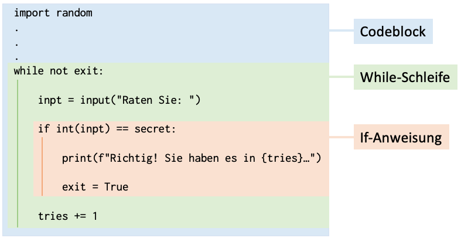
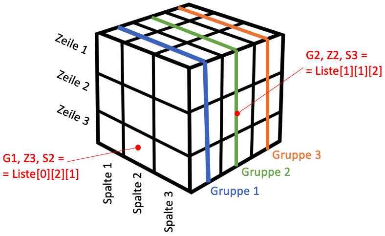

Programmieren für alle!
Einführung in die Programmierung mit Python.
Inhaltsverzeichnis
- 1. Einleitung
- 2. Erste Schritte und Grundlagen
- 3. Funktionen und Methoden
- 4. Python erweitern
- 5. Datentypen
- 6. Skripte erstellen und ausführen
- 7. eigene Funktionen schreiben
- 8. Kontrollstrukturen
- 8.1. Die
whileSchleife - 8.2. Die
forSchleife - 8.3. Verzweigungen / Fallunterscheidungen
- 8.4. Aufgaben
- 8.4.1. Verschachtelte Schleifen
- 8.4.2. Absteigende Dominosteine
- 8.4.3. Quersumme berechnen
- 8.4.4. Summe zwischen zwei beliebigen Ganzzahlen
- 8.4.5. Konsonant oder Vokal?
- 8.4.6. Bip!, Blop!, Beeebop!
- 8.4.7. Hundejahre
- 8.4.8. BMI Klassifikation
- 8.4.9. Rate es!
- 8.4.10. Stein, Schere, Papier (Echse, Spock)
- 8.1. Die
- 9. Datenstrukturen: Collections
- 10. Datum und Zeit
- 11. Mit Dateien arbeiten
- 12. Lösungen zu den Aufgaben
- 12.1. Kapitel: eigene Funktionen schreiben
- 12.2. Kapitel: Kontrollstrukturen
- 12.2.1. Konsonant oder Vokal?
- 12.2.2. Verschachtelte Schleifen
- 12.2.3. Absteigende Dominosteine
- 12.2.4. Quersumme berechnen
- 12.2.5. Bip!, Blop!, Beeebop!
- 12.2.6. Hundejahre
- 12.2.7. Summe zwischen zwei beliebigen Ganzzahlen
- 12.2.8. BMI Klassifikation
- 12.2.9. Rate es!
- 12.2.10. Stein, Schere, Papier (Echse, Spock)
- 12.3. Kapitel: Datenstrukturen
- 12.4. Kapitel: Mit Dateien arbeiten
- 13. Weiterführende Literatur
- 14. Rechtliches und Impressum
.::::::::::.
.::``::::::::::.
:::..:::::::::::
````````::::::::
.::::::::::::::::::::::: iiiiiii,
.:::::::::::::::::::::::::: iiiiiiiii.
::::::::::::::::::::::::::: iiiiiiiiii
::::::::::::::::::::::::::: iiiiiiiiii
:::::::::: ,,,,,,,,,,,,,,,,,iiiiiiiiii
:::::::::: iiiiiiiiiiiiiiiiiiiiiiiiiii
`::::::::: iiiiiiiiiiiiiiiiiiiiiiiiii`
`:::::: iiiiiiiiiiiiiiiiiiiiiii`
iiiiiiii,,,,,,,,
iiiiiiiiiii''iii
`iiiiiiiiii..ii`
`iiiiiiiiii`
Der nachfolgende Text entstand als Skript für einen Einführungskurs ins Programmieren an der Universität Regensburg. Näheres zu Impressum und Rechtliches finden Sie hier.
Ich wünsche viel Spaß beim Lesen und Durcharbeiten des Skriptes.
1. Einleitung
1.1. Ziel und Aufbau des Kurses
Dies ist ein Kurs für Programmieranfänger*innen ohne Vorkenntnisse. Genau aus diesem Grund habe ich auch die Programmiersprache Python gewählt. Python ist durch seine Schlichtheit perfekt geeignet, die wichtigsten Programmierparadigmen Einsteiger*innen zu vermitteln. Es ist aber gleichzeitig so komplex, erweiterbar und verbreitet, dass man damit (fast) alles programmieren kann und man somit ein mächtiges Werkzeug in Händen hält, das man viele (Programmier-)Jahre später immer noch brauchen kann und - da bin ich mir sicher - lange nicht ausgelernt hat.
Sie können Python unter anderem verwenden, um:
- Ihren administrativen Alltag am Computer zu erleichtern und viele Aufgaben zu automatisieren,
- Web- und Desktopanwendungen zu entwickeln,
- im Bereich Data Science, Maschinelles Lernen, KI und Spracherkennung zu arbeiten,
- um Erweiterungen für viele Programme, wie Cinema 4D, Paint Shop Pro oder GIMP zu schreiben,
- oder um ihren RaspBerry Pi zu steuern.
- Selbst die Programmierung aufwändigerer GUI Programme ist damit zu bewerkstelligen.
Neben dem Programmieren mit Python soll der Blick in diesem Kurs aber auch auf das Programmieren „an sich“ gerichtet sein. Was hei√üt Programmieren eigentlich? Was geschieht da am Computer? Welche Konzepte tauchen unabh√§ngig von der tats√§chlich verwendeten Prorammiersprache immer wieder auf? Wie kann man von Anfang an einen guten Programmierstil erlernen? Und welche Fallstricke tauchen immer wieder auf? Kurzum, ich m√∂chte Ihnen zeigen, wie Sie von Anfang an „weniger schlecht programmieren“, wie auch ein Titel des sehr guten Buches von Kathrin Passig und Johannes Jander hei√üt.
Der Kurs ist so aufgebaut, dass er dem/der Anfänger*in ein Grundgerüst an Programmiertechniken in Python vermitteln soll, so dass mit diesem Wissen später weitere Konzepte erschlossen werden können. Das Wissen soll durch eine diverse Bandbreite an Übungen vertieft werden.
Verschiedene Kästen geben nützliche Hintergrundinfos oder weisen auf weit verbreitete Fehler und Stolperfallen beim Programmieren hin. Drei solcher Kästen gibt es:
- üí°üßê n√ºtzliche Tipps und Hintergrundinfos
- ‚ö†Ô∏èüëÜ Hinweis auf Stolperfallen und gern gemachte Fehler
- üÖ∞Ô∏èüÜöüÖ±Ô∏è Vergleich zwischen Python und anderen Programmiersprachen
1.2. Python - ein kurzer Überblick
Viele Studien und Nutzerbefragungen der letzten Jahre zeigen, dass Python zu den top Programmiersprachen gehört, die erstens tatsächlich im Berufsalltag verwendet werden, die zweitens ganz weit vorne auf der Wunschliste vieler Programmier*innen steht und die drittens dabei tatsächlich auch noch Spaß machen soll. Auch auf dem berühmten TIOBE Index ist Python seit gut 5 Jahren unter den ersten Plätzen zu finden. Das bedeutet, dass Python nun auch in der Industrie angekommen ist.

Abbildung 1: Python ist auf Platz 4 der am häufigsten verwendeten Programmiersprachen im Berufsalltag von Programmier*innen weltweit. (Quelle: https://insights.stackoverflow.com/survey/2020#technology-programming-scripting-and-markup-languages-professional-developers)
Abbildung 2: Python ist aber auch ganz weit vorne, wenn es um die Frage geht, was Programmierer:innen unbedingt noch lernen wollen. (Quelle: https://insights.stackoverflow.com/survey/2020#technology-most-loved-dreaded-and-wanted-languages-wanted)
Abbildung 3: Und bei alledem scheint Python auch noch richtig Spaß zu machen. (Quelle: siehe Abbildung oben.)

Abbildung 4: Neben C und Java ist Python nun unter den Top 3 Programmiersprachen, noch vor C++.
Wie konnte es zu diesem Aufstieg in den letzten Jahren kommen?
1.2.1. Die Anfänge
Die Sprache Python erblickte laut Wikipedia am 20. Februar 1991 durch seinen niederl√§ndischen Sch√∂pfer Guido van Rossum am Centrum voor Wiskunde das Licht der Welt. Urspr√ºnglich war es als Skriptsprache f√ºr das Betriebssystem Amoeba gedacht. Van Rossum hatte zuvor schon an der Programmiersprache ABC mitgewirtk, die so einfach sein sollte, dass sie von jedem interessierten Laien benutzt werden konnte. Diese Erfahrungen konnte er f√ºr die Entwicklung von Python nutzen. Python sollte so einfach wie m√∂glich zu erlernen aber gleichzeitig so m√§chtig wie n√∂tig sein, um sie wirklich in so gut wie allen Projekten einzusetzen. Weiter unten kann die „Philosophie“ Pythons im Zen of Python nachlesen.
Auf Youtube findet sich ein kurzes Interview mit Guido van Rossum zur Entstehung von Python.
1.2.2. Python heute
Mittlerweile sind wir bei der dritten Version (also 3.x) von Python angekommen. Anfang der 2000er führte Pythons Ruf, sehr einfach aber dennoch mächtig zu sein, dazu, dass es an vielen Universitäten für Einsteigerkurse ins Programmieren eingesetzt wurde. Doch der eigentliche Durchbruch begann ca. 2015, als Python vor allem im Bereich der Künstlicen Intelligenz und dort beim sog. Deep Learning mit Neuronalen Netzen verwendet wurde. Python bekam den Ruf die Sprache für Data Science zu sein und mit dem Aufstieg der Data Science Welle, stieg auch Python mit auf.
An dieser Historie lässt sich gut ablesen, was Python von Anfang an ausmachte. Es ist nach wie vor relativ einfach zu lernen, aber so mächtig, dass es sich in den wichtigsten Gebieten der Informatik und der Industrie mühelos einsetzen lässt. Und die Arbeit an Python hört nicht auf. Sowohl die Einfachheit wird weiter verbessert. So hat man in der Version 3.10 die Fehlerausgabe stark verbessert und damit Anfänger*innen noch zugänglicher gemacht. Aber auch an der Mächtigkeit wird weiterhin geschraubt. So gibt es seit Python 3.8 Assignment Operationen und seit 3.10 ein mächtiges Pattern Matching. Doch Python soll vor allem auch schneller werden und damit konkurrenzfähig bleiben - dafür setzt sich sogar Guido van Rossum persönlich ein.
Python hat also nicht nur eine grandiose Gegenwart sondern es steht ihm auch noch eine fruchtbare und lange Zukunft bevor.
1.3. Installation
Python ist sehr leicht über den mitgelieferten Installer auf Windows und Mac OSX zu installieren. Auch auf den meisten Linux Distributionen ist es schon vorinstalliert und kann mit wenig Aufwand auf die aktuellste Version geupdated werden.
1.3.1. Windows
Unter Windows 10/11 lässt sich Python leicht über das auf https://python.org bereitgestellte Installationsprogramm installieren.
Gehen Sie also auf die Python Webseite und fahren Sie mit der Maus √ºber Downloads. Es sollte sich eine Ansicht √∂ffnen, bei der Sie einen Button „Download for Windows - Python 3.x.x“ sehen. Klicken Sie auf diesen Button und das Installationsprogramm wird heruntergeladen.

Starten Sie das Installationsprogramm. Setzen Sie den Haken unbedingt bei „Add Python 3.X to Path“ (!!). Klicken Sie dann auf „Install Now“ und warten, bis die Installation beendet ist.

Nach der Installation können Sie über das Windows Startmenü Python starten. Es öffnet sich dann eine Konsole, mit der Sie Ihren ersten Python Code eingeben und ausführen können.

Anschließend können Sie noch testen, ob in Windows auch die Pfade
zu den Python Programmen richtig gesetzt wurden. Öfnnen Sie dazu
eine Eingabeaufforderung (dr√ºcken Sie die Windowstaste + „R“ und
geben in das sich √∂ffnende Fenster „cmd“ ein. Klicken Sie dann auf
„ok“.) und geben zuerst ein python --version und danach pip
--version. In beiden Fällen sollte kein Fehler kommen und die
Ausgabe ähnlich wie die in der nächsten Abbildung sein.

1.3.2. Mac OSX
Python ist zwar unter Mac OS schon vorinstalliert, allerdings in
der nicht mehr brauchbaren Version 2.7. Öffnen Sie also ein
Terminal (dr√ºcken Sie Command + Leertaste und geben „Terminal“
ein) und geben dort python ein, so startet sich Python mit einer
Warnung, dass man doch bitte python3 ausführen solle. Möchte man
dies tun, so will Mac OS die Apple Developer Tools herunterladen,
die auch Python 3 enthalten, aber eventuell nicht die aktuellste
Version. Auch ein Update auf eine neuere Python Version wird so
schwierig.
Am besten fährt man unter Mac OSX ähnlich wie bei Windows, dass man sich den offiziellen Installer von der Python Webseite herunterlädt.
Gehen Sie dazu auf obige Seite und gehen mit der Maus auf den Men√ºpunkt Downloads. Normalerweise, sollte ihr Brwoser der Seite mitteilen, dass Sie unter Mac OS unterwegs sind und einen Button mit „Download for macOS“ anzeigen. Klicken Sie auf den Button und laden das Installationsprogramm herunter.

Doppelklicken Sie die Datei python-3.X-macosXX.pkg in Ihrem
Downloadordner und folgen Sie den Installationsschritten.
Nach der Installation finden Sie Python installiert unter
Macintosh HD/Programme/Python 3.X.
Testen der Installation
Öffnen Sie das Mac Programm Terminal entweder aus Ihrem Programmordner
oder über die Tastenkombination Command-Leertaste. Geben Sie dort dann
den Befehl python3 --version ein. Wenn keine Fehlermeldung kommt und
die korrekte aktuelle Python Version 3.X (Stand 08.04.2024 ist es
Version 3.12.x) angezeigt wird, wurde Pytho korrekt installiert.
1.3.3. Linux
Unter den meisten gängigen und aktuellen Linux Distributionen
(Ubuntu, OpenSUSE, Fedora, Arch Linux, etc.) ist Python 3 schon
installiert. Sie können das in Ihrer Konsole mit dem Befehl
python3 --version testen. Möchten Sie allerdings die aktuellste
Python Version verwenden, müssen Sie entweder eine Fremdquelle in
Ihre Paketverwaltung einbinden, oder Python direkt aus dem
Sourcecode kompilieren.
Installation aus einer Fremdquelle (am Bsp. Ubuntu)
F√ºr das Hinzuf√ºgen einer Fremdquelle in einer anderen Distribution ausser Ubuntu, befragen Sie bitte das „allm√§chtige“ Google: „install python 3.12 on xxx“.
Aktualisieren Sie zuerst alle Programme:
sudo apt update && sudo apt upgrade -y
Installieren Sie nun die nötigen Abhängigkeiten für das Hinzufügen von Fremdquellen im System:
sudo apt install software-properties-common -y
Fügen Sie nun die Fremdquelle deadsnakes hinzu, die immer die aktuellen Python Version fertig kompiliert für Ubuntu vorhält.
Achtung! Das Hinzufügen von Fremdquellen kann eine Sicherheitslücke für Ihr System bedeuten!
sudo add-apt-repository ppa:deadsnakes/ppa
Installieren Sie dann die aktuellste Version (Stand 08.04.2024: Python 3.12):
sudo apt install python3.12
Testen Sie dann wie oben die installierte Version mit dem Befehl
python3.12 --version.
Installation aus dem Sourcecode
Wenn Sie Python aus den Quellen installieren, haben Sie den großen Vorteil, dass die Installation auf ihr System optimiert ist. Sie bekommen aber keine automatischen Updates, auch keine Sicherheit-Updates, sondern müssen sich ab dann selbst darum kümmern, nach der Veröffentlichung einer neuen Python Version diese dann wieder manuell zu installieren.
Auch hier beschreibe ich den Prozess aus Sicht von Ubuntu. Bei einer anderen Linux Distribution fragen Sie bitte ebenfalls Google.
Aktualisieren Sie zuerst Ihr System und installieren dann die für das Kompilieren nötigen Abhängigkeiten:
sudo apt update sudo apt install build-essential zlib1g-dev libncurses5-dev libgdbm-dev libnss3-dev libssl-dev libreadline-dev libffi-dev libsqlite3-dev wget
Laden Sie dann das aktuelle Quellpaket per wget herunter. Den
Link auf die aktuellste Version finden Sie übrigens immer unter
diesem Link: https://www.python.org/downloads/source/
wget https://www.python.org/ftp/python/3.12.2/Python-3.12.2.tgz
Entpacken Sie das heruntergeladen Archiv und wechseln Sie in das entstehende Verzeichnis.
tar -xf Python-3.*.tgz cd Python-3.*
Starten Sie die Konfiguration:
./configure --enable-optimizations
Prüfen Sie mit dem Programm nproc, wieviele Kerne Ihre CPU hat.
nproc
Geben Sie Zahl, die nproc ausgibt im folgenden Befehl ein. Haben Sie also eine CPU mit vier Kernen, so geben Sie im nachfolgenden Befehl 4 ein.
make -j 4
Anschließend installieren Sie das kompilierte Programm:
sudo make altinstall
Testen Sie zuletzt die Installation über den Befehl python3.12 --version.
1.4. Pythons Philosophie: das Python Zen
Starten Sie die Python Eingabeaufforderung und geben Sie folgendes ein.
import this
Danach sollte folgendes „Gedicht“ erscheinen:
The Zen of Python, by Tim Peters Beautiful is better than ugly. Explicit is better than implicit. Simple is better than complex. Complex is better than complicated. Flat is better than nested. Sparse is better than dense. Readability counts. Special cases aren't special enough to break the rules. Although practicality beats purity. Errors should never pass silently. Unless explicitly silenced. In the face of ambiguity, refuse the temptation to guess. There should be one-- and preferably only one --obvious way to do it. Although that way may not be obvious at first unless you're Dutch. Now is better than never. Although never is often better than *right* now. If the implementation is hard to explain, it's a bad idea. If the implementation is easy to explain, it may be a good idea. Namespaces are one honking great idea -- let's do more of those!
1.5. Hilfe und Training.
1.5.1. Wo bekomme ich Hilfe?
Erste Hilfe sollten Sie immer in der offiziellen Dokumentation auf Python.org suchen. Als erster Einstieg dient hier vor allem die Übersichtsseite der Standardbibliothek. Hier finden Sie f√ºr s√§mtliche „eingebaute“ Funktionen von Python die Dokumentation.
Gleiches gilt für importierte Module. Bei Fehlern und Problemen sollte man auch hier erst einmal die offizielle Dokumentation, falls sie denn hoffentlich vorhanden ist, konsultieren. Die Chancen eine gute Dokumentation zu finden stehen aber in der Python Community sehr gut, da man sich häufig bemüht die exzellente Dokumentation von Python.org nachzuahmen. So sind z.B. die Dokumentationen wichtiger Python Module, wie Django, Matplotlib, Beautifulsoup oder Pandas sehr vorbildlich aufgebaut und strukturiert.
Allerdings will es auch gelernt sein, technisch-informatische Dokumentationen zu lesen. Steht man nach der Konsultation immer noch wie der sprichw√∂rtliche „Ochs vor’m Berg“, so gibt es eine wichtige Seite, die so gut wie allen Programmierern weltweit schon oft den Tag gerettet hat. Die Rede ist von StackOverflow. Oft ist hier nur eine kurze Suche von N√∂ten, um eine gute L√∂sung f√ºr ein bestimmtes Problem zu finden. Sucht man Hilfe auf Deutsch, ist das nach wie vor sehr aktive Python-Forum zu nennen.
Zu guter Letzt kann man aber natürlich auch auf die Suche in Youtube zurückgreifen und findet das eine oder andere kurze Video, das einem weiterhelfen kann.
1.5.2. Training, Training, Training!
Programmieren lernen geschieht, wie auch beim Sprachenlernen, durch viele Wiederholungen. Repetitive Übungen helfen, die Sprache metaphorisch „in die Finger zu bekommen“. Muscle memory ist eine wichtige, oft unbedachte Komponente erfolgreichen Programmierens. Repititive Aufgaben sollten aber auch Spa√ü machen. Wer erinnert sich nicht an so manchen Sprachunterricht in der Schule mit sturem Auswendiglernen von Vokabeln. Und seien wir ehrlich: so etwas w√ºrde doch beim Programmieren gar nicht funktionieren, einfach bestimmte Funktionsnamen, Konstrukte etc. auswendig zu lernen. Zum guten Programmieren geh√∂rt noch einen weiterer Skill, der so w√ºrden manche sagen, vielleicht sogar deckungsgleich ist mit der T√§tigkeit des Programmierens an sich. Es ist der des Probleml√∂sens, oder auf englisch noch viel treffender beschrieben als algorithmic thinking; also das „Denken in Algorithmen“.
Gute Webseiten und Bücher zum Programmieren Trainieren
- [Buch:] Lo Iacono et.al.: Programmieren Traninieren mit über 120 Workouts in Java und Python
- [Buch:] Stephenson, Ben: The Python Workbook. A brief introduction with exercises and solutions
- [Webseite:] Advent of Code Seit 2015 gibt Eric Wastl einen Adventskalender heraus mit 24 Problemen, die programmatisch gelöst werden sollen. Die Sprache, in der ein Problem gelöst wird ist völlig frei wählbar.
- [Webseite:] Auf Codewars.com kann man aus vielen verschiedenen Programmiersprachen auswählen - unter anderem eben auch Python - und kann dann über kleiner Programmierrätsel im Rang steigen und sich mit anderen Programmierer*innen messen.
- [Webseite:] Auf HackerRank.com kann man aus vielen Programmierthemen wählen und dazu passende Übungen unter anderem mit Python lösen.
2. Erste Schritte und Grundlagen
2.1. Die REPL
Um die ersten Gehversuche mit Python zu unternehmen, genügt es, in
die Eingabeaufforderung Ihres Betriebsystems zu wechseln, und den
Befehl python unter Windows, bzw. python3 unter Mac OSX und Linux
einzugeben.
üí°üßê Die Eingabeaufforderung
Die Eingabeaufforderung, oder auch Kommandozeile oder Konsole ist eine Umgebung innerhalb des Betriebssystems, in die Befehle eingetippt werden können, um mit dem Betriebssystem zu interagieren. Je nach Betriebssystem lässt sich damit mehr oder weniger bewerkstelligen.
Windows: Unter Windows erreichen Sie die Eingabeaufforderung entweder indem Sie in ihrem Windows Men√º (nach Dr√ºcken der Windows-Taste) „cmd“ eingeben, oder „cmd“ nach dem Dr√ºcken der Tastenkombination „Windows-Taste“+„r“ eingeben.
Mac OSX: Auf einem Mac gelangen Sie √ºber die App Terminal in die Eingabeaufforderung. Starten sie „Terminal.app“ aus dem Ordner „Programme/Dienstprogramme“, oder dr√ºcken Sie die Tastenkombination „Command“+„Leertaste“ und geben Sie „Terminal“ ein.
Linux: Da es verschiedene Terminalprogramme f√ºr die unterschiedlichsten Linux Desktops gibt, kann hier keine allgemeine Aussage getroffen werden. Meist hei√üen diese Programme aber auch „Terminal“, „Konsole“ oder „Console“.
Geben Sie also nun in der Kommandozeile python bzw. python3 ein, so
begrüßt sie die sog. Python REPL.
Das Akronym REPL steht für:
- R ead
- E valuate
- P rint
- L oop
Die REPL liest (read) Eingaben von der Kommandozeile. Diese werden daraufhin √ºberpr√ºft, ob es sich um „sauberen“ Pythoncode handelt (evaluate), woraufhin dann etwas zur√ºckgegeben wird (print), entweder eine Fehlermeldung oder die R√ºckgabe des ausgef√ºhrten Pythoncodes. Zuletzt wird alles wieder auf Anfang gesetzt (loop) und wieder auf eine Eingabe gewartet.
Probieren Sie es aus! Geben sie nacheinander folgende Zeichenfolgen ein:
- 345
- hallo
- „hallo“
- print(345)
print(„hallo“)
>>> 345 345 >>> hallo Traceback (most recent call last): File "<stdin>", line 1, in <module> NameError: name 'hallo' is not defined >>> "hallo" 'hallo' >>> print(345) 345 >>> print("hallo") hallo
Gibt man in die REPL eine Zahl ein, so wird diese von der REPL wieder
zurückgegeben. Scheinbar handelt es sich bei einer Zahl also um etwas,
womit Python, genauer gesagt der Interpreter der REPL etwas anfangen
kann. Daher wird diese Zahl auch wieder zurückgegeben. Mit der
Buchstabenfolge „h“, „a“, „l“, „l“ und „o“ kann der Interpreter aber
nichts anfangen. Es wird eine Fehlermeldung, genauer gesagt ein
NameError zurückgegeben. Was das bedeutet werden wir gleich noch im
Kapitel Variablen sehen. Erst wenn man die Buchstabenfolge hallo mit
doppelten Anführungszeichen schreibt, also "hallo", so kann der
Pythoninterpreter etwas damit anfangen und gibt 'hallo' in einfachen
Anführungszeichen zurück. Warum das klappt, sehen wir in den Kapiteln
Datentypen und Strings.
Mit print() haben Sie auch schon den ersten Befehl eingegeben, bzw.
die erste Funktion aufgerufen. Der Befehl print() veranlasst den
Interpreter, etwas zu „printen“, also etwas in die Kommandozeile zu
schreiben. Einmal schrieb print die Zahl 345 und einmal die
Zeichenfolge „hallo“, allerdings ohne Anf√ºhrungszeichen. Genaueres
wie gesagt im Kapitel Strings.
Die REPL ist sehr n√ºtzlich, wollen Sie etwas mit Python ausprobieren. Nat√ºrlich k√∂nnen Sie damit keine l√§ngeren und vor allem dauerhaften Programme schreiben, aber zum „Herumspielen“ und Testen von Konzepten, Funktionen, Modulen etc. ist die REPL unverzichtbar.1 Sie wird uns auf jeden Fall auf dem Weg unserer ersten Schritte mit Python begleiten, bevor wir sp√§ter dazu √ºbergehen werden, l√§ngeren Programmcode in Textdateien zu schreiben und diese dann auszuf√ºhren.
üí°üßê Die REPL verlassen
Mit dem Befehl
exit()können Sie die REPL einfach wieder verlassen. Geben Sie einfachexit()ein, drücken Sie Enter und schon sind Sie wieder in der Eingabeaufforderung zurück!
2.2. Mathematische Operationen
Wir können nun weitere Zeichen in die REPL eingeben, die von Python
interpretiert werden k√∂nnen und die ein bisschen „spannender“ sind
als einfache Buchstaben- und Zahlenfolgen und die auch „Effekte“
mit sich bringen. Dazu gehören unter anderem mathematische
Operatoren, wie + (Plus) und - (Minus). Damit können wir die REPL
wie einen kleinen Taschenrechner verwenden. Wir geben mathematische
Operationen ein, welche der Python Interpreter liest, evaluiert und
dann das Ergebnis zurückgibt.
2.2.1. Addition und Subtraktion
>>> 34 + 67 101 >>> 67 - 34 33 >>> 34 - 67 -33 >>> -33 + 67 34
Sie sehen, Python beherrscht sowohl den positiven, als auch den negativen Zahlenbereich.
2.2.2. Multiplikation und Division
Oben konnten sie f√ºr die Addition und Subtraktion die aus der Mathematik gel√§ufigen Zeichen „+“ und „-“ eingeben. F√ºr Multiplikation und Division werden in Python allerdings das Sternchen „*“ und der Schr√§gstrich „/“ (forward slash) verwendet.
>>> 45 * 7 315 >>> 315 / 7 45.0 >>> 315 / 22 14.318181818181818 >>> 2.17 * 3.5 7.595 >>> 7 / 0 Traceback (most recent call last): File "<stdin>", line 1, in <module> ZeroDivisionError: division by zero
Wie Sie an den Beispielen gleich merken sollten, gibt Python bei der Division automatisch das Ergebnis in Dezimalschreibweise an. Dezimalzahlen werden √ºbrigens nach anglo-amerikanischem Gebrauch mit einem „Punkt“ als Dezimaltrenner geschrieben und ausgegeben, statt wie in Deutschland √ºblich mit einem „Komma“. Die Eingabe von „3,5“ wird daher von Python nicht als Zahl verstanden. Nat√ºrlich gibt Python eine Fehlermeldung aus, m√∂chte man durch Null teilen, denn dies ist „mathematischer Unsinn“.
2.2.3. Modulo, Exponent und floor Division
Die letzten drei in Python verf√ºgbaren mathematischen Operatoren sind Prozentzeichen („%“), Doppelsternchen („**“) und Doppel-forward-slash („//“).
Mit dem Prozentzeichen kann man sog. Modulo Operationen durchführen. Dabei wird immer der Rest der Division von einer Ganzzahl durch eine andere zurückgegeben.
>>> 9 % 3 0 >>> 9 % 4 1 >>> 9 % 5 4
„9 geteilt durch 3“ ist eben 3 Rest 0. Also wird „0“ zur√ºckgegeben.
„9 geteilt durch 4“ ist 2 (denn „8 durch 4“ ist 2) Rest 1. Es wird „1“ zur√ºckgegeben.
„9 geteilt durch 5“ ist 1 Rest 4. Es wird „4“ zur√ºckgegeben.
Die Modulooperation von Dezimalzahlen verhält sich etwas anders, worauf wir aber hier an dieser Stelle nicht eingehen müssen.
Mit dem Doppelsternchen kann man einen Exponenten setzen, also Beispielsweise „3 hoch 2“ \(3^2\) oder „2 hoch 5“ \(2^5\).
>>> 3 ** 2 9 >>> 2 ** 5 32 >>> 3.75 ** 3 52.734375 >>> 3 ** -1 0.3333333333333333
Dies funktioniert auch „mathematisch korrekt“ mit Dezimalzahlen und negativen Exponenten.
Der letzte Operator „//“ f√ºhrt eine sog. floor Division aus. Dabei wird eine Zahl durch eine andere Zahl geteilt und dann auf die n√§chste Ganzzahl abgerundet. So ergibt „14 geteilt durch 4“ eigentlich „3,5“. Bei der floor division wird dann auf „3“ abgerundet, bzw. der Dezimalanteil abgeschnitten.
>>> 14 // 4 3 >>> 25 // 5.99 4.0
2.2.4. Klammersetzung
Python kennt durch eine unterschiedlich starke Bindung von Operatoren
auch so etwas wie die „Punkt-vor-Strich-Rechnung“, sodass der Ausdruck
3 + 5 * 2 korrekterweise „13“ und nicht „16“ zur√ºckgibt, da nat√ºrlich
zuerst die Multiplikation „5 mal 2“ und dann die Addition „3 plus 10“
ausgeführt werden muss.
Falls die Berechnungen aber länger werden, sollte man sich nicht unbedingt auf die Bindungen der Operatoren verlassen und stattdessen lieber Klammern setzen.
>>> 3 + 5 * 2 13 >>> (3 + 5) * 2 16 >>> (3 + 5) * 2 % 3 1 >>> ((3 + 5) * 2) % 3 1 >>> (3 + 5) * (2 % 3) 16
2.2.5. Zusammenfassung
Folgende mathematische Operatoren gibt es von Haus aus in Python:
| Operator | Operation |
|---|---|
| + | Addition |
| - | Subtraktion |
| * | Multiplikation |
| % | Modulo |
| ** | Exponent |
| // | floor Division |
2.3. Logische Operatoren
Zusammen mit den mathematischen Operatoren bilden die logischen
Operatoren die Grundlage einer jeden Programmiersprache. Logische
Operatoren prüfen einen Ausdruck (z.B. den Vergleich zweier
Rechenoperationen) darauf, ob er wahr oder falsch ist und geben je nach
dem entweder den Wert True oder False zurück.
Als erstes sollen Zahlenwerte miteinander verglichen werden, ob sie grösser, kleiner oder gleich gross sind. Dazu dienen uns die folgenden sechs Vergleichsoperatoren:
| Operator | Bedeutung |
|---|---|
| == | ist gleich |
| != | ist ungleich |
| > | ist grösser |
| < | ist kleiner |
| >= | ist grösser oder gleich |
| <= | ist kleiner oder gleich |
>>> 8 == 3 + 5 True >>> 9 / 2 != 4 True >>> 9 / 2 != 4.5 False >>> 5 * 2 < 2 * 5 False >>> 5 * 2 > 70 / 3 False >>> 35 >= 7 * 5 True >>> 89 <= 12 * 11 True
‚ö†Ô∏èüëÜ Vorsicht mit Gleichheitszeichen!
Aus der Mathematik sind sie gewohnt, das Gleichheitszeichen „=“ zu benutzen, um zwei mathematische Ausdr√ºcke links und rechts vom Zeichen auf Gleichheit zu pr√ºfen.
Wie wir im n√§chsten Kapitel aber sehen werden, ist dieses Zeichen schon f√ºr eine andere Operation, n√§mlich das Zuweisen von Werten zu einer Variablen, reserviert. Daher besteht der Operator zur Pr√ºfung auf Gleichheit in Python aus zwei Gleichheitszeichen hintereinander ohne Leerzeichen: „==“!
„
=" und "==“ zu vertauschen ist ein beliebter Leichtsinnsfehler beim Programmieren, der auch den erfahrensten Programmierer*innen immer immer mal wieder widerf√§hrt.
Die logischen Rückgabewerte True (wahr) und False (falsch) lassen
sich aber weiter verknüpfen mit den logischen Operatoren and (und),
or (oder) und not (nicht). Diese Operatoren werden später sehr
wichtig, um Bedingungen innerhalb Ihres Programms zu prüfen und je
nachdem zu handeln, ob die Pr√ºfung „wahr“ oder „falsch“ zur√ºckgibt.
2.3.1. Logisches „Und“
Werden Ausdrücke mit and verknüpft, so wird True nur dann
zurückgegeben, wenn alle Ausdrücke auch True sind, ansonsten wird
False zurückgegeben. So gibt z.B. der Ausdruck (3 < 5) and (5 < 7)
„wahr“ zur√ºck, da sowohl „3 < 5“ wahr ist, als auch „5 < 7“. Ist
nur ein Ausdruck nicht wahr, so wird False zurückgegeben.
>>> (3 < 5) and (5 < 6) True >>> True and True True >>> (7 * 5 == 35) and ((3 < 5) and (5 < 7)) True >>> True and (True and True) True >>> (8 + 4 > 2 * 3) and ((2 * 4 < 5) and (5 < 7)) False >>> True and (False and True) False
‚ö†Ô∏èüëÜ Gross- und Kleinschreibung beachten!
Python ist case-sensitive, d.h. der Interpreter achtet auf die Gross- und Kleinschreibung bei feststehenden Ausdr√ºcken und Funktionen. Der Wert f√ºr „wahr“ heisst
Trueund nichttrue. Der logische Operator heisstandund nichtAndoder garAND(wie in anderen Programmiersprachen). Der Befehl heisstprint()und nichtPrint().>>> (3 < 5) == True True >>> (3 < 5) == true Traceback (most recent call last): File "<stdin>", line 1, in <module> NameError: name 'true' is not defined. Did you mean: 'True'? >>> True and False False >>> True AND False File "<stdin>", line 1 True AND False ^^^ SyntaxError: invalid syntax
Es gibt eine Abkürzung für and und diese lautet: &, also eine
„Kaufmanns-Und“.
2.3.2. Logisches „Oder“
Der logische Operator or verhält sich dabei invers zum Operator
and. Hier wird True zurückgegeben, sobald auch nur ein einziger
Ausdruck, der mit or verknüpft ist, True ist. False wird nur
zurückgegeben, falls alle Ausdrücke, die mit or verknüpft sind auch
False sind.
>>> 8 < 9 or 5 > 9 True >>> True or False True >>> ((2 + 3 == 6) and 1) or 9 != (3 * 3) False >>> ((False and True) or False) False
2.3.3. Logisches „Nicht“
Der letzte logische Operator ist not. not invertiert einfach die
zurückgegebenen Wahrheitswerte. Ein Ausdruck, der wahr ist, wird
durch ein vorangestelltes not falsch und ein falscher Ausdruck eben
wahr.
>>> not True False >>> not (3 > 5) True >>> (3 > 5 or 4 < 8) and not 9 == 2 * 3 True
2.3.4. Zusammenfassung: Wahrheitstabelle
Die Logischen Operatoren lassen sich in folgender Wahrheitstabelle zusammenfassen:
| A | B | not A | not B | A and B | A or B | not (A and B) | not (A or B) |
|---|---|---|---|---|---|---|---|
| True | True | False | False | True | True | False | False |
| False | True | True | False | False | True | True | False |
| True | False | False | True | False | True | True | False |
| False | False | True | True | False | False | True | True |
üí°üßê Logik im Alltag
Wenn Obiges zur Logik für Sie noch verwirrend sein sollte, machen Sie sich keinen Kopf. Probieren Sie sich am besten an einem Alltagsbeispiel.
Stellen Sie sich vor, ich mache die Aussage „Kathrin sitzt am Fr√ºhst√ºckstisch und trinkt Kakao.“ Darin stecken ja die zwei Aussagen A „Kathrin sitzt am Fr√ºhst√ºckstisch“ und B „Kathrin trinkt Kakao“. Diese Aussagen A und B sind mit und verkn√ºpft. Das heisst, dass beide Aussagen wahr sein m√ºssen, damit der ganze Satz „Kathrin sitzt am Fr√ºhst√ºckstisch und trinkt Kakao“ auch wahr wird. Denn wenn Kathrin nicht am Fr√ºhst√ºckstisch sitz, sondern am Esszimmertisch wird der Satz genauso falsch, als wenn Kathrin Kaffee statt Kakao trinkt.
Verbindet man allerdings die Aussagen A und B mit oder und formt somit den Satz „Kathrin sitzt am Fr√ºhst√ºckstisch oder trinkt Kakao“, muss nur eine der Aussagen wahr sein, oder auch beide, damit der ganze Satz wahr wird. Denn der Satz bleibt wahr, wenn Kathrin zwar am Fr√ºhst√ºckstisch sitzt aber keinen Kakao sondern, Kaffee trinkt. Und er bleibt ebenfalls wahr, falls Kathrin Kakao trinkt, aber nicht am Fr√ºhst√ºckstisch, sondern etwa auf der Couch. Der ganze Satz wird nur falsch, wenn Kathrin weder am Fr√ºhst√ºckstisch sitzt, noch Kakao trinkt.
Ein „nicht“ dreht eben die Wahrheitswerte um. „Nicht“ kann am besten mit der Wendung „es ist nicht der Fall, dass“ widergegeben werden. Der Satz „Es ist nicht der Fall, dass Kathrin am Fr√ºhst√ºckstisch sitzt und Kakao trinkt“ ist nur dann wahr, wenn Kathrin entweder nicht am Fr√ºhst√ºckstisch sitzt oder keinen Kakao trinkt, oder beides. Er ist nur dann falsch, wenn Kathrin am K√ºchentisch sitzen w√ºrde und dort gen√ºsslich ihren Kakao schl√ºrft.
üí°üßê Logik, Bits und Bytes
Logik ist ein essentieller Bestandteil jedes elektronischen Bauteils, jeder Recheneinheit und damit auch jeder Art von Programmierung. Moderne Programmiersprachen „verstecken“ gerne die Tatsache, dass bei der Ausf√ºhrung eines Programmcodes im Hintergrund eine einzige Abfolge von logischen Operatoren laufen. Dies hat mit der Tatsache zu tun, dass Computer auf Hardwareebene nur mit „1“ und „0“ rechnen. S√§mtliche Zahlen, die ein Computer kennt, sind durch Einser und Nullen im sog. Bin√§rsystem repr√§sentiert. So ist z.B. „101“ die Zahl „5“.2 Auf Elektronikebene bedeutet dann „1“ „Strom fliesst“ und „0“ bedeutet „kein Strom fliesst“. Die Aussage „es fliesst Strom“ ist also bei „1“ wahr und bei „0“ falsch. Somit kann man aber auch „1“ gleichsetzen mit „wahr“, bzw.
Trueund „0“ gleichsetzen mit „falsch“, bzw.False.
2.4. Variablen
2.4.1. Ergebnisse u. Werte speichern
Bis jetzt haben wir die Python REPL mehr oder weniger wie einen Taschenrechner gebraucht. Wir haben uns die Ergebnisse mathematischer und logischer Operationen ausgeben lassen. Was aber ist, wenn wir mit diesen Ausgaben weiter rechnen wollen oder sie an anderer Stelle unseres Programms weiter verwenden wollen.
Stellen Sie sich vor, sie schreiben ein kleines Programm, um z.B. die Fl√§chen und Volumina mehrer geometrischer Objekte zu berechnen. Sie werden daf√ºr immer wieder die Ma√üe bestimmter Seiten brauchen, bzw. bestimmte Fl√§chen ausrechnen, die sie dann wieder f√ºr weitere Berechnungen verwenden wollen. Es w√§re ziemlich umst√§ndlich, immer wieder die Ma√üe f√ºr die einzelnen Seiten einzugeben, oder das Ergebnis einer Zwischenrechnung abzuschreiben, um es dann wieder einzugeben. W√§re es da nicht sinnvoll, bestimmte Dinge „zwischenzuspeichern“?
Beim Programmieren möchte man also Werte, Zwischenergebnisse, Rückgaben von Funktionen, Datenbankabfragen etc. irgendwo zwischenspeichern, um dann wieder auf sie zuzugreifen und mit ihnen weiter zu arbeiten. Dieses Speichern geschieht im sog. Random-Access Memory oder kurz RAM des Rechners, auf dem ein Programm ausgeführt wird. Das Wörtchen Random weist schon darauf hin, dass hier Dinge nicht hierarchisch, sondern zufällig gespeichert, werden - dort, wo eben gerade Platz ist. Das ist zwar jetzt technisch nicht korrekt, aber korrekt genug, um sich eine Vorstellung zu machen: es ist etwa wie in einem chaotischen Lagersystem, in dem sämtliche Waren dort einsortiert werden, wo gerade Platz ist. Aber dadurch, dass jeder Platz seine genaue Adresse hat und in einer Liste gespeichert wird, wo welche Ware liegt, findet man alles wieder. So ähnlich auch beim RAM ihres Rechners.
Jedes Objekt, das in Python erzeugt wird, muss eine Adresse im Speicher bekommen, damit darauf wieder zugegriffen werden kann. Diese Adressen sind aber lange und kryptisch. Schauen wir uns z.B. an, was passiert, wenn wir die Zahl „3“ in die REPL eingeben. Sie wird gelesen, gespeichert, evaluiert und zur√ºckgegeben.
>>> 3 3
Wenn aber die Zahl drei zuerst gespeichert wird, dann muss es auch
eine Adresse geben. Diese Adresse können wir uns mit der Funktion
id() anzeigen lassen und mit der Funktion hex() ins
Hexadezimalsystem umrechnen lassen. Dies ist dann der tatsächliche
Ort im RAM Speicher, an dem die Zahl „3“ als ein bestimmtes Python
Objekt erzeugt wurde und dort liegt und immer wieder abgerufen
werden kann, bis es entweder geändert oder, wenn es nicht mehr
gebraucht wird, gelöscht wird.
>>> id(3) 4316791088 >>> hex(id(3)) '0x1014d0130' >>>
Wie aber schon gesagt, w√§re es nun sehr unpraktisch f√ºr den/die Programmierer*in, Ergebnisse und Werte immer √ºber die Adressen im RAM anzusprechen. Deswegen kann man das machen, was wir in unserem Alltag auch immer wieder machen um auf die Dinge zu referenzieren: wir geben ihnen Namen! Wollen wir z.B. die Fl√§che „F“ eines Trapezes berechnen, dann addieren wir die zwei parallelen Seiten, die wir „a“ und „c“ nennen teilen diese durch 2 und multiplizieren mit der H√∂he, die wir „h“ nennen. Genau dies k√∂nnen wir in Python tun, indem wir diese Namen verwenden und ihnen Werte und Berechnungen zuweisen. Dieses Zuweisen geschieht √ºber einen eigenen Operator, den wir oben schon kurz erw√§hnt haben: den Zuweisungsoperator „=“ (Gleichheitszeichen).
>>> a = 5 >>> c = 9 >>> h = 4.2 >>> F = (a + c) / 2 * h >>> print(F) 29.400000000000002
Wir haben hier nun also die vier Variablen a, c, h und F erzeugt
und ihnen die Werte „5“, „9“, „4.2“ und „(9 + 5) / 2 * 4.2“
zugewiesen. Jede dieser Variablen hat eine eindeutige Adresse im
Speicher und wir können auf sie immer wieder zugreifen, z.B. durch
die Funktion print(), die einfach den Wert der Variablen in die
Ausgabe der Kommandozeile schreibt, oder durch die Funktion max(),
die mehrere Zahlen entgegen nimmt und die grösste ausgibt.
>>> id(a) 4316791152 >>> id(c) 4316791280 >>> id(h) 4317841424 >>> id(F) 4317853296 >>> print(a, c, h, F) 5 9 4.2 29.400000000000002 >>> max(a, c, h, F) 29.400000000000002
2.4.2. Variablen benennen
F√ºr den Namen einer Variablen kann so gute wie jede arbitr√§re Abfolge von Zeichen benutzt werden. Man kann in Python den kompletten Umfang des UTF Zeichensatzes benutzen, also sogar nicht-europ√§ische Schrifts√§tze und Emojis (Sonderzeichen sind bis auf „_“ nicht erlaubt).
>>> 東 = "Osten" >>> 東 'Osten'
Man sollte die Verwendung eines solchen umfangreichen Zeichansatzes tunlichst vermeiden! Am besten beschr√§nkt man sich auf das anglo-amerikanische Alphabet plus Zahlen und Unterstrich „_“.
Zwei wichtige weitere Einschränkungen gibt es aber:
- Der Variablenname muss mit einem führenden Unterstrich oder einem Buchstaben beginnen.
- Der Variablenname darf nicht indentisch sein mit in Python verwendeten Schlüsselbegriffen.
Eine Übersicht, der belegten Namen in Python finden Sie hier:
| False | def | if | raise |
| None | del | import | return |
| True | elif | in | try |
| and | else | is | while |
| as | except | lambda | with |
| assert | finally | nonlocal | yield |
| break | for | not | |
| class | from | or | |
| continue | global | pass |
üí°üßê Sinnvolle Benamung:
Am wichtigsten bei der Benennung von Variablen ist aber, einen sinnvollen Namen zu finden.
Denken Sie immer daran, dass Sie Code für Menschen und nicht für den Computer schreiben!
Ein guter Variablenname erfüllt vor allem zwei Zwecke. Er macht den Code für andere und auch Sie selbst lesbarer und er erklärt im Besten Fall, was der Code macht ohne ihn viel zu kommentieren.
üí°üßê Variablen- und Funktionsnamen in Python:
In der Community von Programmieren haben sich grob gesagt drei (bzw. vier) Varianten durchgesetzt, wie man Variablen benennt, deren Name aus mehreren W√∂rtern besteht. Sagen wir, wir m√∂chten eine Variable kreieren, in der wir alle Benutzernamen nach einer Datenbankabfrage speichern. Darin stehen also alle „retrieved user names“. Leerzeichen sind in Variablennamen nicht erlaubt. Daher haben sich folgende Varianten herausgebildet:
retrieved_user_names(Snakecase)retrievedUserNames(Camelcase)RetrievedUserNames(Pascalcase - wie Camelcase nur mit großem Anfangsbuchstaben)retrieved-user-names(Kebapcase - sieht man z.B. nur in LISP Dialekten, da der Bindestrich in vielen Programmiersprachen als Zeichen für Variablen nicht erlaubt ist)Es ist zwar egal, wie sie bestimmte Variablen benennen, aber es hat sich in der Python Community eine gewisse Konvention herausgebildet. Dort verwendet man eigentlich immer Variante 1 mit den Unterstrichen.
2.4.3. Was geschieht im Hintergrund?
Was passiert eigentlich, wenn wir eine Variable erzeugen und darin einen Wert speichern? Machen wir uns das an einem Beispiel genauer deutlich, das wir oben schon betrachtet haben. Wir erzeugen eine Variable „n“ mit dem Wert „300“.
>>> n = 300 >>> n 300
Hier wird nun im Speicher, wie oben beschrieben, eine Python Objekt erzeugt. Dieses Objekt ist von einem gewissen Typ, n√§mlich vom Typ Ganzzahl bzw. Integer und hat den Wert 300. Der Name „n“ verweist dabei nur auf dieses Objekt. „n“ ist also nicht mit dem Integerobjekt, das jetzt den Wert 300, hat identisch!

Wir können uns nun noch eine zweite Variable kreieren, die auch auf das eben erzeugte Objekt verweist.
>>> m = n >>> m 300
Dass es sich dabei tatsächlich um das gleiche Objekt handelt,
können wir mit der schon bekannten Funktion id() testen.
>>> id(m) 4470030704 >>> id(n) 4470030704
Sowohl „n“ als auch „m“ verweisen also auf den gleichen Speicherbereich, in dem nun ein Python Objekt vom Typ „Integer“ und mit dem Wert 300 liegt.

Wir haben nun zwei Referenzen auf ein und das selbe Objekt. Was passiert nun, wenn wir „m“ neu zuweisen?
>>> m = 400 >>> m 400 >>> n 300 >>> id(m) 4470030672 >>> id(n) 4470030704 >>>
In vielen Programmiersprachen ist es so, dass wenn wir „m“ ver√§ndern und „m“ ja auf einen bestimmten Bereich im Speicher verweist, wir dann auch diesen Bereich ver√§ndern. Nach dieser Logik m√ºsste „n“ dann auch 400 sein und die Adresse des Speicherbereichs d√ºrfte sich f√ºr „m“ nicht ver√§ndert haben. Nicht so aber in Python! Dort wird bei einer Neuzuweisung ein neues Objekt erzeugt.

Dies müssen Sie beim Programmieren unbedingt beachten, gerade wenn Sie schon Erfahrungen mit einer anderen Programmiersprache gemacht haben. Behalten Sie auch im Hinterkopf, dass ein Pythonprogramm sehr schnell viel Speicher verbraucht, wenn Sie viele Variablen erzeugen!
Was passiert nun, wenn wir auch „n“ neu zuweisen?
>>> n = "foo" >>> n 'foo' >>> id(n) 4470012528 >>> id(m) 4470030672 >>>
Wie wir sehen, hat sich auch der Speicherbereich von „n“ ver√§ndert. Es ist also wieder ein neues Objekt entstanden. Was ist aber nun mit dem Speicherbereich mit dem Python Integer Objekt, das den Wert 300 hatte? Es ist nun verwaist und es kann nicht mehr darauf zugegriffen werden. Wenn Sie jetzt die begr√ºndete Bef√ºrchtung hegen, dass Sie damit aber dann bald keinen „Platz“ mehr in Ihrem Speicher haben, seien Sie beruhigt. Daf√ºr gibt es die sog. Garbage Collection also eine Art M√ºllabfuhr f√ºr nicht mehr gebrauchte Objekte im Speicher. Diese werden von Python von Zeit zu Zeit gel√∂scht, wenn Sie nicht mehr gebraucht werden und somit der Speicher wieder frei gegeben.
üÖ∞Ô∏èüÜöüÖ±Ô∏è Variablen in anderen Sprachen
In anderen Sprachen m√ºssen Variablen oft mit einem Schl√ºsselbegriff wie „var“, „val“ oder einem f√ºhrenden Zeichen eingef√ºhrt werden. Auch der Zuweisungsoperator kann manchmal anders aussehen, selbst wenn er in den meisten Sprachen das „=“-Zeichen ist. Hier einige Beispiele:
Javascript: var x = 5; let x = 5;
PHP: $x = 5;
Pascal: var x := 5
R: x <- 5
üí°üßê Syntaktischer Zucker bei der Zuweisung
Abk√ºrzungen f√ºr syntaktische Formen nennt man in der Welt der Programmiersprachen auch „syntaktischen Zucker“. Es gibt sogar ganze Programmiersprachen, die als syntaktischer Zucker f√ºr andere Sprachen dienen, also versuchen, komplexe Syntax einer Sprache zu vereinfachen. So ist z.B. CoffeeScript syntaktischer Zucker f√ºr Javascript (schauen Sie sich ruhig einmal die Gegen√ºberstellung auf deren Seite an).
Da Python schon über eine sehr einfache Syntax verfügt, gibt es darin kaum syntaktischen Zucker. Ein wichtiger Punkt, den Sie sich auch gerne schnell aneignen können ist folgende Abkürzung:
Stellen Sie sich vor, Sie haben eine Variable
x, der Sie eine Zahl 5 zugewiesen haben. Nun m√∂chten Sie die Variablexum 1 erh√∂hen. Dies machen Sie so:>>> x = 5 >>> x = x + 1 >>> x 6F√ºr den Ausdruck „x = x + 1“ k√∂nnen Sie auch schreiben „x += 1“. Sie tilgen also das zweite „x“ und r√ºcken das „Plus“ vor das „=“.
>>> x = 5 >>> x += 1 >>> x 6Dies geht auch mit anderen mathematischen Operatoren:
x = x + y x += y x = x - y x -= y x = x * y x *= y x = x / y x /= y
2.5. Übungen
- Lassen Sie den Text „Es ist sch√∂n, Python zu lernen!“ in der Konsole ausgeben.
- Testen Sie folgende Ausdrücke auf ihren Wahrheitswert:
- 1 + 7 - 9 + 43 = 42
- 9 * (2 + 1) = 27
- 3.0 / 4.0 = 0.75
- 4.0 / 3.0 + 1 * 7 = 8.333333
- 2 * 2 * 2 * 2 * 2 * 2 * 2 = 128
- 13 % 5 = 3
- 12345 / 10 = 1234
- 1234 / 10 = 123
- 123 / 10 = 12
- Erstellen Sie zwei Variablen a und b, denen Sie jeweils eine
Zahl zuordnen. Berechnen Sie dann folgendes:
- Die Summe aus a und b.
- Die Differenz b minus a.
- Das Produkt a mal b.
- Den Quotienten b geteilt durch a.
- Den Rest, wenn b durch a geteilt wird.
- Gegeben ist eine Zahl n. Geben sie die Summer aller ganzen Zahlen von 1 bis n aus. Hierfür gibt es die Formel: \[Summe = \frac{(n)(n+1)}{2}\]
- Sie sind in einem Restaurant in den USA unterwegs. Es wird ihnen die Rechnung gegeben. Speichern sie einen Betrag in einer Variablen und geben Sie den zu zahlenden Betrag inkl. 20% Steuern + 18% Trinkgeld aus.
- Gegeben ist die Variable
celsius. Speichern Sie darin einen fiktiven Temperaturwert. Setzen Sie dann eine Variablecelsius_to_fahrenheit, mit der Sie Grad Celsius in Fahrenheit umrechnen. Die Formel daf√ºr lautet: \[^\circ F = (^\circ C \cdot 1,8) + 32\] Danach erstellen Sie noch eine Variablefahrenheit_to_celsius, die den umgekehrten Weg berechnet. - Angenommen die Aussagen a) „Ich lerne f√ºr die Pr√ºfung.“, b) „Ich
schaue Netflix“ und c) „Ich bin ersch√∂pft.“ sind alle wahr,
welchen Wahrheitswert (wahr oder falsch) haben dann folgende
Aussagen?
- „Ich schaue Netflix oder ich lerne f√ºr die Pr√ºfung.“
- „Ich schaue Netflix, lerne f√ºr die Pr√ºfung und bin ersch√∂pft.“
- „Ich bin ersch√∂pft, oder ich schaue Netflix und lerne f√ºr die Pr√ºfung.“
- „Ich schaue kein Netflix, lerne nicht f√ºr die Pr√ºfung, bin aber dennoch ersch√∂pft.“
3. Funktionen und Methoden
Bei unseren ersten Gehversuchen in der REPL haben wir nicht nur
Zahlen und Werte mit Operatoren verknüpft, wir haben auch drei
„Befehle“ eingegeben, mit denen wir uns Text in der Konsole
ausgeben, die ID eines Speicherobjektes anzeigen und die ID in
Hexadezimal Code umwandeln haben lassen. Solche „Befehle“ hei√üen in
der Sprache der Informatik eigentlich Funktionen und ihre Namen
waren print, id und hex.
Solche Funktionen sind der eigentliche Kern, weshalb Programmiersprachen so erfolgreich sind, denn sie bringen eine unheimliche Viefalt an Funktionalität mit sich. Jede Programmiersprache hat eine Grundmenge an solchen Funktionen. In den meisten Programmiersprachen gibt es ähnliche bis gleiche Funktionen von Haus aus, auch wenn sie von Sprache zu Sprache anders heißen und sich manchmal ein bisschen anders verhalten (was den Wechsel zwischen mehreren Programmiersprachen manchmal erleichtert, manchmal aber auch erschwert).
Funktionen sind eine Art Miniprogramm, das jemand für uns geschrieben hat und das wir mit einem Befehl, bzw. besser: Aufruf der Funktion, ausführen können. Das Beste ist aber: wir können solche Funktionen selbst schreiben und damit selbst den Funktionsumfang von Python, oder einer anderen Programmiersprache, erweitern. Wie werden wir später sehen. Nun wollen wir uns ein paar Beispiele für Funktionen ansehen und lernen, wie wir sie aufrufen und was sie uns evtl. zurückgeben.
Schauen wir uns als Beispiel die Funktion max() an. Sie ist eine sog.
built-in function. Sie steht uns also zur Verfügung, sobald wir
Python installiert haben, ohne weiteren Pythoncode nachzuladen oder
installieren zu müssen (wie wir Python so erweitern können,
erfahren wir hier). Einen Überblick √ºber alle „eingebauten“
Funktionen gibt übrigens die entsprechende Seite der Python
Dokumentation.
>>> max
<built-in function max>
>>> id(max)
4405972720
>>> max(3, 7)
7
>>> max(7.9, 4.5, 2.333)
7.9
>>> max("Susanne", "Xaver")
'Xaver'
Gibt man nur den Namen der Funktion, n√§mlich „max“ ein, so sagt
einem die REPL, dass es sich dabei, wie schon angedeutet um eine
built-in function handelt. Die Ausgabe sagt uns aber noch mehr. Die
spitzen Klammern „<>“ zeigen uns, dass es sich hier um ein Python
Objekt handelt. Ein Python Objekt? Dann muss es ja auch irgendwo im
Speicher geladen sein. Und tatsächlich: die Funktion id() sagt uns,
dass die Funktion max() als Objekt im Speicher liegt und damit von
uns angesprochen und ausgeführt werden kann.
Was macht nun aber die Funktion max()? Der Name verrät es uns schon:
sie gibt uns den grössten Wert einer Anzahl von Werten zurück.
Übergebe ich die Zahlenwerte „3“ und „7“ an die Funktion, dann gibt
sie den Zahlenwert „7“ zur√ºck. Das kann ich auch mit mehreren
Werten statt nur zwei machen; so gibt max() auch „7.9“ zur√ºck, wenn
ich die drei Zahlenwerte „7.9“, „4.5“ und „2.333“ √ºbergebe.
Scheinbar gibt uns max() sogar den grösseren Wert von zwei
Zeichenfolgen „Susanne“ und „Xaver“ aus. Aber was bedeutet hier
„gr√∂sser“? Mit der L√§nge der Zeichenketten hat es scheinbar nichts
zu tun, denn „Susanne“ hat mehr Zeichen als „Xaver“. K√∂nnen Sie
erraten was die Funktion max() hier vergleicht? Die Auflösung gibt es
spätestens dann, wenn wir uns intensiver mit Strings beschäftigen.
Wie ist nun solch ein Funktionsaufruf aufgebaut? Sie geben den Namen gefolgt von runden Klammern, die optionale oder notwendige Argumente enthalten.
max (3, 5)
| | | |
Funktionsname Argumente
Die meisten Funktionen brauchen Argumente, die man ihnen übergibt.
Wie viele Argumente, in welcher Reihenfolge und welche Art von
Werten eine Funktion akzeptiert, das findet man entweder in den
entsprechenden Dokumentationen oder manchmal auch über die
eingebaute Funktion help().
>>> help("max")
Help on built-in function max in module builtins:
max(...)
max(iterable, *[, default=obj, key=func]) -> value
max(arg1, arg2, *args, *[, key=func]) -> value
With a single iterable argument, return its biggest item. The
default keyword-only argument specifies an object to return if
the provided iterable is empty.
With two or more arguments, return the largest argument.
(END)
In der Hilfe zu max() lesen wir also, dass max() entweder ein iterable
oder mehrere Argumente entgegen nimmt und dabei das grösste Element
zurückgibt. Was ein iterable ist, braucht uns an dieser Stelle noch
nicht beschäftigen. Wie erfahren es in einem späteren Kapitel.
Weiter sehen wir aber auch, dass max() notwendig ein Argument
braucht, ansonsten gibt es eine Fehlermeldung aus.
>>> max() Traceback (most recent call last): File "<stdin>", line 1, in <module> TypeError: max expected at least 1 argument, got 0
Wie wir ausserdem in der Hilfe gesehen haben, gibt die Funktion max()
einen value zurück und zwar genau das Element, das eben das grösste
in der Liste der übergebenen Argumente ist. Diesen Wert können wir
dann natürlich wieder weiter verwenden und z.B. in einer Variablen
speichern oder einer weiteren Funktion übergeben. Schauen wir uns
das an:
>>> two = 2 >>> four = 4 >>> id(four) 4405363024 >>> value = max(two, four) >>> value 4 >>> id(value) 4405363024 >>> print(max(four, two)) 4 >>> print(id(max(four, two))) 4405363024 >>>
Wie sie sehen, kann man Funktionen anderen Funktionen √ºbergeben und sie miteinander „verschachteln“. Die R√ºckgabewerte der inneren Funktion ist dann ein Argument f√ºr die √§u√üere Funktion. So geht auch der Python Interpreter vor: zuerst werden die innersten Funktionen ausgef√ºhrt, die Werte zwischengespeichert und dann als Argumente den √§u√üeren Funktionen √ºbergeben. F√ºr die letzte Zeile im obigen Codebespiel sieht das wie folgt aus:
print(id(max(four, two)))
| | | | |
| | | 4 2
| | \ |
| \ max(4, 2)
| \ |
| \ 4
| \ /
| id(4)
| |
\ 4405363024
\ |
print(4405363024)
|
Ausgabe von "4405363024" am Bildschirm
3.1. Methoden sind auch nur Funktionen
Eine Methode nun ist auch eine Funktion, aber diese Funktion ist an
ein bestimmtes Objekt gebunden.3 Wir werden
uns gleich noch genauer ansehen, was ein String ist, aber ohne jetzt
genau zu wissen um was es sich dabei handelt, behalten Sie einfach
folgendes im Hinterkopf. Es gibt verschiedene Arten, bzw. Typen von
Objekten in Python. Und diese Objekte können unterschiedliche Dinge
tun. So ist ein String eine Zeichenkette in Python und so ein String
hat immer die Eigenschaft, dass man alle seine Zeichen groß oder
klein schreiben kann. Dies kann man mit den Methoden .upper() und
.lower() bewerkstelligen. Der Unterschied zum Aufruf einer normalen
Funktion ist folgender, dass man sie mit einem Punkt „.“ an das
Objekt anhängt, auf die man die Methode angewendet haben will.
>>> "Hallo".upper() 'HALLO' >>> test = "Hallo Welt!" >>> test.lower() 'hallo welt!' >>> test2 = test.upper() >>> test2 'HALLO WELT!'
Das ist eigentlich ganz einfach, oder? So können wir natürlich auch Funktionen und Methoden mit einander kombinieren.
Machen wir das einfach mit den bis jetzt eingesetzten Funktionen:
>>> max("Eins".lower(), "Zwei".upper())
'eins'
Aber beachten Sie, dass das hier nur „Finger√ºbungen“ sind. Zu viele ineinander verschachtelte Funktionen oder Methoden-Aufrufe, die direkt als Argumente an eine Funktion √ºbergeben werden, machen den Code sehr un√ºbersichtlich. Grunds√§tzlich gilt bei Programmieren: es ist vieles m√∂glich beim Schreiben von Code, aber nicht alles sollte man auch tun. Der Code, den Sie schreiben sollte immer leserlich und leicht verst√§ndlich sein!4
3.2. Übungen
- Im nachfolgenden Kapitel 4 ”Python erweitern”, finden Sie eine Übung, die sich auch auf dieses Kapitel bezieht.
4. Python erweitern
4.1. Grundfunktionalitäten nachladen (Import)
Python kommt standardmäßig mit einer mächtigen Grundfunktionalität. Wenn Sie aber Python starten oder später ein Python Skript ausführen, stehen nicht alle Funktionen, die Python zu bieten hat sofort zur Verfügung. Dies hat ökonomische Gründe, denn je mehr Code geladen werden muss, um ein Programm auszuführen, desto mehr Speicher wird verbraucht und desto langsamer ist unter Umständen die Ausführung.
Um auf die komplette Standardbibliothek, also alle Module, die bei der Installation von Python mitgeliefert wurden, zuzugreifen, müssen Sie diese erst laden.
Dies geschieht mit dem sog. import Statement:
>>> import math >>> pi = math.pi >>> round(pi, 15) 3.141592653589793 >>> math.cos(90) -0.4480736161291701
Das Modul math, das sich in der Standardbibliothek von Python
befindet, hält einige wichtige mathematische Funktionen bereit.
Über math können Sie so auf diese Funktionen zugreifen. In der Sprache der Informatik sagt man auch, dass
auf den Namespace von math zugegriffen wird, bzw. dass sich die
Methoden/Funktionen im Namespace von math befinden. Sie müssen also,
um auf die Funktionen, die von math bereitgestellt werden, den Namen
des Namespaces „math“ mit einem Punkt voranstellen. Dies hat
wichtige Gründe: es gibt eine große Anzahl von Modulen in der Python
Standardbibliothek und tausende von Modulen, die Sie aus
Fremdquellen installieren können. Natürlich kommt es dabei vor, dass
Funktionen auch einmal gleich heißen. Ein fiktives Beispiel könnte
eine Funktion get() sein, die sich in einem Modul date das aktuelle
Datum holt, in einem anderen Modul db aber Daten aus einer
Datenbank. Daher müssen diese Funktionen im Code über date.get() und
db.get() unterschieden werden.
‚ö†Ô∏èüëÜ Achtung vor gleichlautenden Variablen
Achten Sie bei der Benamung Ihrer Variablen darauf, dass diese nicht genauso heißen wie ein etwaiges Modul, das Sie importieren wollen. Sonst weiß Python nicht mehr, was mit einem bestimmten Namen angesprochen werden soll.
>>> import math >>> math = "Mathe ist toll" >>> math.pi Traceback (most recent call last): File "<stdin>", line 1, in <module> AttributeError: 'str' object has no attribute 'pi'In diesem Beispiel haben wir durch unsere Variable „math“ einfach das Modul
mathüberschrieben. Der Codemath.pifunktioniert dann natürlich nicht mehr.
Sind sie sich allerdings ganz sicher, dass Sie Funktionen benutzen
wollen, die sich gegenseitig nicht in die Quere kommen und wollen
Sie sich ein bisschen Schreibarbeit ersparen, so können Sie
Funktionen aus dem Namespace eines Moduls auch in den eigenen
Namespace übertragen und auf diese so im Code direkt zugreifen. Die
Syntax dafür lautet: from <Modul> import <Komma separierte Liste der
Funktionsnamen>
>>> from math import pi, cos >>> round(pi, 10) 3.1415926536 >>> cos(120) 0.8141809705265618
Mit einem Sternchen „*“ als Abk√ºrzung f√ºr „alle Funktionen“, kann man s√§mtliche Funktionen eines Moduls in den eigenen Namespace laden:
>>> from string import *
>>> print(ascii_letters)
abcdefghijklmnopqrstuvwxyzABCDEFGHIJKLMNOPQRSTUVWXYZ
>>> print(punctuation)
!"#$%&'()*+,-./:;<=>?@[\]^_`{|}~
4.2. Der Paketmanager PIP
Die Module der Standardbibliothek stehen nach der Installation von Python zur Verfügung und können mit dem Import Statement in den Code eingebunden werden. Sie können sich aber auch weitere Bibliotheken, bzw. Module aus dem Internet nachladen und installieren. Diese Pakete enthalten Code von anderen Programmierern, Organisationen und Firmen. Beachten Sie, dass Sie hier genauso viel Vorsicht walten lassen sollten, wie bei jedem anderen Stück Software auch, dass Sie auf Ihrem Rechner installieren. Jeder Code von außen hat immer das Potential, Schadcode auszuführen. Es gibt aber für viele Aufgaben viel benutzte Bibliotheken die Sie meist sehr bedenkenlos nachinstallieren können.
Die wichtigsten Module stehen über pip, dem Package Installer for
Python zur Verfügung. Das Programm pip wird mit der Installation
von Python mit installiert. Sie können den Paketmanager durch
Eingabe des Befehls pip unter Windows, bzw. pip3 unter Mac Os und
Linux aufrufen. Sämtliche Module, die mit pip installiert werden
können, finden Sie im Python Package Index unter pypi.org. In
diesem Index finden Sie Pakete für alle möglichen
Anwendungsbereiche. Z.B. um auf Datenbanken zuzugreifen
(SQLAlchemy), mit Daten (Pandas) und Grafiken (OpenCV-Python) zu
arbeiten, Webseiten auszulesen (BeautifulSoup) und vieles vieles
mehr.
Die Installation eines Pakets, das Sie auf PyPi gefunden haben,
führen Sie aus mit dem Befehl pip install <Modulname>.
pip3 install sqlalchemy
Collecting sqlalchemy
Downloading SQLAlchemy-1.4.31-cp310-cp310-macosx_10_15_x86_64.whl (1.5 MB)
|████████████████████████████████| 1.5 MB 4.4 MB/s
Collecting greenlet!=0.4.17
Downloading greenlet-1.1.2-cp310-cp310-macosx_10_14_x86_64.whl (92 kB)
|████████████████████████████████| 92 kB 3.4 MB/s
Installing collected packages: greenlet, sqlalchemy
Successfully installed greenlet-1.1.2 sqlalchemy-1.4.31
Wenn Sie den Installationsbefehl ausführen, lädt pip den Code aus
dem Internet. Ausserdem werden noch weitere Pakete heruntergeladen,
die für die Ausführung des Moduls nötig sind, Pakete also, von
denen das zu installierende Modul abhängt. All dies managed pip für
Sie.
üí°üßê Pakete als Benutzer oder in virtuelle Umgebung installieren
Manchmal haben Sie als ein eingeloggter Benutzer auf ihrem Rechner nicht die nötigen Rechte, per
pipModule von aussen zu installieren. Dann k√∂nnen Sie mit dem „Schalter“--userdas Paket lokal nur f√ºr den aktuell angemeldeten Benutzer installieren.pip install --user sqlalchemyDas Modul steht dann nur dem aktuell eingeloggten Benutzer zur Verf√ºgung.
Sie haben aber auch die Möglichkeit, Pakete in eine virtuelle Umgebung zu installieren. Das ist immer dann nötig, wenn Sie einmal eine ältere oder vielleicht eine Beta Version eines Moduls zum Testen installieren wollen; oder wenn Sie prfessionell eine Software mit Python entwickeln und die dafür verwendeten Module festlegen wollen ohne dass diese bei neueren Versionen einfach upgedated werden.
Das Konzept der virtuellen Umgebung ist aber für diesen Kurs zu fortgeschritten. Daher verweise ich Sie hiermit auf ein sehr gutes Tutorial, wenn Sie sich für die Thematik interessieren.
Mit folgendem Befehl können Sie installierte Pakete auf eine neuere
Version updaten: pip install --upgrade <Modulname>. Und mit diesem
Befehl können Sie Pakete auch wieder deinstallieren: pip uninstall
<Modulname>.
Natürlich können Sie auch pip selbst aktuell halten mit folgendem
Befehl: python -m pip install --upgrade pip.
üí°üßê Module bei Import abk√ºrzen
Gerade Module aus Fremdquellen können einen solch enormen Umfang haben, dass sie in mehrere Untermodule organisiert sind. So gibt es in der Bibliothek
matplotlib, mit der man Daten visualisieren und Grafiken plotten kann, eine große Anzahl an Modulen. Oft wird hier das Untermodulpyplotbenutzt. In diesem Modul steckt dann die Funktionplot(), mit der sich einfache Linienplots generieren lassen, z.B. zur Darstellung des Temperaturverlaufs einer Wetterstation über ein Jahr verteilt. Wenn man nunmatplotlibimportiert, müsste man jedesmalmatplotlib.pyplot.plot()eingeben, um die Funktionplot()aufzurufen.Für solch ein Problem gibt es das Wörtchen
asim Importbefehl, mit dem man einem Namespace einen eigenen (kürzeren) Namen geben kann. Die Syntax sieht so aus:import <Modulname> as <Abkürzung>oder:from <Modulname> import <Funktion> as <Abkürzung>. Am Beispiel vonmatplotlibsähe das folgendermaßen aus:>>> import matplotlib.pyplot as plt >>> from matplotlib import pyplot as pltBeide Varianten sind möglich. Man greift dann über die vergebene Abkürzung auf die Methoden zu.
>>> plt.plot([2, 4, 8, 16, 32]) [<matplotlib.lines.Line2D object at 0x127cd1870>] >>> plt.show()Übrigens ist es so, dass sich in der Community viele solcher Abkürzungen durchgesetzt haben. So ist tatsächlich
pltdie Standardabkürzung fürmatplotlib.pyplot.
4.3. Übung
- Installieren Sie mit pip die Module NumPy und Matplotlib.
- Importieren Sie die Module
math,numpyundmatplotlib. - Schauen Sie sich die Funktion
arange()aus dem NumPy Modul in der Dokumentation an. - Generieren Sie einen NumPy Array mit
numpy.arange(-1 * math.pi, 1 * math.pi, .1)und speichern Sie diesen in einer Variablearr. - Bilden Sie daraus Sinuswerte, indem Sie
arrder Funktionsin()aus NumPy übergeben und speichern Sie sie in der Variablensin. - Übergeben Sie nun diese Arrays
arrundsin(in dieser Reihenfolge) an die Funktionplot()inmatplotlib.pyplot. Rufen Sie dann die Funktionshow()ausmatplotlib.pyplotauf.
5. Datentypen
Wie im letzten Abschnitt über Funktionen und Methoden erwähnt, gibt
es in Python unterschiedlich Arten, genauer gesagt Typen von
Objekten mit unterschiedlichen Eigenschaften und Methoden. Erinnern
Sie sich an die max() Funktion? Wir konnten damit Zahlen und auch
Zeichenketten miteinander vergleichen. Aber geht das auch
gleichzeitig? Macht es Sinn zu Fragen: „Was ist der gr√∂ssere Wert?
Die Zahl ‚6‘ oder das Wort ‚Sechs‘?“ Die Frage w√ºrde einen Sinn
machen, wenn wir beim Wort „Sechs“ einfach dessen L√§nge „5“ annehmen w√ºrden.
Dann w√§re ja die Zahl „6“ gr√∂sser und max() m√ºsste „6“ zur√ºckgeben.
Schauen wir einmal, was Python macht:
>>> max(6, "sechs") Traceback (most recent call last): File "<stdin>", line 1, in <module> TypeError: '>' not supported between instances of 'str' and 'int'
Aha, Python gibt also eine Fehlermeldung aus, genauer gesagt einen Typenfehler (Type Error), mit dem Hinweis, der Operator ’>’ wird nicht bei einem Vergleich von ’STR’- und ’INT’-Objekten unterst√ºtzt; d.h. man kann in Python nicht fragen, ob eine Zahl gr√∂sser oder kleiner als eine Zeichenkette ist.
Wir müssen also zumindest überblicksmäßig mit den einzelnen Datentypen in Python vertraut machen.
5.1. Zahlen
Als erster Typ in Python sind uns die Zahlen begegnet. Zahlen kommen in Python in zwei Varianten daher. Da sind zum einen die ganzhahligen Zahlen - auf Englisch: Integer oder kurz int. Also 3, 7, 1876, -234 usw. Und zum anderen die Dezimalzahlen, die in Python als sog. Gleitkommazahlen umgesetzt sind und somit auf Englisch floating point numbers heißen, oder kurz float.
Integer werden als Ganzzahlen in Python eingegeben; Floats mit
einem „.“ als Dezimaltrenner (eine nachfolgende oder f√ºhrende Null
kann dabei entfallen -> 3. statt 3.0; .1 statt 0.1). Mit der
Funktion type() können wir testen, von welchem Typ ein bestimmtes
Objekt ist.
>>> type(3) <class 'int'> >>> type(3.) <class 'float'>
Die Zahlen, die von Python gespeichert, bzw. verarbeitet werden können, sind nicht unendlich gross. Es gibt eine klar definierte Grenze von Integer und Floatingpoint Zahlen in Python. Nach aktueller Version 3.10 sind dies Wert von -2147483648 bis +2147483648. Möchte man mit grösseren Zahlenbereichen arbeiten, muss man auf andere Python Module, wie z.B. NumPy zurückgreifen.
‚ö†Ô∏èüëÜ Vorsicht beim Rechnen mit Dezimalzahlen!
Da Gleitkommazahlen in Computern als Br√ºche zur Basis 2 repr√§sentiert werden, lassen sich viele Dezimalzahlen nicht genau, sondern nur approximativ darstellen. So wird die Zahl „0,1“ eigentlich als „0.1000000000000000055511151231257827021181583404541015625“ bzw. genauer als „3602879701896397 / 2 ** 55“. Die Ausgabe 0.1 ist dann von Python gerundet.
Dies kann unter Umst√§nden zu sehr „komischen“ Ergebnissen f√ºhren. Normalerweise m√ºsste drei mal 0.1 gleich 0.3 sein. Geben wir das jedoch in Python ein, so kommt
Falseheraus:>>> (.1 * 3) == .3 FalseWollen Sie also mathematisch genau mit Python rechnen, so müssen Sie auf andere Python Module wie
decimalundfractionszur√ºckgreifen. Wie Sie weitere Python Module nutzen k√∂nnen erfahren Sie im Kapitel „Python erweitern“.
Beachten Sie, dass Zahlen bei der Division von Python automatisch als float zurückgegeben werden, auch wenn ein ganzzahliges Ergebnis möglich wäre.
>>> 12 / 3 4.0
Sie können aber jederzeit eine Konvertierung von int in float und
umgekehrt mit den zwei Funktionen int() und float() erzwingen:
>>> val = int(12 / 3) >>> val 4 >>> float(val) 4.0
Eine weitere wichtige Funktion im Umgang mit Zahlen ist die
round() Funktion. Damit lassen sich längere Dezimalzahlen auf eine
bestimmte Anzahl Nachkommastellen runden.
>>> val = 1.3456789 >>> round(val) 1 >>> round(val, 2) 1.35
round() nimmt also als Argument eine float entgegen, die dann
standardmäßig auf 0 Nachkommastellen gerundet wird. Mit einem
weiteren optionalen Argument lässt sich der Wert angeben, auf wie
viel Nachkommastellen gerundet wird.
üí°üßê Die Eingabe langer Zahlen
Ein kleiner Tipp noch zum Schluss. Haben Sie in ihrem Programm Konstanten mit vielen Stellen, dann w√ºnscht man sich manchmal ein Tausendertrennzeichen, wie den Punkt, der oft verwendet wird, um lange Zahlen anschaulicher zu machen, so z.B. in 10 Million 130 Tausend 7 Hundert 99: 10.130.799. Python l√§sst dies f√ºr Zahlen mit dem Unterstrich „_“ zu. Dieser wird bei der Evaluation der Codes ignoriert.
>>> lange_zahl = 10_130_799 >>> lange_zahl 10130799
5.2. Strings
Neben Zahlen sind die sog. Strings (engl. f√ºr „Zeichenkette“) der wahrscheinlich wichtigste Datentyp, mit dem wir immer wieder zu tun haben.
Strings werden in Python durch doppelte oder einfache Hochkommata „,‘ eingegeben. Alle Zeichen, die zwischen den Hochkommata liegen bilden dann einen String.
>>> h = "Hallo Welt!" >>> h 'Hallo Welt!' >>> w = 'Hallo Welt!' >>> w 'Hallo Welt!' >>> w == h True >>> id(h) == id(w) False
5.2.1. Escape Sequenzen
Was ist nun aber, wenn Sie eine Zeichenkette bilden wollen, in der ein Hochkommate vorkommt. Z.B. in einer wörtlichen Rede:
>>> text = "Stefan sagte: "Das ist doch Mist!""
File "<stdin>", line 1
text = "Stefan sagte: "Das ist doch Mist!""
^^^
SyntaxError: invalid syntax
Hier gibt Python einen Syntaxfehler zur√ºck. Was ist passiert? Der Python Interpreter sucht nach einem einleitendem Hochkommata nach dem n√§chsten Hochkommata, das dann die Zeichenfolge des Strings beendet. Dies ist im obigen Beispiel nach dem Doppelpunkt und dem Leerzeichen ’: „’ der Fall. F√ºr den Interpreter ist nun der String zu Ende und es folgt eine “Das„. Mit “Das„ kann aber Python nichts anfangen und teilt uns das mit der Fehlermeldung mit. Wir m√ºssen also Python irgendwie mitteilen, dass das n√§chste Hochkommata den String nicht schlie√üt. Dies machen wir mit einem sog. Escpape Character. In Python fungiert hierf√ºr der Backward-Slash “\„:
>>> text = "Stefan sagte: \"Das ist doch Mist!\"" >>> text 'Stefan sagte: "Das ist doch Mist!"'
Und was ist nun, wenn Sie eine Zeichenkette haben, in der eine Backward-Slash vorkommt, z.B. in der Repräsentation von Ordnern auf Ihrer Festplatte unter Windows? Richtig, Sie müssen auch hier einen Escape Character voranstellen. In diesem Fall müsste also zweimal eine Backward-Slash eingegeben werden um einen Backward-Slach in der Zeichensequenz zu repräsentieren.
>>> folder = "C:\Users\Stefan\Dokumente"
File "<stdin>", line 1
folder = "C:\Users\Stefan\Dokumente"
^
SyntaxError: (unicode error) 'unicodeescape' codec can't decode bytes in position 2-3: truncated \UXXXXXXXX escape
>>>
>>> folder = "C:\\Users\\Stefan\\Dokumente"
>>> print(folder)
C:\Users\Stefan\Dokumente
üí°üßê RAW Strings
Manchmal ist es sehr unpraktisch, auf Escape Sequenzen zu achten und man möchte einen String, z.B. wie die Ordnerstruktur im Beispiel oben, direkt als String repräsentieren. Dies ist beispielsweise immer hilfreich, wenn man Zeichenfolgen aus einerxs Datei oder einer Datenbank übernimmt und mit diesen direkt weiter arbeiten will.
Hier bietet Python die M√∂glichkeit, mit sog. RAW Strings zu arbeiten, also mit Zeichenfolgen, die „roh“, genauso, wie sie sind von Python √ºbernommen werden sollen. Um einen RAW String zu benutzen muss vor dem ersten Hochkommata einfach eine ’r’ vorangestellt werden.
>>> folder = r"C:\Users\Stefan\Dokumente" >>> print(folder) C:\Users\Stefan\Dokumente
Es gibt aber f√ºr Strings noch mehr Escape Sequenzen und zwar f√ºr sog. Steuerzeichen. Diese kennen Sie vielleicht schon aus Ihrem Word Programm. Ein Steuerzeichen ist z.B. der Carriage Return, also das Setzen einer neuen Zeile beim Dr√ºcken von Enter.5 Die Escape Sequenz f√ºr eine neue Zeile ist „\n“.
>>> text = "User:\n-----\nStefan\nKathrin" >>> print(text) User: ----- Stefan Kathrin
Weitere häufig gebrauchte Escape Sequenzen für Steuerzeichen finden Sie in nachfolgender Tabelle:
| Escape-Sequenz | Bedeutung |
|---|---|
| \n | Setzt die Ausgabeposition in die nächste Zeile |
| \t | Horizontaler Tab (TAB) => Tabulatortaste |
| \„ | doppeltes Hochkommata |
| \’ | einfaches Hochkommata |
| \\ | Back-Slash |
üí°üßê Docstrings
Docstrings sind eine weitere Möglichkeit, formatierten Text in Python als String zu speichern.
Sie werden über dreifache Hochkommata (einfache, oder doppelte ist egal) eingeleitet und wieder ausgeleitet. Die Formatierung des Text bleibt dabei erhalten.
>>> text = """ ... Regensburg, den 01.01.22 ... ... Sehr geehrte Damen und Herren, ... ... hiermit möchte ich...""" >>> >>> print(text) Regensburg, den 01.01.22 Sehr geehrte Damen und Herren, hiermit möchte ich...
5.2.2. String Indexing und Slicing
Mit Strings lernen wir unser erstes Iterable - ein sequentieller Datentyp - kennen. Ein Iterable ist ein sehr wichtiges Objekt in Python, das die Eigenschaft besitzt, iterierbar zu sein. Was heißt das?
Jedes iterierbare Objekt lässt sich der Reihe nach in einzelne Elemente zerlegen, die von vorne nach hinten über einen sog. Index durchnummeriert werden und über diese Nummern auch angesprochen werden können. Ähnlich wie bei einem langen Zug bei dem man vorne bei der Lok zu zählen beginnt und jedem weiteren Waggon eine Nummer n+1 gibt. Die Lok wäre der Index 0, der erste Waggon der Index 1, der zweite Waggon der Index 2 usw., bis zum letzten Waggon. Von vorne nach hinten gezählt ist aber die Lok das erste Bauteil, der erste Waggon das zweite usw.

Genauso z√§hlt auch Python die Elemente eines Iterable durch. Das erste Element hat immer den Index 0, das zweite den Index 1 und das letzte hat den Index „Anzahl der Elemente minus 1“.
Um einen Index auszuwählen, bzw. auf ihn zuzugreifen, benutzt man
den Klammer-Operator: zwei eckige Klammern „[]“, die hinten an das
Iterable angesetzt werden. Die Syntax sieht folgendermaßen aus:
iterable[<index>].
>>> text = "Hallo Welt!" >>> text[0] 'H' >>> text[10] '!' >>> text[4] 'o'
Diese Index Syntax mit den eckigen Klammern erlaubt es sogar, „von Hinten“ anzufangen zu z√§hlen. Das letzte Element h√§tte somit den Index -1, das zweitletzte den Index -2 usw.
>>> "Yes!"[-1] '!' >>> "Yes!"[-4] 'Y'
Wie man sieht, kann man so ganz bestimmte Teile eines Strings,
einen sog. Substring extrahieren. Bis jetzt gibt Python aber nur
ein Zeichen zurück, da wir auch nur einen Index angegeben haben.
Wäre es nicht fantastisch, wenn wir wiederum ganze Zeichenketten
auch unserem String herauslösen könnten? Durch das mächtige
Verfahren des Slicings ist dies in Python möglich! Möchte man
einen Teilstring herauslösen, so kann man über die Index Syntax
mit den eckigen Klammern einen Start und einen Endpunkt des
Substrings über die Indexnummern setzen. Start- und Endpunkt
werden dabei in den eckigen Klammern mit einem Doppelpunkt „:“
getrennt. Die Syntax ist also: iterable[start:ende].
>>> text = "Servus Uni Regensburg!" >>> text[7:10] 'Uni' >>> text[11:21] 'Regensburg'
Zu beachten ist hier folgendes: der Startindex ist im angegebenen Intervall eingeschlossen, der Endindex aber ausgeschlossen. Oder in mathematischer Nomenklatur ein halboffenes Intervall: \[[Startindex:Endindex[\].
M√∂chte man also in obigem Beispiel den Substring „Uni“ extrahieren, so braucht man das Intervall vom 8. bis zum 10. Element. Dies sind die Indices 7 bis 9. Das Intervall muss also so angegeben werden: Start = Index 7, Ende = Index 10. Nat√ºrlich ist das etwas ungewohnt, aber mit der Zeit gew√∂hnt man sich daran. Slicing ist eine elementare Technik in Python, die Sie immer wieder anwenden m√ºssen. Wenn Sie sich fragen, woher es kommt, dass die Z√§hlung der Indices bei 0 beginnt, dies hat sowohl historische als auch technische Gr√ºnde und ist aber so gut wie bei jeder der verbreitesten modernen Programmiersprachen der Fall. Gew√∂hnen Sie sich besser daran. ;-)
Es gibt noch zwei wichtige Abkürzungen für das Slicing in Python.
Möchte man bei Index 0 beginnen, dann kann man den Startindex
weglassen und nur den Endindex nach dem Doppelpunkt angeben:
iterable[:ende]. Umgekehrt funktioniert es, möchte man einen
Substring der bis zum Ende geht auswählen; dann kann man den
Startindex weglassen: iterable[start:].
>>> text = "Servus Uni Regensburg!" >>> text[:6] 'Servus' >>> text[11:] 'Regensburg!'
Eine letzte interessante Möglichkeit des Slicings ist das
kontinuierliche Überspringen von Zeichen, bzw. das Angeben von
Teilintervallen. Haben wir Beispielsweise den String „123456789“,
und wollen wir nur die geraden Zahlen extrahieren, dann können
hinter Start- und Endpunkt wieder nach einem Doppelpunkt ein
Intervall von Schritten angeben: iterable[start:ende:schritte].
>>> zahlen = "123456789" >>> ungerade = zahlen[0::2] >>> ungerade '13579' >>> gerade = zahlen[1::2] >>> gerade '2468' >>> ersten_drei_ungeraden = zahlen[0:5:2] >>> ersten_drei_ungeraden '135'
Beachten Sie, dass ich im obigen Beispiel zweimal den Endindex weggelassen habe, weil ich ja dort bis zum Ende alle Zeichen erfassen will.
‚ö†Ô∏èüëÜ Index out of range error
Haben Sie in ihrem Programm einen Index angegeben der ausserhalb des Intervalls eines Iterables liegt, so quittiert Python mit einem index out of range Fehler:
>>> "123"[5] Traceback (most recent call last): File "<stdin>", line 1, in <module> IndexError: string index out of range
Länge von Strings
Eine letzte wichtige Eigenschaft von Strings, bzw. generell von
Iterables, die hier unbedingt erwähnt werden muss, ist die Länge
eines solchen Objekts. Bei einem String ist dessen Länge die
Anzahl der Zeichen (dies klappt in Python sogar für nicht
lateinische Schriftsysteme!). Die Länge kann in Python sehr
einfach √ºber die Funktion len() f√ºr engl. „length“ ermittelt
werden.
>>> text = "Wie lange ist dieser Text?" >>> len(text) 26 >>> nicht_lateinische_zeichen = "東京" >>> len(nicht_lateinische_zeichen) 2
5.2.3. Mathematische und logische Operatoren für Strings
In Python (und in den meisten anderen Programmiersprachen auch) gibt es die M√∂glichkeit, mit den zwei Operatoren „+“ f√ºr die Addition und „*“ f√ºr die Multiplikation, Strings mit einander zu verketten. Diese Operatoren funktionieren - denkt man einmal kurz dar√ºber nach - eigentlich sehr intuitiv. Zwei Beispiele sollten gen√ºgen:
>>> str1 = "Servus" >>> str2 = "Regensburg" >>> print(str1 + " " + str2 + "!") Servus Regensburg! >>> print(3 * (str1 + " ") + str2) Servus Servus Servus Regensburg
Der „+“-Operator verbindet also zwei Strings miteinander, der „*“-Operator bildet einen String aus der n-maligen Wiederholung eines Strings.
Strings lassen sich aber nicht verbinden, sonder auch mit logischen Operatoren vergleichen.
Dabei kommt es aber zu manch „komischen“ R√ºckgaben:
print("den" < "dann") print("11" > "8")
False False
False False
Intuitiv erwarten wir, dass beide Prüfungen True ergeben müssten.
Wie kann das sein? Wir müssen uns daher kurz ansehen, wie Python
intern Strings vergleicht.
Python geht beim Vergleichen von Strings immer charakterweise vor.
Die Zeichen werden dann anhand einer internen Ordinalzahl verglichen.
Diese lässt sich mit der Funktion ord() anzeigen.
print(ord("d")) print(ord("a")) print(ord("e")) print(ord("1")) print(ord("8"))
100 97 101 49 56
100 97 101 49 56
Vergleicht man „den“ mit „dann“ so sagt Python, dass „dann“ kleiner sei. Es geht also nicht um die L√§nge der Strings, sondern wie beide alphabetisch geordnet werden w√ºrden. Python vergleicht die Strings also nur so weit, wie es eine eindeutige Abweichung gibt. [„d“ = „d“] [„e“ > „a“] „n“ und „nn“ werden gar nicht mehr verglichen.
Deshalb kommt es auch zu so „komischen“ Dingen, dass wenn man die Strings „8“ und „11“ vergleicht, „8“ angeblich gr√∂√üer ist, als „11“. Wenn man sich aber ins Ged√§chtnis ruft, dass Zeichen f√ºr Zeichen verglichen wird, dann macht es wieder Sinn, denn der Ordinalwert von „8“ ist 56 und der von „1“ ist 49. Nach diesem Vergleich stoppt Python die Evaluation, weil somit eine eindeutige Ordnung gefunden wurde. Der String „8“ muss sich alphabetisch nach „11“ einreihen und ist somit „gr√∂√üer“.
5.2.4. Variablen in Strings integrieren
Manchmal hat man in seinem Programm einige Variablen, die man dann an bestimmter Stelle mit einander verkn√ºpft widergeben m√∂chte. Beispielsweise m√∂chte man, wenn sich ein Nutzer in einer Webseite einloggt, dessen User Namen aus einer Datenbank auslesen und diesen dann damit begr√º√üen. Wir haben eben gesehen, dass dies mit der M√∂glichkeit der Verkettung mit dem „+“-Operator m√∂glich ist.
>>> user_name = "DasBoeh" >>> weather = "regnerisch" >>> message = "Hallo " + user_name + "! Schön, dich zu sehen!\nDas Wetter ist heute " + weather + "." >>> print(message) Hallo DasBoeh! Schön, dich zu sehen! Das Wetter ist heute regnerisch.
Leider ist diese Variante:
- umständlich,
- nicht schön im Code zu lesen,
- und auch nicht sehr flexibel.
Zur besseren Integration von Variablen gibt es in Python drei Möglichkeiten, die nach und nach sukzessive im Laufe der Entwicklung von Python eingeführt wurden. Die tatsächlich schönste und flexibelste Variante ist die neuste Möglichkeit, die es seit Python Version 3.6 (also noch nicht allzulange) gibt. Die ersten beiden Varianten erwähne ich nur noch der Vollständigkeit halber, denn Sie könnten beim Lesen von fremden Code noch sehr häufig darauf stossen.
1. %-Strings
Über ein Prozentzeichen „%“ gefolgt von einem Buchstaben f√ºr die Art der Variable (s f√ºr String) k√∂nnen Platzhalter f√ºr angegeben werden. Die eigentlichen Variablen folgen dann dem String in runden Klammern nach einem %-Zeichen. Die Syntax sieht dann wie folgt aus:
>>> message = "Hallo %s! Schön dich zu sehen!\nDas Wetter ist heute %s." % (user_name, weather) >>> print(message) Hallo DasBoeh! Schön dich zu sehen! Das Wetter ist heute regnerisch.
Möchte man den Aufbau der Message einmal umbauen, muss man immer auf die Reihenfolge der Variablen in der Klammer achten. Nicht sehr flexibel! Auch sehen die Strings sehr komplex aus, wenn man mal mehr als drei Variablen verbauen möchte.
2. Die str.format() Methode
Die .format() Methode sollte etwas mehr Flexibilität in die Sache
bringen. Leider krankt sie an den gleichen Einschränkungen zwecks
Leserlichkeit, wie die %-Strings. Bei der .format() Methode setzt
man im String Platzhalter für die Variablen über geschweifte
Klammern. Die Variablen selbst gibt man dann in der Methode an.
>>> message = "Hallo {}! Schön, dich zu sehen!\nDas Wetter ist heute {}.".format(user_name, weather)
>>> print(message)
Hallo DasBoeh! Schön, dich zu sehen!
Das Wetter ist heute regnerisch.
Über Zahlen in den geschweiften Klammern „{}“ kann man auch die Reihenfolge vertauschen:
>>> message = "Hallo {1}! Schön, dich zu sehen!\nDas Wetter ist heute {0}.".format(user_name, weather)
>>> print(message)
Hallo regnerisch! Schön, dich zu sehen!
Das Wetter ist heute DasBoeh.
Es geht mit .format() noch viel mehr und es integriert sich sehr
gut mit typischen Python Eigenschaften. Aber das soll uns hier
nun nicht weiter interessieren. Kommen wir lieber zur
elegantesten Methode.
3. f-Strings / format-Strings
F-Strings deklariert man √§hnlich wie RAW Strings weiter oben, indem man ein „f“ vor das einleitende Hochkommata setzt. Das „f“ steht nat√ºrlich f√ºr „format“. Auch hier werden Variablen √ºber geschweifte Klammern „{}“ in den String eingef√ºgt. Diesmal aber mit dem Vorteil, dass die Variablen direkt in den geschweiften Klammern stehen. Dies macht den String wesentlich leserlicher.
>>> message = f"Hallo {user_name}! Schön, dich zu sehen!\nDas Wetter heute ist {weather}."
>>> print(message)
Hallo DasBoeh! Schön, dich zu sehen!
Das Wetter heute ist regnerisch.
Das beste aber an f-Strings ist, dass innerhalb der {}-Klammern ganze Python-Ausdrücke, also Berechnungen, Funktionen, etc. stehen können. Das macht f-Strings zu einem mächtigen und vielseitigen Werkzeug.
>>> messages = 24
>>> read_messages = 16
>>> welcome = f"Hallo {user_name.upper()}. Du hast {messages - read_messages} ungelesene Nachrichten!"
>>> print(welcome)
Hallo DASBOEH. Du hast 8 ungelesene Nachrichten!
F-Strings bieten noch mehr Möglichkeiten, lassen sich auch in Docstrings integrieren und sind darüber hinaus auf Geschwindigkeit hin optimiert. Wer mehr darüber erfahren will, der finder hier ein gutes englischsprachiges Tutorial.
5.2.5. Wichtige String Methoden
Weiter oben haben wir schon zwei Methoden für Strings
kennengelernt: .lower() und .upper(). Damit kann man entweder
alle Alphabet Charakter einer Zeichenkette groß oder klein
schreiben. Beide Methoden nehmen keine Argumente entgegen.
>>> "Servus Uni Regensburg!".lower() 'servus uni regensburg!' >>> "Servus Uni Regensburg!".upper() 'SERVUS UNI REGENSBURG!'
Gerade die Methode .lower() ist sehr sinnvoll um Strings
miteinander zu vergleichen, wenn Groß- und Kleinschreibung keine
Rolle spielen.
Arbeitet man mit öffentlichen Daten, die Umlaute enthalten und
möchte diese mit anderen Daten vergleichen, dann ist es oft
sinnvoll, diese Umlaute (ä, ö, ü, ß) durch ihre äquivalente
Umschriften (ae, ue, oe, ss) zu ersetzen. Vor allem im
internationalen Bereich sind Umlaute zu vermeiden um
Darstellungsschwierigkeiten bei bestimmten Nutzern zu vermeiden.
Es kann aber auch sein, dass in einem String mehrere Elemente
durch ein bestimmtes Zeichen getrennt werden, und man aber für
das Einlesen in die eigene Software ein anderes Trennzeichen
braucht. Für diese beispielhaften Ersetzungsaufgaben gibt es die
Stringmethode .replace(). Die Syntax für .replace() lautet:
.replace(alt, neu, [Anzahl]). Die Argumente „alt“ und „neu“
müssen natürlich selbst Strings sein und so auch angegeben
werden. Das Argument „Anzahl“ ist optional.
Anbei ein paar Beispiele:
>>> "Das Örtliche".replace("Ö", "Oe")
'Das Oertliche'
>>> "Wesserball".replace("e", "a", 1)
'Wasserball'
>>> "Python ist doof".replace("doof", "toll")
'Python ist toll'
>>> "20-08-2021".replace("-", ".")
'20.08.2021'
Um mehrere verschiedene Zeichen gleichzeitig in einem Text zu
ersetzen, muss man .replace() mehrfach hintereinander anwenden:
>>> "örtliche Bäckerinnung".replace("ä", "ae").replace("ö", "oe")
'oertliche Baeckerinnung'
Natürlich geht das in Python noch viel eleganter und flexibler, aber dazu müssen wir erst wissen, wie wir unsere eigenen Funktionen schreiben können und wissen, was ein Dictionary in Python ist. Die hintereinander Verkettung von Methoden funktioniert übrigens auch mit allen anderen Methoden in Python.
>>> "ER IST BÖSE"[-4:].lower().replace("ö","oe")
'boese'
Das obige Beispiel lässt sich wie folgt von links nach rechts zerlegen:
"ER IST BÖSE"[-4:].lower().replace("ö","oe")
| | |
"ER IST BÖSE"[-4:] | |
| | |
"BÖSE" | |
\ | |
\ | |
"BÖSE".lower() |
| |
"böse" |
| |
"böse".replace("ö","oe")
|
"boese"
Achten Sie aber bitte darauf, nicht zu viele Methoden hintereinander zu reihen, oder noch zu viele Funktionen ineinander zu verschachteln. Damit bekommen Sie zwar beeindruckende One Liner zusammen, aber Ihr Code ist einfach nicht mehr lesbar. Und das ist doch ein Qualit√§tskriterium guten Codes, das wir unbedingt erhalten wollen! Speichern Sie lieber einmal ein „Zwischenergebnis“ in einer Variablen. Das macht alles √ºbersichtlicher.
Zwei weitere wichtige Methoden, die Sie häufiger brauchen
könnten, sind die Möglichkeiten, das Vorkommen eines Zeichen im
String zu finden und den Index zurückzugeben, sowie bestimmte
Vorkommen von Zeichen im String zu zählen. Dies machen die beiden
Methoden .find(), bzw. .rfind() und .count().
>>> "drei Katzen trinken drei Tüten Milch".find("drei")
0
>>> "drei Katzen trinken drei Tüten Milch".rfind("drei")
20
>>> "drei Katzen trinken drei Tüten Milch".count("drei")
2
.find() und .rfind() geben dabei den Index zurück, bei dem das
Wort das erst mal gefunden wurde. .find() sucht dabei von links
nach rechts; .rfind() rückwärts von rechts nach links.
Manchmal ist es auch sinnvoll, nach Teilstrings am Anfang oder
Ende eines Strings zu suchen. Genau dies machen die beiden
Methoden .startswith() und .endswith().
>>> "exceldatei.xlsx".startswith("ex")
True
>>> "exceldatei.xlsx".startswith("datei")
False
>>> "exceldatei.xlsx".endswith(".xlsx")
True
>>> "exceldatei.xlsx".endswith(".xls")
False
Es gibt durchaus noch weitere wichtige String Methoden. Diese werden wir uns aber zu einem späteren Zeitpunkt ansehen, denn dazu brauchen wir erst etwas mehr Python Wissen. Einige Methoden sind auch etwas exotisch und machen für einen Anfängerkurs eher wenig Sinn. Einen Überblick über sämtliche String Methoden, die Python unterstützt, finden Sie wie immer in der Dokumentation.
5.3. Der in Operator
Für Iterables, so wie Strings es sind, gibt es noch einen wichtigen
Operator. Mit dem in Operator, kann man prüfen, ob ein bestimmtes
Element in einem Iterable enthalten ist. Bei Strings kann man eben
prüfen, ob ein bestimmtes Zeichen, oder eine bestimmte Zeichenfolge
darin enthalten ist. Die Syntax ist denkbar einfach: <Zeichenfolge>
in <String>. Zurückgegeben wird True oder False.
>>> text = "Dies ist ein kleiner Test Text!" >>> "Test" in text True >>> "klein" in text True >>> "dies" in text False
5.4. Type Conversions
Sie wissen nun, dass es in Python unterschiedliche Datentypen gibt. Wir werden im Laufe des Kurses noch mehr Typen kennenlernen. Im Prinzip können Sie in Python nach Belieben Ihre eigenen Typen definieren. Dies sind aber eher fortgeschrittene Konzepte und können in diesem Kurs nicht behandelt werden. Bedenken Sie aber: wenn immer Sie Ihr Python Programm mit Modulen aus anderen Quellen erweitern, können auch neue Typen hinzukommen. Lesen Sie also auch immer erst die Einführungen und Dokumentationen der jeweiligen Pakete und Bibliotheken! Später aber mehr dazu.
Unser Einstiegsproblem mit der max() Funktion haben wir aber noch
nicht ganz zu Ende gedacht. Hier gab Python ja einen Fehler aus,
wenn wir einen String mit einer Zahl vergleichen wollten. Es ist
nun klar, dass wenn wir unterschiedliche Typen haben, diese auch
unterschiedliche Eigenschaften und Methoden besitzen und diese eben
nicht unbedingt kompatibel zueinander sind. Was passiert aber, wenn
ich so etwas machen will wie: max(12, "17")? Auch hier wirft
Python eine Fehlermeldung aus. Klar, die Zwölf wurde ja als Zahl,
genauer gesagt als Integer an die Funktion übergeben, und die
Siebzehn als Zeichenkette, also String. Doch ist das manchmal nicht
genau der Fall, den ich in meinem Programm haben will? Stellen Sie
sich vor, Sie lesen aus einer Datei einen ganzen Satz von Zahlen
aus, die Sie dann mit einer bestimmten vorgegebenen Zahl
vergleichen wollen. Z.B. lesen Sie das Alter mehrerer Personen ein,
und immer wenn das Alter kleiner als ein bestimmter Schwellenwert
ist, passiert etwas. Damit das funktioniert, müssen Sie zuerst den
Typ String, den Sie einlesen, in einen Integer oder einen Floating
Point umwandeln. Sie können natürlich auch das Gegenteil erreichen.
Folgender Python Code gibt ebenfalls eine Fehlermeldung aus: "Mein
Alter ist " + 42. Python weiß nicht, wie es den Plus Operator
verwenden soll: zur Verkettung von zwei Strings oder zur Addition
zweier Zahlen. Wir wissen natürlich, dass wir in diesem Fall einen
String haben wollen, der da lautet „Mein Alter ist 42“. Hier m√ºssen
wir also zuerst die Zahl in einen String umwandeln.
Zur Umwandlung zwischen diesen Datentypen stehen uns in Python die
folgenden Funktionen zur Verfügung: int(), float() und str().
>>> nachrichten = 231
>>> text = "Nachrichten in Ihrer Inbox: "
>>> text + str(nachrichten)
'Nachrichten in Ihrer Inbox: 231'
>>> gelesen = 218
>>> f"Ungelesene Nachrichten: {nachrichten - int(gelesen)}."
'Ungelesene Nachrichten: 13.'
>>> var = "12.3"
>>> 2.66 * float(var)
32.718
‚ö†Ô∏èüëÜ Nicht funktionierende Umwandlungen
Python versucht bei seiner Umwandlung relativ „klug“ zu sein. Beachten Sie aber, dass folgende Umwandlungen nicht funktionieren:
int("12.4")Man könnte erwarten, dass diese Umwandlung vielleicht auf 12 abrundet. Dies ist aber nicht der Fall. Es geht hier nur eine Umwandlung infloat().float("12,4")Python kennt nur den Punkt als Dezimaltrenner. Hier müssten Sie zuerst das Komma durch einen Punkt ersetzen:float("12,4".replace(",", "."))
üÖ∞Ô∏èüÜöüÖ±Ô∏è Typisierung in den verschiedenen Sprachen
Python ist eine dynamisch typisierte Programmiersprache. Das bedeutet, dass Variablen, sind sie einmal kreiert, jede Art von Datentyp annehmen können. Ausserdem muss der/die Programmierer*in nicht festlegen was für eine Datentyp eine Variable genau ist. Dies wird automatisch vom Interpreter umgesetzt. Wenn man also im Code schreibt:
x = 5, so wird eine Variable „x“ mit den Datentyp Integer kreiert. In der n√§chsten Zeile kann man aber schon wieder einen anderen Wert mit einem ganz anderen Datentyp f√ºr „x“ vergeben.x = "f√ºnf"wird von Python akzeptiert. Im Speicherbereich von „x“ steht nun kein Interger-Objekt mehr, sondern ein String-Objekt mit dem Wert „f√ºnf“. Dies bietet nat√ºrlich eine enorme Flexibilit√§t.Doch viele halten diese Flexibilit√§t auch f√ºr gef√§hrlich und f√ºr sehr Fehler anf√§llig. Daher sind viele der „gro√üen“ und eher Hardware nahen Programmiersprachen, die in der Industrie eingesetzt werden, wie C, C++, Java, etc. statisch typisiert. Hier muss der Typ einer Variablen zu Beginn festgesetzt werden und er l√§sst sich im Laufe des Programms auch nicht mehr √§ndern.
In Java würde man z.B. Variablen so initialisieren:
int x = 5;oderString y = "Hallo!";.Python Type Hints Seit der Version 3.5 kann man in Python auch Hinweise, sog. typing hints in seinem Programmcode vergeben. Damit zeigt man einerseits an, welche Typen erwartet werden, andererseits kann man ein Kommandozeilen Programm6 oder Erweiterung des genutzen Editors laufen lassen, die einen vor Ausführung des Skriptes warnen, wenn man Inkompatibilitätsprobleme hat.
Man kann also nun in Python auch so etwas schreiben:
x: int = 5odery: str = "fünf".Ich denke, Type Hinting macht vor allem bei größeren Programmierprojekten Sinn. Sie werden es aber in Zukunft öfter sehen.
5.5. Eingaben vom Benutzer lesen
Eine wichtige Art, Werte in ein Programm einzulesen ist die
input() Funktion. Gerade in interaktiven Programmen, die in der
Konsole laufen, sorgt die input() Funktion für das nötige
Quentchen Flexibilität. Der Funktion kann als optionales Argument
ein String mitgegeben werden, der dem Nutzer angezeigt wird und
der nach Möglichkeit erklären soll, was der Nutzer nun eingeben
soll.
>>> name = input("Geben Sie Ihren Namen ein: ")
Geben Sie Ihren Namen ein: Stefan
>>> kg = float(input("Wie viel wiegen Sie in kg?: "))
Wie viel wiegen Sie in kg?: 74
>>> height = float(input("Ihre Groesse in m: "))
Ihre Groesse in m: 1.72
>>> bmi = kg / height ** 2
>>> print(f"Ihr BMI ist: {round(bmi)}.")
Ihr BMI ist: 25.
Achten Sie darauf, wie hier Kilogramm und Meter gleich in Floating
Point Zahlen umgerechnet werden, um die Berechnung des BMI zu
bewerkstelligen (input() speichert nämlich alle Eingabe als
Strings ab!).
5.6. Übungen
- Speichern Sie die Strings „3“, „5“ und „7“ in drei Variablen.
Berechnen Sie dann folgende Ausdrücke:
- 3 + 5 * 7
- (3 + 5) * 7
- (3 * 5) < (7 / 5)
- (3 + 5 * 5) >= (3 * 7)
Lassen Sie sich einen „Tannenbaum“ in der Konsole ausgeben:
* *** ***** ******* ********* *********** ************* *************** *****- Gegeben sei der String „Die Universit√§t Regensburg hatte im Jahr 2019 20.055 Student*innen.“
- Extrahieren Sie den Substring „Universit√§t Regensburg“.
- Extrahieren Sie jedes 3. Element des Strings.
- Extrahieren Sie das Wort „HATTE“ (gro√ü geschrieben!).
- Extrahieren Sie jeweils die Substrings 2019 und 20055 (ohne Punkt!).
- Ersetzen Sie das Gap-Zeichen „*“ durch „:“.
- An welcher Index Position beginnen die Substrings „Uni“, „Reg“, „Jahr“ und „Stud“?
- Wie oft ist der Buchstabe „U“ egal ob gro√ü oder klein geschrieben vorhanden?
- Fragen Sie den Benutzer nach seinem Namen. Geben Sie dann den String „Hallo <Name>! Sch√∂n, dich hier zu sehen“ aus.
6. Skripte erstellen und ausführen
Nun sind wir an einem Punkt angekommen, an dem uns das Ausf√ºhren von Python Code in der REPL nicht mehr ausreicht. Von nun an wollen wir „echten“ Python Code schreiben und auch l√§ngeren Programmcode ausf√ºhren. Dazu m√ºssen wir die Eingaben in einer Datei speichern, die dann vom sog. Python Compiler gelesen und ausgef√ºhrt wird. Was ein Compiler ist, erfahren wir gleich noch.
6.1. Python Skripte
Ein Python Skript ist eine einfache Textdatei, die auf .py endet
und die ausführbaren Pythoncode enthält. Diese Datei kann dann über
einen Befehl in der Kommandozeile an Python übergeben werden, das
dann diesen Code ausführt. Erstellt werden kann die Datei übrigens
mit jeder Art von Editor, z.B. dem Notepad auf Windows oder auch
mit einem einfachen Konsolenprogramm wie Vim. Es gibt aber
spezielle Editoren und sog. IDEs (Intgrated Development Environments)
für das Programmieren. Diese bieten eine farbliche Unterscheidung
von Codeteilen, Autovervollständigung und vieles mehr. Mehr über
Editoren erfahren Sie weiter unten.
Folgenden Code schreiben wir in eine Datei:
import math ueberschrift = "Berechung des Kreisumfangs" print(ueberschrift) print("-" * len(ueberschrift) + "\n") radius = float(input("Geben Sie den Radius in cm ein: ")) kreisumfang = 2 * radius * math.pi print(f"\nDer Umfang des Kreises ist: {round(kreisumfang, 2)} cm.")
Berechung des Kreisumfangs -------------------------- Geben Sie den Radius in cm ein:
Wir speichern die Datei als berechnung_kreisumfang.py.
Nun können wir in der Kommandozeile in den Ordner wechseln, in dem
wir die Datei erstellt haben. So dann geben wir dort den Befehl
ein: python berechnung_kreisumfang.py und drücken Enter (unter Mac
und Linux heißt der Befehl natürlich python3!). Folgender Output
kann dann in der Kommandozeile beobachtet werden (nachdem Sie einen
Wert für den Radius eingegeben haben).
Berechung des Kreisumfangs -------------------------- Geben Sie den Radius in cm ein: 5 Der Umfang des Kreises ist: 31.42 cm.
üí°üßê Sich in der Kommandozeile zurecht finden
Wenn Sie die Eingabeaufforderung starten, befinden Sie sich automatisch im sog. Home Verzeichnis ihres Benutzers, mit dem Sie auf Ihrem Rechner eingeloggt sind. Unter MacOS befindet sich dieses unter
/Users/<Benutzername>, unter Windows ist es\User\<Benutzername>, unter Linux meist/home/<Benutzername>. Diese Schreibweise mit den Schr√§gstrichen (bei Mac und Linux „„, bei Windows “\„) ist auch die Art und Weise, wie man Pfade zu einzelnen Ordnern in der Eingabeaufforderung angibt. Dabei beginnt der Pfad immer mit einem/unter Mac und Linux, bzw. mit einemC:\unter Windows (dem sog. /Wurzelverzeichnis). Dies markiert die unterste Ebene der Festplatte. Von da aus geht man sukzessive √ºber die ganzen Unterordner bis man in dem Ordner landet, in den man m√∂chte. Hier ein paar Beispiele:

Mit dem Befehl
cd(change directory) wechselt man sowohl in Windows als auch in Mac/Linux in ein anderes Verzeichnis. Dabei sollte man nur die unterschiedliche Verwendung des Schrägstrichs beachten! Um in ein Unterverzeichnis zu wechseln gibt man einfachcd <Name Verzeichnis>ein. Um in ein höheres Verzeichnis zurück zu wechseln gibt mancd ..ein. So kann man auch mehrere Verzeichnisse zurück wechselncd ..\.., sogar in Unterverzeichnisse eines höheren Verzeichnissescd ..\<Unterverzeichnis>.

Enthält der Name eines Unterverzeichnisses Leerzeichen, so muss man den Namen in Hochkommata einschliessen:
cd "Neuer Ordner".Möchte man sich eine Liste der im Ordner enthaltenen Elemente ansehen, gibt man in Windows den Befehl
dir, in Mac/Linux den Befehllsein.
Windows Mac/Linux Verzeichnis wechseln cd cd Trenner für Ordner \ / Wurzelverzeichnis C:\ / vorheriges Verzeichnis .. .. Ordnerinhalt anzeigen dir ls
6.2. Was passiert beim Ausführen eines Skripts?
Vereinfacht gesagt führt Python den gesamten Code, der in der
obigen Datei berechung_kreisumfang.py steht, von oben nach unten,
Zeile für Zeile aus. Im Prinzip so, also würden wir jede Zeile des
Codes in die REPL eintippen und immer wieder „Enter“ dr√ºcken. Doch
was genau passiert im Hintergrund?
6.2.1. Ein kleiner historischer Abriss
Wird Python Code ausgeführt passieren scheinbar magische Dinge. Berechnungen werden durchgeführt; Ergebnisse erscheinen als Schriftzüge in einer Konsole am Bildschirm. Dies alles macht im Prinzip der Prozessor ihres Rechners im Zusammenspiel mit Speicher und Hardware (und dem Betriebssystem). Doch der Prozessor versteht das, was in Ihrem Python Skript steht nicht. Er versteht nur sog. Maschinen Code, der ungefähr so aussieht:
Nicht sehr verst√§ndlich, oder? Ja, fr√ºher mussten Programmierer*innen noch in Maschinen Code „denken“ und diesen, z.B. √ºber das L√∂ten von Elektronikbauteilen oder sp√§ter √ºber Lochkarten „aufschreiben“ und den Computer direkt damit f√ºttern. Eine hilfreiche Abstrahierung war Ende der 40er/Anfang der 50er die Erfindung der Assemblersprache. Mit ihr konnten Programme verst√§ndlicher geschrieben werden. Ein Assemblerprogramm, das den Text „Hallo Welt!“ am Bildschirm ausgibt, sieht beispielsweise so aus:7
start
call gfxoff
mov r0,#vdc_char0
mov r3,#20h
mov r4,#20h
mov r2,#0Bh
mov r1,#hellostr & 0FFh
loop mov a,r1
movp a,@a
mov r5,a
inc r1
mov r6,#col_chr_white
call printchar
djnz r2,loop
call gfxon
stop jmp stop
hellostr db 1Dh, 12h, 0Eh, 0Eh, 17h, 0Ch
db 11h, 17h, 13h, 0Eh, 1Ah
Sieht auch noch nicht sehr intuitiv aus, oder? Aus diesem Grund kam es zur Entwicklung von sog. höhren Programmiersprachen, die durch eine Mischung aus Englisch und mathematischen Zeichen Programmcode viel besser lesbar für Programmierer*innen machten.
Hier ein Beispiel f√ºr obiges „Hallo Welt!“-Programm in C:
#include<stdio.h> int main() { printf("Hello World\n"); return 0; }
Das erinnert schon ein bisschen an Python, oder?
Doch diese ersten Hochsprachen, wie eben C nehmen dem/der
Programmierer*in noch wenig ab und sind nicht sehr flexibel. Man
muss, um effektiv zu programmieren, doch einiges über
Prozessorarchitektur und das Verhalten von Speicher und Hardware
wissen. Daher werden diese Sprachen auch Hardware-nah genannt und
sind durch die automatische Optimierung auf eine bestimmte Hardware
auch sehr schnell in der Ausführung. Deswegen ist der eigentliche
Code in Python, der mit Python mitgeliefert wird, zu großen Teilen
auch in C geschrieben. Es gibt sogar installierbare Module, die in
noch älteren Sprachen geschrieben sind, um ihre Funktionen stärker
zu optimieren. So benutzt das Modul numpy für numerische
Berechnungen beispielsweise die aller erste Hochsprache überhaupt:
Fortran. Erstaunlich, oder? Sie benutzen Python aber eigentlich
wird im Hintergrund ganz anderer Code ausgeführt!
Man sieht also in der historsichen Entwicklung, dass Programmiersprachen einerseits immer verst√§ndlicher, damit aber auch abstrakter wurden. Dies unterst√ºtzte vor allem die Programmierer*innen, f√ºhrte aber auch immer weiter weg von der Sprache, die der Prozessor „versteht“, n√§mlich Maschinen Code.
6.2.2. Die Rolle des „Compilers“
Wenn der Code den man in Python schreibt vom Rechner nicht verstanden wird, so muss man ihn übersetzen. Genau dies macht ein Compiler: er übersetzt von der einen in die andere Sprache. Auch Python ist, wie C, Pascal oder Java eine kompilierte Sprache und keine interpretierte Sprache, wie PHP, Javascript oder R. Der Unterschied zu C oder Pascal ist allerdings, dass der Python Code nicht direkt in Maschinensprache übersetzt wird, sondern in sog. ByteCode der dann von einer Python Runtime auf dem Rechner ausgeführt wird. Dies hat den Vorteil, dass Python Code sofort überall da läuft, wo auch eine Python Runtime läuft (neben Windows, Mac, Linux, auch auf einem iPhone, Android Geräten und RaspBerry Pies). Bei C Programmen ist dies nicht so. Diese Programme müssen für jede Hardware auf der Sie laufen sollen neu kompiliert, d.h. übersetzt werden. Bei Python müssen Sie nur die Python Runtime installieren und den Quellcode weitergeben. Schon läuft es!

6.2.3. Was ist ein „Programm“?
Ein Programm ist also die Abfolge von syntaktisch und semantisch korrekt aufgebauten „S√§tzen“, die von einem Compiler gelesen, √ºbersetzt und dann ausgef√ºhrt werden k√∂nnen. Die Ausf√ºhrung ist dabei etwas, was ein Computer tut und tun kann: Pixel auf einem Bildschirm erzeugen, Dateien auf eine Festplatte schreiben, Berechnungen durchf√ºhren.
In einem Programm „sagt“ man einem Computer detailiert und Schritt f√ºr Schritt ohne wichtige Zwischenschritte auszulassen, was er tun soll. Wir Menschen kennen Programme, oder Algorithmen, wie diese Abfolgen auch hei√üen, aus unserem Alltag. Ein einfaches allt√§gliches Beispiel f√ºr einen Algorithmus ist z.B. das Rezept zum Backen eines Kuchens. Auch hier muss man Schritt f√ºr Schritt notieren, was zu tun ist. Dabei k√∂nnen wir Menschen mit ein bisschen Erfahrung folgendes Rezept leicht umsetzen:
- Kaufe Eier, Milch, Mehl und Zucker
- Verrühre alles in einer Schüssel
- Gib den Teig in eine Kuchenform
- Schiebe alles in den vorgeheizten Ofen und backe den Kuchen durch
In der Welt der Computer w√§re dies viel zu wenig! Wir Menschen k√∂nnen uns viele Zwischenschritte denken und f√ºhren einige davon „intuitiv“ aus. F√ºr den Computer darf aber kein Zwischenschritt fehlen. Ein detaillierteres Rezept w√ºrde vielleicht so aussehen:
- Kaufe 1 Packung mittelgroße Bioeier, 1 Pfund Mehl, 1 Liter Milch und 1 Packung Zucker.
- Schlage 6 Eier in eine Schüssel mit einem Mindestvolumen von 5 Liter.
- Verrühre die Eier mit einem Mixer auf hoher Stufe bis sie schaumig sind.
- Gib 450 Gramm Mehl, 100 Gramm Zucker und 1,5 Liter Milch hinzu.
- …
- Backe den Kuchen für 35 Minuten im auf 200 Grad Umluft vorgeheizten Ofen.
Nun muss der Computer aber auch die „W√∂rter“ und Befehle, die wir
ihm geben verstehen. Er muss also die Bedeutung kennen - das ist
das was wir oben Semantik genannt haben. Was hei√üt „r√ºhren“,
„schaumig“, usw? Ein Befehl wie schreibe("Kuchen") kann vom Python
Compiler zum Beispiel auch nicht verstanden werden. Es heißt eben
print("Kuchen"). Und wenn ich diesen Befehl einem Java Programm so
gebe, dann kann dieses nichts damit anfangen, denn hier brauchen
wir andere „W√∂rter“, um das gleiche auszudr√ºcken.
Und ein letzter Aspekt ist die Syntax. Im obigen Rezept habe ich
verschiedene Formen von Sätzen benutzt. Ein Computerprogramm
erwartet ein ganz klares Muster von Zeichenabfolgen. Ein Funktion
in Python hat nun einmal die Form wie wir sie oben kennengelernt
haben. In der Programiersprache LISP beispielsweise müssen Befehle
ganz anders aufgebaut sein: (cond ((equal x 2) message "True") (t
(message "False"))) Eine sehr eigentümliche Syntax, nicht wahr?
Aber auch sehr einfach!
Stimmen also Semantik und Syntax und wurden keine Schritte vergessen, dann terminiert ein Programm, wie man in der Fachsprache sagt. Es läuft also bis zum Ende durch, ohne eine Fehlermeldung zu generieren oder abzubrechen. Ob der Kuchen dann am Ende schmeckt und ob es auch ein richtiger Kuchen geworden ist, liegt natürlich an der Qualität des Rezeptes. Aber dessen Korrektheit garantiert, dass alle Schritte nacheinander ausgeführt werden können.
6.3. Editoren
6.3.1. Warum einen speziellen Editor verwenden?
Spezielle Texteditoren helfen uns bei unserer Arbeit, ein Programm zu schreiben. Sie zeichnen sich vor allem durch folgende Vorteile aus:
1. Farbliche Hervorhebung der Syntax einer Programmiersprache:
In der REPL wurden alle Zeichen, die wir eingegeben haben in der gleichen langweiligen Farbe (wahrscheinlich weiß) angezeigt. Bei viel Code kann dies schnell sehr unübersichtlich werden, wie in diesem Beispiel:
x = 72.56
print(f"Hallo Stefan du bist {round(x)} kg schwer.")
Leserlicher sieht es schon so aus:
x = 72.56 print(f"Hallo Stefan du bist {round(x)} kg schwer.")
Hallo Stefan du bist 73 kg schwer.
Hier wird viel schneller deutlich, was eine Varible ist, wo der String der Ausgabe unterbrochen ist, usw.
2. Unterstützung bei der Eingabe durch Autovervollständigung:
Gute Editoren kennen alle Funktionen (selbst die importierter Fremdmodule) einer Programmiersprache. Beim Tippen des Codes schlägt der Editor mögliche Funktionen vor und durch Drücken der TAB-Taste bekommt man eine Liste an möglichen Funktionen, Variablen etc. die man eingeben könnte.

Ausserdem gibt es eine automatische Codeeinrückung, den Code nicht nur leserlicher macht, sondern, wie wir unten noch erfahren werden, essentiell für die Syntax in Python ist.
3. Anzeigen von Fehlern während der Eingabe des Codes:
Texteditoren unterstützen dabei, Syntax- und Semantikfehler schon während der Eingabe sichtbar zu machen. Dies bezeichnet man als Linting.

4. Debug Funktionalitäten:
Wirft der Code beim Ausführen Fehler aus, oder liefert falsche Ergebnisse, muss sich irgendwo im Programm ein sog. Bug, also Fehler verstecken. Solche Bugs zu finden ist oft nicht einfach. Die Editoren unterstützen dabei, indem bestimmte Haltemarken gesetzt werden können, bei denen das Programm stoppt und ab wo man dann eine manuelle Schritt-für-Schritt Ausführung des Codes wählen kann inklusive der Anzeige der Zustände aller Variablen.
5. Viele weitere Funktionalitäten:
Dazu gehört die Anzeige der Ordnerstruktur, Aufruf der Konsole, direktes Ausführen von Code, ohne einen Befehl in der Kommandozeile eingaben zu müssen, einfache Verwendung von sog. Versionskontrollprogrammen, wie GIT und vieles vieles mehr. Meist sind die Editoren noch durch Plugins erweiterbar.
6.3.2. Welchen Editor sollte man verwenden?
Es gibt in den Weiten des Internets eine schier un√ºberschaubare Anzahl an Programmierwerkzeugen: von sehr einfachen, √ºberschaubaren Editoren, bis hin zu vollumf√§nglichen IDEs (integrated development environments - integrierten Entwicklungsumgebungen). Es gibt Editoren und IDEs, die auf eine bestimmte Programmiersprache speziell angepasst sind, und es gibt solche, die durch Plugins enorm breit aufgestellt und f√ºr so gut wie jede Programmiersprache zu gebrauchen sind. Der Vorteil der ersteren ist, dass sie „Out-of-the-Box“ eine allumf√§ngliche Unterst√ºtzung der Sprache bieten und meist keine W√ºnsche offen lassen; f√ºr letztere spricht, dass man dadurch sehr flexibel ist, gerade, wenn man √∂fter mal die Sprache wechselt. Nachteil der ersteren ist, dass sie oft √ºberladen sind mit Funktionen, die Anf√§nger*innen nicht unbedingt brauchen (dies gilt vor allem f√ºr die m√§chtigen und beh√§bigen IDEs); gegen letztere spricht der Aufwand, den man gerade als Fortgeschrittener hat, den Editor so anzupassen, dass er den eigenen W√ºnschen und Bed√ºrfnissen entspricht.
Die Wahl des richtigen Editors hat schon so manche(n) Programmierer*in in existenzielle N√∂te gebracht - glauben Sie mir: ich war auch schon an diesem Punkt! üòÖ Generell kann man aber sagen, dass gerade einfache Editoren, die sich mit Plugins St√ºck f√ºr St√ºck erweitern lassen, f√ºr den Anfang am besten geeignet sind. Hier nur eine kleine, unvollst√§ndige Liste an Editoren f√ºr Python:
- IDLE: kommt mit der Installation von Python. Ein wirklich guter Editor für den Start. Absolut unauffällig besitzt er Syntaxhervorhebung, automatische Codeeinrückung und eine rudimentäre Autovervollständigung. Wollen Sie erst einmal keine weitere Software installieren, benutzen Sie diesen Editor!
- Visual Studio Code, Atom, Sublime Text: Diese drei Editoren gehören zu der Sorte genereller Texteditoren. Sie erfreuen sich in der Community einer hohen Beliebtheit und sind durch Plugins enorm erweiterbar. Im Gegensatz zu VS Code und Atom kostet Sublime eine Lizenzgebühr. Ich denke, man kann sagen, dass vor allem VS Code, weil es kostenlos ist durch den Hersteller Microsoft stark gepushed wird, derzeit einer der verbreitesten Editoren schlechthin ist. Ein Beispieltutorial zur Einrichtung von VS Code für Python findet man hier auf deren Webseite.
- PyCharm: Dies ist die einzige „echte“ IDE f√ºr Python. Pers√∂nlich arbeite ich zu 80% mit PyCharm, den Rest mit Emacs oder Jupyter Notebooks. PyCharm hat nicht nur die h√∂chste Geschwindigkeit bei der Autovervollst√§ndigung (es f√ºhlt sich sehr „smooth“ an und „h√§ngt“ so gut wie nie), sondern auch die beste Unterst√ºtzung von wichtigen Frameworks wie Django oder wissenschaftlicher Module wie NumPy, Matplotlib etc. PyCharm gibt es in zwei Editionen: einer kostenlosen, aber leicht „abgespeckten“ Community Edition und in einer Professional Edition. Das gute aber f√ºr Studierende: √ºber Angabe der Uni Mailadresse kann man f√ºr die Zeit des Studiums die Professional Edition kostenlos benutzen (Educational License).
- Vim und Emacs: Dies sind zwei mehrere Jahrzehnte alte, rein Text basierte Editoren ohne grafische Oberflächen (obwohl es für beide auch UI-Versionen gibt), die sich enorm erweitern lassen. Wer wissen möchte, was man mit diesen Editoren, vor allem Emacs anfangen kann, kann dieses Video auf Youtube schauen. Der Lernaufwand ist aber enorm.
- Jupyter Notebook: Hierbei handelt es sich eigentlich nicht um einen klassischen Editor. Jupyter Notebook ist eine Software, die im Browser läuft und in die blockweise Code eingegeben werden kann. Dieser Code kann dann auch blockweise ausgeführt und mit MarkUp Text erklärend angereichert werden. Ausgaben werden direkt unter einem Block angezeigt. Dies dient vor allem dem explorativen Programmieren, wie es wissenschaftliche Anforderungen im Bereich Data Science und Maschinelles Lernen erfordern. Man kann mit den Notebooks aber auch sehr leicht den eigenen Code teilen, um damit wissenschaftliche Transparenz zu fördern. Wenn man nicht ausschließlich im Bereich Data Science arbeitet, rate ich gerade Anfäger*innen dringend von der Verwendung von Jupyter Notebooks ab. Damit gewöhnt man sich nur sehr schnell schlechten Programmierstil an.
6.4. Kommentare setzen
Je mehr Sie programmieren und je komplexer die Aufgaben und
Probleme werden, die Sie algorithmisch lösen, desto länger,
komplexer und unübersichtlicher wird ihr Code. Das schlimmste ist
aber: schon nach wenigen Tagen werden Sie vergessen haben, was
pseudonym: str = "P" + "".join(str(np.random.randint(1, 9,
5))).replace(" ", "")[1:-1] nochmal genau in Ihrem Code macht.
Daher ist es sehr wichtig, dass Sie ihren Code immer gut
kommentieren!
Sie leiten einen Kommentar ein, indem Sie an den Anfang einer Zeile eine Raute, bzw. Hash „#“ schreiben. Diese Zeile ist dann auskommentiert und der Compiler ignoriert diese Zeile beim Kompilieren.
Für obiges Beispiel würde der Kommentar wie folgt lauten:
# Numpy gives back an array, which we typecast as string '[0 0 0 0 0]'. # Then we remove all the whitespace and return the string without first and last elements, # which are the square brackets. We concatenate a 'P' with the cleaned string of numbers. pseudonym: str = "P" + "".join(str(np.random.randint(1, 9, 5))).replace(" ", "")[1:-1]
Durch die farbliche Hervorhebung (sollte ich besser Zurückhaltung sagen?) des Editors sehen Sie sofort, welche Zeilen auskommentiert sind.
Auch wenn es Ihnen anfangs komisch vorkommt: machen Sie regen Gebrauch von Kommentaren! Das hilft nicht nur Ihnen, sondern auch allen armen Menschen, die einmal Ihren Code lesen müssen. [Ich werde ab jetzt auch dazu übergehen, Kommentare in die Codebeispiele einzupflegen, um diesen zu erklären.]
üí°üßê Englisch oder Deutsch oder…?
Wie Sie sehen, habe ich obigen Kommentar in Englisch geschrieben. Für viele Programmierer*innen stellt sich die Frage: soll ich meinen Code englisch oder deutsch schreiben? Das betrifft nicht nur die Kommentare, sondern auch die Benamung von Variablen und Funktionen. Soll die Variable
useroderbenutzer, die Funktionwrite_outputoderschreibe_ausgabehei√üen?Vielleicht haben Sie das Gef√ºhl, dass gerade das letzte Beispiel irgendwie komisch wirkt. Man bewegt sich ja beim Programmieren meistens in der Englischen Sprache. Die Namen aller built-in functions in Python sind englisch. Eine Mischung aus deutsch-englischen begriffen wirkt da einfach fehl am Platz. Das wichtigste Argument aber, Englisch zu benutzen ist die Tatsache, dass Sie heute nicht im luftleeren Raum bewegen, sondern sich oft √ºber das Internet mit anderen Programmierer*innen austauschen und vielleicht auch mal das ein oder andere Programm anderen Menschen zur Verf√ºgung stellen wollen. Wenn Sie sich also angew√∂hnen, von Anfang Englisch zu benutzen, dann m√ºssen Sie hier nichts √ºbersetzen und ihr Code wird international verst√§ndlich. Sie nehmen auch sofort eine andere Haltung ein: Sie programmieren ab da nicht mehr f√ºr sich selber. Und das f√ºhrt unweigerlich immer zu besserem Code, weil Sie sich st√§ndig fragen: „versteht das auch jemand anderes, der diesen Code lesen muss?“
Es gibt aber zwei wichtige Ausnahmen, die gegen eine englische Konvention sprechen. Die eine ist z.B. dieser Kurs hier, der sich an Teilnehmer*innen wendet, die der deutschen Sprache m√§chtig sind. Da ist es einfacher und aus didaktischen Gr√ºnden ratsam, manche Konzepte auch mit deutschen Begriffen einzuf√ºhren. Die zweite Ausnahme r√ºhrt vom Konzept des Domain-driven Designs her. Damit ist eine bestimmte Philosophie der Softwareentwicklung gemeint, die die spezifische Fachsprache der Dom√§ne f√ºr die entwickelt werden soll mit in den Code √ºbernimmt. So „sprechen“ Programmierer und Kunden die gleiche Sprache. Ich habe z.B. in einem Unternehmen gearbeitet, das Software f√ºr deutsche Energieunternehmen erstellt hat. Da gibt es z.B. Begrifflichkeiten, die gibt es nur f√ºr den deutschen Markt wie Messlokation, Lastprofil oder Übertragungsnetzbetreiber. Nat√ºrlich k√∂nnte man diese Begriffe irgendwie √ºbersetzen, aber der Aufwand w√§re hoch und die Kluft zwischen Kunde und Programmierer vergr√∂√üert. In der Software selbst gibt es dann viele Funktionen, die einfach eine Umsetzungen des deutschen Gesetzgebers darstellen. Diese werden dann nat√ºrlich auch auf deutsch kommentiert.
Trotz dieser Ausnahmen sollten Sie sich aber so bald wie möglich angewöhnen, die englische Sprache zu benutzen.
6.5. Wie sollte „guter“ Code aussehen?
„Guter“ Code definiert sich sicherlich nicht √ºber das Aussehen, also die Vertielung der Zeichen √ºber den Raum am Bidlschirm. Guter Code ist auch effizient, nutzt eine Programmiersprache gut aus und wendet Algorithmen sachgerecht an. Aber gerade f√ºr Anf√§nger*innen ist das Aussehen von Code keine unwesentliche Sache. Wie nun schon √∂fter in den obigen Texten herausgekommen sein sollte, ihr der Addressat eines Programmcodes, so wie er semantisch und syntaktisch in einer h√∂heren Programmiersprache verfasst wurde nicht der Computer, sondern ein andere Mensch, andere Programmierer*innen. Ja, der Adressat sind auch Sie selbst! Code sollte verst√§ndlich geschrieben sein. Halten Sie immer im Hinterkopf, dass jemand anderes (auch Sie in ein paar Wochen, oder Jahren wieder!) lesen muss. Schreiben Sie also Code nicht f√ºr den Computer, sondern f√ºr Menschen. Mach Sie ihre Schritte, die das Programm durchl√§uft klar!
- Vergeben Sie klare und verständliche Namen für Variablen und
Funktionen.
- Der Name einer Variable sollte sofort ersichtlich machen, auf was für eine Objekt diese verweist und für was es in Ihrem Programm benutzt werden soll. Verwenden Sie für Variablen Nomen und Adjektive, denn es handelt sich dabei um Objekte und Eigenschaften!
- Der Name einer Funktion sollte ersichtlich machen was diese
tut. Verwenden Sie also Verben für die Benamung. Meist machen
Funktionen ja etwas mit einem Objekt und geben Objekte zurück.
Bauen Sie die Objekte, an denen gehandelt wird, in den Namen
ein. Eine Funktion wie
sort_users_by_name()sagt mehr als hundert Kommentare.
- Geben Sie dem Code „Luft zum atmen“. Lassen Sie gen√ºgend Leerzeilen und Leerzeichen zwischen den einzelnen Codeanweisungen.
- Schreiben Sie in eine Zeile nicht mehr als 70 bis 80 Zeichen. Brechen Sie Anweisungen an sinnvollen stellen um.
- Schreiben Sie Imports, die Sie für Ihren Code brauchen immer an den Anfang der Datei.
Diese und weitere Tipps sind in dem offizielle sog. Styleguide von Python enthalten. Diese regelt, wie Python Code aussehen soll. Er hört auf den tollen Namen PEP8. Sie können ihn hier im Original lesen oder hier eine gute Zusammenfassung auf Deutsch.
7. eigene Funktionen schreiben
üí°üßê DRY und WET
Eine der wichtigsten Akronyme der Softwareentwicklung lautet DRY. Diese Abk√ºrzung steht f√ºr „Don’t repeat yourself!“. Das Gegenteil davon ist WET: „Write everything twice!“. Wenn Sie merken, dass Sie in Ihrem Code √∂fter die gleichen Dinge immer wieder tun, bzw. das gleiche Code-Muster immer wieder schreiben, dann ist ihr Code wohl zu „wet“, sie sollten ihn „dry“ machen. Die beste M√∂glichkeit daf√ºr ist das Schreiben eigener Funktionen.
7.1. Funktionen definieren
Funktionen sind dazu da, Code, der immer wieder ausgeführt wird, zu kapseln und damit den eigenen Code übersichtlicher, wartbarer und wiederverwertbar zu machen.
Weiter oben haben wir z.B. den BMI berechnet. Es wäre doch nützlich,
eine Funktion berechne_bmi(), bzw. calc_bmi() zu haben (wir wollen
ja ab jetzt englische Begriffe verwenden). Eine Funktion, die
Körpergröße und Gewicht entgegen nimmt und den BMI als floating
point Zahl ausspuckt. Diese Funktion könnte dann innerhalb des Codes
immer wieder aufgerufen werden, um z.B. den BMI einer ganzen Gruppe
von Menschen zu berechnen.
Um eine eigene Funktion zu definieren brauchen wir ein neues
Schl√ºsselwort: def („def“ steht f√ºr „define function“). Auf def
folgt der Name der Funktion, den wir ihr geben wollen. Ein Paar
runde Klammern enthält die Argumente, die wir zum ausführen der
Funktion brauchen und die später vom Benutzer übergeben werden
müssen. Ein Doppelpunkt leitet dann den sog. Funktionsblock ein, in
dem wir unsere Berechnungen ausführen. Die ganze Syntax sieht also
folgendermaßen aus:
def <Name der Funktion>(<Argumente>):
Nach dem Doppelpunkt folgt nun der Block der Funktion in einer neuen Zeile, in dem der ganze Code steht, der beim späteren Aufruf der Funktion Zeile für Zeile ausgeführt wird. Wie kennzeichnen wir nun diesen Funktionsblock für den Compiler? Hier kommt eine Besonderheit Pythons ins Spiel: wir rücken den nachfolgenden Code ein - am besten mit zwei oder vier Leerzeichen. Dieser Whitespace ist wichtig für den Code; er gehört zur Syntax! Nicht richtig eingerückter Code kann vom Compiler evtl. nicht richtig interpretiert werden.
def calc_bmi(kg, m): pass
So sieht eine korrekt aufgebaute Funktion in Python aus. Das
Schlüsselwort pass sagt dem Kompiler nur, dass er an dieser Stelle
einfach „passieren“ also weiter machen soll. H√§tten wir hier nichts
geschrieben, hätte der Compiler eine Fehlermeldung ausgegeben, weil
wir mit dem Doppelpunkt nach der Definition der Funktion einen
Funktionsblock geöffnet, aber durch Einrückung einer Codezeile nicht
wieder geschlossen hätten. Das Wörtchen pass ist also sehr
praktisch, wenn man einige Funktionen des Codes noch nicht fertig
geschrieben hat, den Code aber zu anderen Testzwecken schon laufen
lassen will.
‚ö†Ô∏èüëÜ Vorsicht beim Einr√ºcken mit TABs
Beim Einrücken sollten Sie nur Leerzeichen verwenden, denn deren Breite ist immer gleich. Auch müssen die Einrückungen in Ihrem Programm immer gleich sein: min. 2 Leerzeichen, besser aber 4 Leerzeichen. Da Tabstopps aber nicht immer gleich weit sind, könnte der Compiler bei der Übersetzung des Codes meckern und eventuell nicht fertig kompilieren.
Die meisten Editoren sind aber so eingestellt, dass wenn Sie TAB drücken, kein Tabstopp gesetzt wird sondern eine vordefinierte Anzahl an Leerzeichen (meist 4, manchmal auch 2).
Wir können also nun den Code unserer Funktion vervollständigen:
def calc_bmi(kg, m): return kg / m ** 2
Das nächste wichtige Schlüsselwort ist hier return. Was auch immer
diesem return folgt (in einer Zeile), wird zurückgegeben. Die
eigentliche Berechnung des bmi kommt hinter dem return. Wir
übernehmen das, was uns an Argumenten übergeben wurde (diese
Argumente nannten wir „kg“ und „m“ f√ºr Kilogramm und Meter) und
geben das Ergebnis einer Rechnung mit diesen Werten zurück. Unsere
Funktion ist damit fertig und wir können Sie im Code benutzen:
def calc_bmi(kg, m): return kg / m ** 2 weight = float(input("Input weight in kg: ")) height = float(input("Input height in m: ")) bmi = calc_bmi(weight, height) print(f"Your bmi is: {round(bmi, 2)}.")
Input weight in kg:
Sie sehen, die Variablen, die wir an die Funktion calc_bmi übergeben
haben, müssen nicht so lauten, wie die Argumente, die wir bei der
Definition der Funktion verwendet haben.
Der Code in einem Funktionsblock kann natürlich noch viel länger werden.
import datetime def greet_user(user, mail_count, mail_read): mail_unread = mail_count - mail_read today = datetime.date.today() greeting = f"Hallo {user}." greeting += f"\nHeute ist der {today.day}.{today.month}." greeting += f"\nDu hast {mail_unread} ungelesene Nachrichten." return greeting
Ohne jetzt sofort alles zu wissen, was der obige Code macht, sollten Sie sehen, dass man in einem Funktionsblock jede Art von Code kapseln kann. Man kann darin nach belieben Variablen kreieren und benutzen. Doch Obacht! Zum Stichwort Variablen in Funktionen müssen wir uns noch kurz ansehen, was mit dem Scope einer Funktion gemeint ist.
7.2. Scope von Funktionen
Eine Funktion ist mehr oder weniger in sich geschlossen. Das bedeutet, dass sie einerseits nicht auf Variablen, die ausserhalb der Funktion definiert wurden zugreifen können, und dass zweitens Variablen, die innerhalb der Funktion definiert werden auch nur darin verwendet werden können. Man sagt auch: diese Variablen liegen im Scope der Funktion.
Schauen Sie sich folgendes Beispiel an:
var = 2 print(f"Wert var ausserhalb: {var}.") print(f"ID var ausserhalb: {id(var)}.") def test(): var = 4 print(f"Wert var innerhalb: {var}.") print(f"ID var innerhalb: {id(var)}.") test() print(f"Noch einmal Wert var ausserhalb: {var}")
Wert var ausserhalb: 2. ID var ausserhalb: 4344876608. Wert var innerhalb: 4. ID var innerhalb: 4344876672. Noch einmal Wert var ausserhalb: 2
Wert var ausserhalb: 2. ID var ausserhalb: 4345168144. Wert var innerhalb: 4. ID var innerhalb: 4345168208. Noch einmal Wert var ausserhalb: 2
Obwohl beide Variablen „var“ hei√üen, referiert der Name doch einmal auf einen Bereich im Speicher, der ausserhalb der Funktion definiert wurde - der globale Scope, und einmal auf einen Bereich, der innerhalb definiert wurde - der lokale Scope.
Das Gute daran ist Folgendes: durch den lokalen Scope einer Funktion, kann man die Namen für Variablen immer wieder verwenden, ohne sie aus Versehen im globalen Scope zu überschreiben.
7.2.1. So sollten Sie es nicht machen!
base = 5 def square(): return base ** 2 square()
Überlegen Sie, wieso das ein großes Problem ist!
Was würde passieren, wenn wir oben noch eine weitere Funktion cube() definieren?
def cube(): return base ** 3 cube()
Was ist nun z.B. wenn Sie für cube() eine andere Basis als für square() benutzen wollten? Sie müssten etwas schreiben wie:
# wir speichern 5 hoch 2 result_1 = square() # wir ändern die Basis zu 10 base = 10 # wir speichern 10 hoch 3 result_2 = cube()
Ich hoffe, Sie sehen schon bei diesem kleinen Beispiel, das das schnell zu Verwirrungund unübersichtlichem Code führt. Versuchen Sie daher so gut wie immer auf sich verädernde Variablen im globalen Scope zu verzichten! Klar, es gibt Fälle wo sie etwas global speichern möchten, was in ihrem kompletten Programm im Hintergrund getrackt und verändert wird, wie z.B. ein Counter, aber sie sollten solche globalen Variablen sehr bedacht einsetzen!
7.2.2. Verwenden Sie nach Möglichkeiten den lokalen Scope!
Besser sieht das Ganze dann so aus: Sie nutzen den lokalen Scope der Funktion und übergeben die Variablen, die Sie brauchen direkt an diesen:
def square(base): return base ** 2 def cube(base): return base ** 3 result_1 = square(5) result_2 = cube(10) print(result_1, result_2)
7.3. Default Argumente
Sie können einer Funktion auch Defaultwerte als Argumente mit auf den Weg geben:
def full_name(first = "So ein", last = "irgendwer"): return f"{first} {last}" print(full_name("Stefan", "Böhringer")) print(full_name("Stefan")) print(full_name(last="Böhringer"))
Stefan Böhringer Stefan irgendwer So ein Böhringer
Stefan Böhringer Stefan irgendwer So ein Böhringer
Normalerweise müssen Argumente in der Reihenfolge angegeben werden, in der Sie bei der Definition angegeben wurde. Spricht man sie aber mit dem Zuweisungsoperator direkt an, kann man die Reihenfolge auch beliebig setzen:
print(full_name("Böhringer", "Stefan")) print(full_name(last="Böhringer", first="Stefan"))
Böhringer Stefan Stefan Böhringer
7.4. Klarheit mit Docstrings, Hints und Assertions
Gute Namen sollten eigentlich erklären, was eine Funktion tut. Bei
calc_bmi z.B. ist klar, was hier getan wird. Oft sind Funktionen
aber so komplex, dass alleine über Namen und ist er noch so gut,
nicht hunderprozent gesagt wird, was die Funktion tut und was man
von ihr wortwörtlich erwarten kann (gemeint ist natürlich: was der
Rückgabewert ist).
Docstrings
Zu diesem Zweck sollte man immer am Anfang eines Funktionsblocks einen Docstring setzen, der erklärt, was die Funktion tut, welche Arguemente erwartet werden und was, wenn überhaupt als Rückgabewert zurückkommt.
def my_function(arg1, arg2): """ My Function does this and this. :param arg1: explain 1st argument :param arg2: explain 2nd argument :return: explains return """ pass
Solche Docstrings können auch von Editoren und anderen Programmen
ausgelesen werden und erinnern Sie daran, was eine Funktion tut und
welche Argumente Sie übergeben können. Dabei können die Werte
:param: und :return: (mit führendem und schließendem Doppelpunkt)
für eine Beschreibung der Argumente und des Returnwertes optional
aufgenommen werden.
Weiter ist es eine saubere Sache, wenn Sie Python Type Hints verwenden. So können Sie nicht nur angeben welche Datentypen die Argumente haben sollen, sondern auch von welchem Datentyp der Rückgabewert ist.
def greeting(user: str, mail_count: int) -> str: pass
Den erwarteten Rückgabewert geben sie als -> <Type> zwischen
schließender Klammer und Doppelpunkt an.
Type Hints
Was ist aber, wenn die Funktion mit einem falschen Eingabewert aufgerufen wird? Beispielsweise eine negative Zahl für Kilogramm oder ein Wert größer 2,5 für die Meter bei der Berechnung des BMI.
Hier hilft uns das Schlüsselwort assert. Es wird folgendermaßen
benutzt: assert <logische Operation, die Wahrheitswert zurückgibt>,
<String für Fehlermeldung>.
def greeting(user: str, mail_count: int) -> str: assert len(user) >= 4, "Bitte einen Usernamen mit min. 4 Zeichen eingeben!" assert mail_count > 0, "Anzahl Mails kann nicht negativ sein!" pass greeting("Stefan", -50) greeting("bla", 200)
AssertionError: Anzahl Mails kann nicht negativ sein! AssertionError: Bitte einen Usernamen mit min. 4 Zeichen eingeben!
7.5. Übungen
7.5.1. Mehfachausgabe
- Schreiben Sie eine Funktion, die drei Zahlen entgegen nimmt und deren Summe, Produkt, sowie die kleinste und größte Zahl in der Konsole ausgibt. Wie würden Sie die Funktion nennen?
7.5.2. Umlaute ersetzen
- Schreiben Sie eine Funktion
replace_umlauts(), die einen String entgegen nimmt und alle deutschen Umlaute (Ä,ä,Ö,ö,Ü,ü,ß), durch die Äquivalente (Ae,ae,Oe,oe,Ue,ue,ss) ersetzt.
7.5.3. Wie hoch ist die Blutalkoholkonzentration?
Schreiben Sie eine Funktion widmark(), die über die sog. Widmark-Formel die
Konzentration des Alkohols im Blut abschätzt.
Die Formel lautet: \[c = \frac{A}{m \cdot r}\]
mit \[A = V \cdot \epsilon \rho\]
wobei
- \(c\): Alkoholkonzentration im Blut in g/kg
- \(A\): Aufgenommene Masse des Alkohols in g
- \(r\): Verteilungsfaktor im Körper
- Männer: \(r \approx 0,7\)
- Frauen: \(r \approx 0,6\)
- Kinder: \(r \approx 0,8\)
- \(m\): Masse der Person in kg
- \(V\): Volumen des Getränks in ml
- \(\epsilon\): Alkoholvolumenanteil in % (z.B. Bier: \(\approx 0,05\))
- \(\rho\): Dichte von Alkohol g/ml \(\rightarrow \rho \approx 0,8 g/ml\)
\(\rho\) ist also eine Konstante. Die anderen Werte müssen an die Funktion als Parameter übergeben werden. Die Funktion gibt den Wert in Promille zurück.
7.5.4. Wann ist Ostern?
Schreiben Sie eine Funktion calc_easter_date(), die eine Jahreszahl entgegen nimmt und
berechnet in welchem Monat und an welchem Tag Ostern ist. Ostern
fällt zwischen den 22. März und den 25. April. Zur Berechnung
können Sie folgenden anonymen Gregorianischen Computus benutzen:
- \(a\) sei der Rest der Division der Jahreszahl durch \(19\).
- \(b\) sei die Floor-Division der Jahreszahl durch \(100\).
- \(c\) sei der Rest der Divion der Jahreszahl durch \(100\).
- \(d\) sei die Floor-Division von \(b\) durch \(4\).
- \(e\) sei der Rest der Divion von \(b\) durch \(4\).
- \(f\) sei die Floor-Division von \(b+8\) durch \(25\).
- \(g\) sei die Floor-Division von \(b - f + 1\) durch \(3\).
- \(h\) sei der Rest der Division von \(19a + b -d -g + 15\) durch \(30\).
- \(i\) sei die Floor-Division von \(c\) durch \(4\).
- \(k\) sei der Rest der Division von \(c\) durch \(4\).
- \(l\) sei der Rest der Division von \(32 + 2e + 2i - h - k\) durch \(7\).
- \(m\) sei die Floor-Division von \(a + 11h + 22l\) durch \(451\).
- Das Monat sei die Floor-Division von \(h + l - 7m + 114\) durch \(31\).
- Der Tag sei \(1\) plus der Rest der Division von \(h + l - 7m + 114\) durch \(31\).
7.5.5. ISBN Prüfziffer
Eine Zehnstellige ISBN Nummer besteht aus den Blöcken a-bcd-efghi-p, wobei a ein Ländercode ist, bcd den Verlag referenziert und efghi den eigentlichen Buchtitel. p ist eine Prüfziffer, die folgende Summe 10*a + 9*b + 8*c + 7*d + 6*e + 5*f + 4*g + 3*h + 2*i mod 11 gleich 0 berechnet.
Ein Bespiel: Die ISBN-Nummer 3-446-19873 ergibt die Prüfziffer 3, da 10*3 + 9*4 + 8*4 + 7*6 + 6*1 + 5*9 + 4*8 + 3*7 + 2*3 gleich 250 ist. Und 250 mod 11 = 8. Somit muss noch 3 hinzuaddiert werden, was 253 mod 11 = 0 ergibt.
Aufgabe: Schreiben sie ein Programm, das einen ISBN-String entgegen nimmt und die Pr√ºfziffer berechnet. Benutzen Sie dazu am besten drei einzelne Funktionen. Eine, die die „Bindestriche“ aus dem ISBN-String entfernt. Eine, die die Summe der ISBN-Nummer berechner. Und eine, die dann anhand dieser Summe die Pr√ºfziffer ausgibt. Finden Sie gute Namen f√ºr alle drei Funktionen.
8. Kontrollstrukturen
8.1. Die while Schleife
i = 0 while i < 3: print(i) i += 1
0 1 2
Was ist passiert?
Die while Schleife führt eine Anweisung so lange aus, so lange eine
logische Bedingung wahr ergibt. Die Bedingung, die erfüllt sein
muss, steht dabei nach dem Schlüsselwort while. Eingeleitet wird
der Code, der dann ausgeführt werden soll wieder mit einem
Doppelpunkt. Der While-Block selbst ist durch Einrückung
gekennzeichnet. Ist der Compiler am Ende des While-Blocks
angekommen, beginnt er wieder von vorne und prüft die Bedingung.
Ist Sie wahr, wird der Code im While-Block wieder durchlaufen und
ausgeführt, und so weiter, so lange, bis die logische Prüfung am
Kopf der Schleife einmal False ergibt. Dann wird die Schleife
übersprungen und der Code nach der Schleife ausgeführt.
‚ö†Ô∏èüëÜ Vorsicht vor Endlosschleifen!
Sie müssen darauf achten, dass die Bedingung der While-Schleife so gesetzt ist, dass sie durch den nachfogenden Code auch falsch werden kann und die Schleife damit zu irgendeinem Zeitpunkt terminiert. Ist dies nicht der Fall, so generieren Sie eine Endlosschleife die ewig läuft. Testen Sie einmal diesen Code:
x = 0 while x <= 0: x -= 1Ein Programm, das in einer Endlosschleife läuft, können Sie übrigens meist mit der Tastenkombination strg+c abbrechen.
inpt = None while inpt != .0: inpt = float(input("Geben Sie eine Zahl ein (0 beendet das Programm): ")) print(inpt)
Geben Sie eine Zahl ein (0 beendet das Programm):
Mit solch einer Schleife können Sie nun auch über ein Iterable iterieren, also jedes Element nacheinander darin ansprechen. Da das einzige Iterable, das wir bisher kennen der String ist, schauen wir uns kurz eine Beispiel damit an:
strg = "12345" i = 0 while i < len(strg): print(int(strg[i]) ** 2) i += 1
1 4 9 16 25
Wir begannen also bei 0. Damit konnten wir Index 0 im String ansprechen und somit das erste Zeichen „1“ ausgeben. Danach haben wir i um 1 erh√∂ht. Dies ist wichtig, denn sonst w√ºrde die Schleife nicht terminieren und wir w√ºrden auch im String nicht weiter „vorankommen“.
‚ö†Ô∏èüëÜ Vorsicht vor Off-by-one Fehlern!
Die Bedingung im obigen Beispiel war, dass i kleiner sein muss als die Länge des Strings. Sobald also i gleich lang ist wie der String (also 5) läuft die Schleife nicht mehr. Hätten wir beispielsweise die Bedingung
i < = len(strg)angegeben, so w√§re die Schleife auch mit i gleich 5 noch einmal gelaufen. Folgender Code w√§re dann aber ausgef√ºhrt wordenprint(...strg[5]...). Dies h√§tte aber einen „Index out of range“ Error ergeben, denn einen Index 5 gibt es nicht (erinnern Sie sich: wir beginnen ja bei 0 zu z√§hlen - der letzte Index w√§re dann die 4). Mit der Bedingungi < = len(strg)w√§ren wir genau einen Schritt daneben gelegen und dies nennt man einen Off-by-one Error oder scherzhaft: Obi-Wan Fehler. Ein Fehler, der auch langj√§hrigen Programmierer*innen immer wieder unterl√§uft. Achten Sie also gut auf Ihre Bedingungen.
8.2. Die for Schleife
Gerade für das Iterieren über sequentielle Datentypen wie den Strings, oder Listen (die wir gleich noch kennenlernen werden), Arrays, Vektoren und dergleichen, gibt es eine wesentlich einfachere Methode, als die Verwendung einer While-Schleife. Hierfür benutzt man am besten eine For-Schleife.
Die Syntax sieht wie folgt aus: for <temporäre Variable> in <Iterable>:.
text = "text" for char in text: print(char.upper())
T E X T
Die For-Schleife iteriert automatisch von vorne nach hinten über jedes natürliche Element eines Iterable. Die Elemente eines Strings sind nun einmal die einzelnen Zeichen. Die For-Schleife geht also über alle Zeichen. Um die einzelnen Elemente anzusprechen, also etwas mit Ihnen zu machen, vergibt man eine temporäre Variable. Diese Variable existiert nur so lange die For-Schleife läuft. Sie unterliegt den normalen Bedingungen der Namensgebung für Variablen. Sinnvollerweise bennene ich aber auch diese temp. Variable nach den Elementen, die ich ansprechen will. Das macht den Code wieder lesbarer.
8.2.1. Die range() Funktion
Bei der Verwendung einer For-Schleife als Zählschleife kommt uns
eine wichtige Python Funktion zu gute: range(). Was macht diese
Funktion? range(n) legt ein Iterable an das einem halboffenen
Intervall von 0 bis n entspricht, wobei 0 eingeschlossen, n aber
ausgeschlossen ist: \([0, 1, ..., n[\). Dies wiederum entspricht der
Zahlenfolge 0 bis n-1.
for i in range(3): print(i)
0 1 2
Wir können der range() Funktion aber explizit Beginn und Ende des
halboffenen Intervalls mitgeben:
for i in range(3, 7): print(i)
3 4 5 6
Die Syntax lautet also rang(start, stop).
Wir können auch die Größe der Schritte angeben:
for i in range(0, 9, 2): print(i) print("----") for i in range(5, 26, 5): print(i)
0 2 4 6 8 ---- 5 10 15 20 25
Die vollständige Syntax ist also: range(start, stop, step).
Man kann mit range() sogar rückwärts zählen. Dazu muss man aber
eine negative Schrittzählung angeben!
for i in range(2, -3, -1): print(i) print("----") for i in range(10, -11, -5): print(i)
2 1 0 -1 -2 ---- 10 5 0 -5 -10
Dies können wir nun auch für das Iterieren über eine Sequenz nutzen:
text = "Donauschiffahrtskapitänsgesellschaft" for i in range(1, len(text), 5): print(text[i])
o c a k ä s c
o c a k ä s c
8.3. Verzweigungen / Fallunterscheidungen
8.3.1. die if-Anweisung
Eines der wichtigsten Konzepte beim Programmieren, das wir jetzt endlich kennen lernen, ist der Einsatz von Fallunterscheidungen. Hierbei kann ich fragen: „Wenn das und das der Fall ist, tue dies, wenn nicht, tue das!“
for i in range(10): if i < 5: print("Buh!")
Buh! Buh! Buh! Buh! Buh!
Dem Schlüsselwort if folgt also ein Bedingung, die - wie schon bei
der While-Schleife - True oder False ergeben muss. Ist die geprüfte
Bedingung wahr, so wird der Block der if-Anweisung ausgeführt.
Mit diesem neuen Werkzeug im Gepäck, können wir ein kleines Spielchen schreiben, das den Benutzer eine Zahl zwischen 1 und 10 raten lässt.
import random print("Ich denke mir eine Zahl zwischen 1 und 10.") print("An welche Zahl denke ich?") secret = random.randint(1, 10) exit = False tries = 1 while not exit: inpt = int(input("Raten Sie: ")) if inpt == secret: print(f"Richtig! Sie haben es in {tries} Versuchen erraten.") exit = True tries += 1
Ich denke mir eine Zahl zwischen 1 und 10. An welche Zahl denke ich? Raten Sie:
Was macht das Programm? Erst einmal wird über das Modul random aus
der Python Standardbibliothek mit der Funktion randint() ein
Integer zwischen 1 und 10 generiert. Dies ist die Zahl die der/die
Spieler*in raten soll. Weiter schaffen wir mit der Variablen exit
eine Abbruchbedingung für unsere While-Schleife. Ausserdem wollen
wir mit der Variablen tries die Versuche des/der Spieler*in zählen.
Diese wird am Ende jedes Durchgangs der Schleife um eins nach oben
gezählt. Die eigentliche Programmlogik steckt in der if Anweisung.
Denn die Schleife soll ja nur dann verlassen werden, wenn die
richtige Zahl geraten wurde, ansonsten wird immer wieder neu eine
Eingabe verlangt und diese mit der geheimen Zahl verglichen. Wenn
die eingegebene Zahl aber gleich der geheimen Zahl ist, so wird
eine Erfolgsmeldung ausgegeben und die Abbruchbedingung der
Schleife auf wahr gesetzt. Die Schleife läuft dann nicht mehr und
das Programm ist zu Ende.
‚ö†Ô∏èüëÜ Verschachtelte Bl√∂cke
Der obige Code dient als gutes Beispiel für verschachtelte Blöcke.

Sie kommen oft gar nicht umhin, Codeblöcke zu verschachteln. Tiefer als drei Verschachtelungen sollte es aber nicht gehen! Schon bei einer dreifachen Verschachtelung sollten Sie prüfen, ob Sie Ihren Code nicht anders strukturieren können.
8.3.2. die else-Anweisung
Bis jetzt haben wir aber nur einen Weg einer If-Verzweigung
genommen. Vielleicht sollten wir auch etwas ausgeben, wenn der/die
Spieler*in die geheime Zahl nicht richtig erraten hat. Wir sollten
dann eine Hilfestellung anbieten, die sagt, ob die gesuchte Zahl
größer oder kleiner der Eingabe ist. Wir erweitern also unser
Programm um die Logik: „Falls die Eingabe gleich der geheimen Zahl
ist, beende das Programm, anderenfalls gib eine Hilfestellung aus.“
Der englische Begriff f√ºr „anderenfalls“ ist „else“ und else ist
auch genau das Schlüsselwort, mit dem wir den Zweig einleiten, der
zum Tragen kommt, falls die Wenn-Bedingung nicht wahr ist.
for i in range(10): if i < 5: print("Buh!") else: print("Blah!")
Buh! Buh! Buh! Buh! Buh! Blah! Blah! Blah! Blah! Blah!
Wir erweitern unsere While-Schleife folgendermaßen:
while not exit: inpt = int(input("Raten Sie: ")) if inpt == secret: print(f"Richtig! Sie haben es in {tries} Versuchen erraten.") exit = True else: hint = "größer" if inpt < secret else "kleiner" print(f"Leider falsch! Die gesuchte Zahl ist {hint}.") tries += 1
Jetzt haben wir aber gleich ein bisschen getrickst! Oben habe ich
noch davor gewarnt, nicht zu tief zu verschachteln, damit der Code
nicht zu komplex und unleserlich wird. Doch bei unserer
else-Anweisung brauchen wir ja eine weitere Fallunterscheidung, um
einen korrekten Hinweis zu geben. Ist die eingegebene Zahl größer
oder kleiner der gesuchten? Wenn sie kleiner ist, soll der Hinweis
hint nat√ºrlich „kleiner“ lauten, anderenfalls eben „gr√∂√üer“. Solch
eine Fallunterscheidung kann man in Python direkt an den
Zuweisungsoperator übergeben. Dies nennt man dann auch einen
Ternären Operator. Auf jeden Fall macht es das Ganze wesentlich
einfacher zu lesen und entspricht auch irgenwie unserer natürlichen
Sprechweise: „‚Hint‘ soll ‚gr√∂√üer‘ hei√üen, wenn ‚inpt‘ kleiner als
‚secret‘ ist, andernfall ‚kleiner‘.“
üí°üßê Der tern√§re Operator
Der ternäre Operator ermöglicht eine Fallunterscheidung direkt bei der Zuweisung eines Wertes zu einer Variablen. Er ist folgendermaßen aufgebaut:
<Variable> = x if <Bedingung> else y.
8.3.3. weitere Bedingungen mit elif
Was ist aber, wenn wir dem/der Spieler*in die M√∂glichkeit geben wollen, z.B. durch die Eingabe der „0“, das Spiel zu beenden. Dies macht in unserer Fallunterscheidung ja einen weiteren Zweig auf. Es gibt nun drei M√∂glichkeiten:
- Ist die eingegebene Zahl die gesuchte? Ja –> Erfolgsmeldung + Beendigung.
- Ist die eingegebene Zahl eine „0“? Ja –> Beendigung.
- Trifft beides nicht zu –> Gib einen Hinweis aus.
Solche weiteren Bedingungn wie unter 2. leitet man mit dem
Schlüsselwort elif ein.
for i in range(10): if i < 3: print("Buh!") elif i >= 3 and i < 9: print("Oh!") else: print("Blah!")
Buh! Buh! Buh! Oh! Oh! Oh! Oh! Oh! Oh! Blah!
Wir erweitern unsere Schleife also wiederum um die neue zusätzliche Bedingung:
while not exit: inpt = int(input("Raten Sie: ")) if inpt == secret: print(f"Richtig! Sie haben es in {tries} Versuchen erraten.") exit = True elif inpt == 0: print("Tschüss!") exit = True else: hint = "größer" if inpt < secret else "kleiner" print(f"Leider falsch! Die gesuchte Zahl ist {hint}.") tries += 1
8.3.4. Bedingungen auf Fehler prüfen
Was ist aber nun, wenn wir die Eingaben auch noch überprüfen
wollen? Schließlich könnten in unserem Programm auch negative
Zahlen, Dezimalzahlen oder andere Zeichenketten eingegeben werden.
Solche unerwünschten Angaben sollten wir abfangen. Wir sollten also
zuerst prüfen, ob die Eingabe korrekt ist, oder Python eine
Fehlermeldung zurückgibt. Im Prinzip ist dies auch eine Art
if-Anweisung. Allerdings heißt diese Anweisung in Python
try-except-Anweisung. Der Aufbau ist ähnlich der if-else-Anweisung,
nur dass der try: Block ausgeführt und auf Fehler überprüft wird.
Mit except kann man auf solch einen Fehler reagieren und in dessen
Fall etwas tun.
In unserem Spiel wollen wir ja eine Eingabe haben, die sich über
die Funktion int() in einen Integer umwandeln lässt. Dies geht bei
eingaben wie „e“ nicht. W√ºrden wir Python die Funktion int("e")
ausführen lassen, so würde die Fehlermeldung kommen: ValueError:
invalid literal for int() with base 10. Das erste Wörtchen ist das
entscheidende: es handelt sich hierbei um einen ValueError (Python
kennt verschiedene Arten von Fehlern. Welche, erfahren Sie hier).
Daher wollen wir auf solch einen ValueError reagieren.
try: int("e") except ValueError: print("Ein \"e\" lässt sich ja nicht in eine Ganzzahl umwandeln!")
Ein "e" lässt sich ja nicht in eine Ganzzahl umwandeln!
Den Beginn unserer Schleife müssten wir demnach so anpassen:
try: inpt = int(input("Raten Sie: ")) except ValueError: print("Sie müssen eine Zahl eingeben!") continue
Wichtig ist hier auch noch das Schlüsselwort continue. Was macht
das genau? Trifft der Compiler auf dieses Schlüsselwort, so wird
der Rest der Schleife übersprungen und einfach wieder von vorne
begonnen. Und genau das wollen wir ja. Wenn jemand etwas eingibt,
das sich nicht in eine Ganzzahl überführen lässt, wollen wir beim
Auftreten eines ValueErrors daran erinnern, dass eine Zahl
eingegeben werden soll und wir wollen die Schleife wieder von vorne
starten und erneut die Chance zur Eingabe geben. Diese falsche
Eingabe werten wir übrigens nicht als Versuch. Wollten wir sie als
Versuch werten, so müssten wir vor dem continue noch die Variable
tries um eins erhöhen.
üí°üßê continue vs. break
Das Gegenteil von
continueistbreak. Sie könnten in eine Situation kommen, wo sie aus einer Schleife herausspringen wollen, wenn eine bestimmte Bedingung wahr ist. Dies machen Sie mit derbreakAnweisung. Hier ein Beispiel zur Verwendung:for char in "Python": if char == "h" break print(char)P y t
Zu guter Letzt wollen wir noch prüfen, ob die Eingabe auch
innerhalb des Intervalls liegt, aus dem die geheime Zahl zufällig
gezogen wird. Hier hilft uns die schon bekannte Funktion assert,
die bei negativer Prüfung ja einen AssertionError auswirft.
Unser vollständiges Programm sieht dann wie folgt aus (wir haben
auch noch für etwas mehr Flexibilität Start- und Endpunkt des
Intervalls als Variablen und Type Hints hinzugefügt - ausserdem
haben wir unsere behelfsmäẞige Abbruchbedingung ersetzt und ein
break gesetzt.):
import random start: int = 1 stop: int = 10 print(f"Ich denke mir eine Zahl zwischen {start} und {stop}.") print("An welche Zahl denke ich? (Geben Sie 0 zum Beenden ein.)") secret: int = random.randint(start, stop) tries: int = 1 while True: try: inpt = int(input("Raten Sie: ")) assert start <= inpt <= stop except ValueError: print("Sie müssen eine Zahl eingeben!") continue except AssertionError: print(f"Die Zahl muss zwischen {start} und {stop} liegen") continue if inpt == secret: print(f"Richtig! Sie haben es in {tries} Versuchen erraten.") break elif inpt == 0: print("Tschüss!") break else: hint: str = "größer" if inpt < secret else "kleiner" print(f"Leider falsch! Die gesuchte Zahl ist {hint}.") tries += 1
Ich denke mir eine Zahl zwischen 1 und 10. An welche Zahl denke ich? (Geben Sie 0 zum Beenden ein.) Raten Sie:
8.4. Aufgaben
8.4.1. Verschachtelte Schleifen
Schreiben Sie ein Programm, dass die Zahlen von 1 bis 9999 ausgibt, aber mit führenden Nullen! Also:
0001 0002 … 0020 0021 … 9998 9999
- Benutzen Sie dazu zuerst for-Schleifen.
- Sehen Sie sich die String Format Optionen an. Finden Sie hier eine Möglichkeit, sich das ganze ausgeben zu lassen, mit nur einer einzigen for-Schleife?
8.4.2. Absteigende Dominosteine
Ein Dominostein soll ein String sein, der wie folgt aufgebaut ist
(a|b), wobei a und b Zahlen zwischen \(0\) und \(6\) sind. Schreiben
Sie ein Programm, dass Dominosteine in absteigender Häufigkeit
aber aufsteigender Werte ausgeben soll. Die Ausgabe soll dabei
rechtsbündig sein. Setzen Sie da Ganze nur mit For-Schleifen um.
Folgende Ausgabe sollten Sie erhalten:
(0|0)(0|1)(0|2)(0|3)(0|4)(0|5)(0|6)
(1|1)(1|2)(1|3)(1|4)(1|5)(1|6)
(2|2)(2|3)(2|4)(2|5)(2|6)
(3|3)(3|4)(3|5)(3|6)
(4|4)(4|5)(4|6)
(5|5)(5|6)
(6|6)
8.4.3. Quersumme berechnen
Schreiben Sie ein Programm, dass eine positiven Ganzzahl vom Benutzer entgegen nimmt und die Quersumme berechnet. Also z.B. 3141 = 3 + 1 + 4 + 1 = 9.
8.4.4. Summe zwischen zwei beliebigen Ganzzahlen
Schreiben Sie eine Funktion get_sum(), die zwei beliebe Integer
\(a, b \in \mathbb{Z}\) entgegennimmt, und die Summe von \(a\) und \(b\)
inklusive aller ganzer Zahlen dazwischen angibt. Sollten \(a\) und
\(b\) gleich sein, so soll eines der beiden Integer zurückgegeben
werden Beispiel:
def get_sum(a,b): # Ihr Code hier ... print(get_sum(0, -2)) # -3, da 0 + -1 + -2 print(get_sum(2, 4)) # 9, da 2 + 3 + 4 print(get_sum(1, 1)) # 1, da beide Integer gleich
8.4.5. Konsonant oder Vokal?
Schreiben Sie ein Programm, das vom Benutzer ein Zeichen entgegen nimmt und ausgibt, ob es sich um einen Vokal oder einen Konsonanten handelt. Gibt der Nutzer ein „y“ ein, so soll das Programm den Satz „Offiziell ein Konstonant, halte ich es f√ºr einen Vokal.“ ausgeben.
8.4.6. Bip!, Blop!, Beeebop!
Schreiben Sie ein Programm, dass eine Ganzzahl von der Eingabeaufforderung entgegen nimmt und je nachdem folgendes zurück gibt:
- Ist die Zahl ungerade, gib „Bip!“ aus.
- Ist die Zahl gerade, gib „Blop!“ aus.
- Ist die Zahl jedoch durch 5 teilbar, gib „Beeebop“ aus.
Natürlich sollte das Programm die Eingaben prüfen und eine Warnung ausgeben, sollte keine Zahl eingegeben werden.
8.4.7. Hundejahre
Man sagt, ein Hundejahr z√§hle sieben Menschenjahre. Dabei wird nicht bedacht, dass Hunde das „Erwachsenenalter“ viel schneller erreichen. Daher schlagen einige vor, die ersten zwei Hundejahre als 10,5 Menschenjahre und jedes weitere Jahr als vier Menschenjahre zu z√§hlen.
Schreiben Sie eine Funktion calc_dog_years(), die eine Jahreszahl
entgegen nimmt (das Alter eines Hundes) und ausgibt, wie viele
Menschenjahre das wären.
8.4.8. BMI Klassifikation
Der sog. Body-Mass-Index, kurz BMI, berechnet sich durch folgende Formel:
\[bmi = weight / height^2 \]
Schreiben Sie ein kleines Programm, das zwei Zahlen (float) als
Eingabe entgegen nimmt - eine Zahl für das Gewicht in kg; eine
Zahl für die Größe in m. Die Eingabe darf nicht negativ oder null
sein! Dann soll entschieden werden, wie der BMI klassifiziert
wird. Folgende Klassifikationen gibt es:
- Untergewicht (\(BMI < 20\))
- Normalgewicht (\(20 < BMI < 25\))
- Übergewicht (\(25 < BMI < 30\))
- Adipositas (\(BMI > 40\))
Berechnen Sie den BMI und geben Sie die Klassifikation mit einem
print() Befehl aus.
8.4.9. Rate es!
Schreiben Sie den Code des Ratespiels so um, dass nun der/die Spieler*in Start- und Endpunkt des Intervalls aus dem die Zahl gezogen wird, selbst wählen kann. Prüfen Sie, ob die Eingaben wirklich ganze Zahlen sind und ob sie einen sinnvollen Zahlenbereich ergeben: also Start kleiner Stopp, Start ungleich Stopp.
Da nun die Zahl \(0\) auch zum Zahlenbereich geh√∂ren kann, schreiben Sie den Code weiter so um, dass das Programm nicht mehr mit „0“, sondern mit „q“ beendet werden kann.
8.4.10. Stein, Schere, Papier (Echse, Spock)
Schreiben Sie ein kleines Programm das Nutzer*innen gegen den
Computer „Stein, Schere, Papier“ spielen l√§sst. Dabei w√§hlt der
Computer zufällig aus den Möglichkeiten per computer =
random.choice(['stein','scheere','papier') und vergleicht dann
gegen die Eingabe der/des Nutzer*in. Folgende Regeln gelten:
- Stein schlägt Schere
- Schere schlägt Papier
- Papier schlägt Stein
- bei gleichen Eingaben: unentschieden
Wenn Sie Lust haben, erweitern Sie das Programm um folgende Regeln:
- Stein schlägt Echse
- Echse schlägt Spock
- Spock schlägt Schere
- Schere schlägt Echse
- Echse schlägt Papier
- Papier schlägt Spock
9. Datenstrukturen: Collections
In Python gibt es vier Arten von Datenstrukturen, mit deren sich mehrere Python Einzelobjekte zu einem Objekt zusammenfassen lassen. Diese Datenstrukturen heißen in Python Collections und die vier Varianten davon sind: Lists, Tuples, Dictionaries und Sets.
9.1. Listen
Stellen Sie sich vor, Sie machen eine kleine empirische Umfrage an Ihrer Universit√§t f√ºr ein Seminar. Darin sind f√ºnf Aussagen enthalten, die die Teilnehmer*innen der Studie von 1 („Stimme gar nicht zu!“) bis 5 („Stimme voll und ganz zu!“) bewerten k√∂nnen. 20 Teilnehmer*innen konnten Sie f√ºr die Studie gewinnen. Nun wollen Sie ein kleines Programm schreiben, mit dem Sie die 5 Items auswerten wollen. Von jedem Item brauchen Sie auf jeden Fall den Mittelwert, d.h. Sie summieren die Antworten und teilen durch die Anzahl der gegebenen Antworten.
Wie würde nach unserem jetzigen Kenntnisstand solch ein Programm möglicherweise aussehen? Sie bräuchten ja für jedes Item und jeden Teilnehmer eine Variable, in der sie die gegebene Antwort speichern.
item_1_user_1 = 3 item_1_user_2 = 4 item_1_user_3 = 4 ... item_5_user_19 = 2 item_5_user_20 = 1
Das wäre völlig unpraktisch. Denn so müssten für die Berechnung der Mittelwerte alle Item-Werte in eine riesenlange Kette von Summanden addiert und dann durch die Anzahl geteilt werden. Sehen wir es ein: mit unseren bisherigen Mitteln können wir diese Aufgabe nicht lösen!
Wir bräuchten eine Art Container, oder Liste, in der wir alle Werte eine Items speichern und dann darauf zugreifen können. Und genau solch einen Container gibt es in Python, und dieser heißt auch noch Liste. Lists sind die fundamentalen Datenstrukturen in Python, in denen Sie multiple Werte und Objekte speichern können. Listen lassen sich sehr einfach verarbeiten und es gibt eine Fülle an Funktionen, die Ihnen das Programmieren erleichtern werden! Schauen wir uns also an, wie man in Python Listen generiert und wie man damit arbeitet.
üÖ∞Ô∏èüÜöüÖ±Ô∏è Grundlegende Datenstrukturen in anderen Sprachen
Listen sind in Python tatsächlich grundlegend, um verschiedene Objekte zu speichern. In anderen Programmiersprachen übernehmen dies die sog. Arrays. Diese sind etwas strikter und unflexibler wie Listen. Allerdings haben sie einen enormen Geschwindigkeitsvorteil beim Zugriff auf ihre Elemente. Python Listen sind deutlich langsamer. Doch für die meisten Programmieraufgaben ist die Geschwindigkeit des Zugriffs auf Listen völlig ausreichend und ihre Flexibilität - wie Sie unten noch sehen werden - macht diesen Nachteil mehr als wett.
Natürlich gibt es auch in Python Anwendungen, bei denen Sie bei der Verwendung von Listen an ihre Grenzen stoßen. Ein Beispiel sind numerische Operationen, z.B. die Berechnung großer Matrizen, wie man es im Bereich Data Science und maschinelles Lernen braucht. Hierfür gibt es aber das etablierte Modul NumPy, das mächtige Arrays mitbringt.
Eine Liste legt man √ºber Verwendung eckiger Klammern „[]“ an. Zwichen diese Klammern schreibt man durch ein Komma separiert die einzelnen Objekte, die in dieser Liste gespeichert werden sollen. Unsere erste Liste, die die Werte der gegebenen Antworten des ersten Items enth√§lt, k√∂nnte demnach so aussehen:
item_1 = [3, 1, 1, 3, 1, 1, 5, 2, 2, 3, 4, 3, 5, 3, 5, 1, 5, 4, 4, 4]
Listen sind Iterables, wie Strings! Und genauso wie Strings, kann man auf Listen über die eckigen Klammern zugreifen, per Slicing Teilbereiche herauslösen, die Länge ausgeben und noch viel mehr, wie wir gleich sehen werden. Der Rückgabewert eines Slicings ist wieder eine Liste (!) - beim Zugriff auf eine einzelnes Objekt natürlich das Objekt selbst.
print(f"Das 5. Element: {item_1[4]}.") print(f"Das letzte Element: {item_1[-1]}.") print(f"Elemente 5 bis 10: {item_1[4:10]}.") print(f"So viele Antworten wurden gegeben: {len(item_1)}.") print(f"Höchster Wert: {max(item_1)}") print(f"Niedrigster Wert: {min(item_1)}")
Das 5. Element: 1. Das letzte Element: 4. Elemente 5 bis 10: [1, 1, 5, 2, 2, 3]. So viele Antworten wurden gegeben: 20. Höchster Wert: 5 Niedrigster Wert: 1
Mit der Funktion sum(), die eine solche Liste als Argument
entgegennimmt, können Sie alle Werte der Liste (wenn es sich dabei
um Integer oder Floats handelt!) aufsummieren. Und damit wiederum
können Sie sich dann auch schnell den Mittelwert berechnen lassen:
def calc_mean(iterable): return sum(iterable) / len(iterable) print(calc_mean(item_1))
3.0
9.1.1. Listenelemente ändern
Elemente direkt ändern
Anders als Strings, die unveränderliche Sequenzielle Datentypen sind, können Listen verändert werden. Dies geschieht mit dem normalen Zuweisungsoperator. Ist Ihnen z.B. bei der Auswertung ihres Fragebogens aufgefallen, dass Sie Werte falsch eingegeben haben, dann können diese nachträglich so geändert werden:
print(item_1[8]) item[8] = 4 print(item_1[8]) print(item_1[2:5]) item_1[2:5] = [2, 4, 2] print(item_1[2:5])
2 4 [1, 3, 1] [2, 4, 2]
Dies geht mit Strings und allen anderen unveränderlichen Datentypen in Python nicht! (Man spricht übrigens von mutable und immutable Datentypen, bzw. -strukturen.)
text = "nur ein Test" text[8] = "F"
TypeError: 'str' object does not support item assignment
Listen verketten
Weiter können Sie Listen verändern, indem Sie wie bei Strings auch die Operatoren plus und mal verwenden:
ls1 = [1, 2, 3] ls2 = [4, 5, 6] print(ls1 + ls2) print(ls1 * 3)
[1, 2, 3, 4, 5, 6] [1, 2, 3, 1, 2, 3, 1, 2, 3]
Die Rückgabewerte sind natürlich wieder Listen!
Elemente hinzufügen und löschen
Listen haben die Eigenschaft, auch einzelne Elemente nachträglich
hinzufügen und löschen zu können. Hierfür stehen die Methoden
.append(), .insert(), .remove() und .pop(), sowie das Schlüsselwort
del zur Verfügung.
Beginnen wir mit der Hinzufügung von Elementen durch die Methode .append():
ls = [1, 2, 3, 4] ls.append(5) print(ls)
[1, 2, 3, 4, 5]
append() fügt also ein Element (hier die Zahl \(5\)) an das Ende
der Liste an. Möchte man ein Element aber an einer bestimmten
Position innerhalb der Liste hinzufügen, so braucht man die
Methode .insert(). .insert() nimmt 2 Argumente entgegen. Das erste
gibt den Index an vor dem das neue Element eingefügt werden soll;
Argument zwei ist dann das Element selbst.
to_be_inserted: int = 9 ls.insert(2, to_be_inserted) print(ls)
[1, 2, 9, 3, 4, 5]
Möchte man nun ein Element über den Index entfernen, so macht man
dies mit dem Schlüsselbegriff del. Achtung! del ist keine Funktion
im eigentlichen Sinn. Daher sieht die Syntax auch etwas anders
aus: del liste[index]. Dies verändert die Liste direkt im
Speicher, ohne dass irgend etwas zurückgegeben wird.
del ls[2] print(ls)
[1, 2, 3, 4, 5]
Wenn man aber das entfernte Element noch in einer Variablen
speichern möchte, so kann man die Funktion .pop() benutzen. Ruft
man .pop() ohne Argument auf, so wird immer das letzte Element der
Liste gelöscht. Ruft man .pop() aber mit einem Index als Argument
auf, so wird das Element an der Position des Indexes zurückgegeben
und dann gelöscht.
deleted = ls.pop() print(deleted) print(ls) deleted = ls.pop(0) print(deleted) print(ls)
5 [1, 2, 3, 4] 1 [2, 3, 4]
Die letzte Methode nun zum Verändern der Elemente einer Liste ist
.remove(). An diese Funktion übergibt man direkt ein Python
Objekt. Das erste Element, das gleich dem zu entfernenden Python
Objekt ist, wird entfernt.
to_delete: int = 3 ls.remove(to_delete) print(ls)
[2, 4]
9.1.2. Elemente einer Liste
Bis jetzt hatten wir nur Python Objekte vom Typ Integer als Elemente einer Liste. Aber das Tolle ist: jedes beliebige Python Objekt kann Teil einer Liste sein! Und: Python Listen sind, wenn sie erstellt werden nicht auf einen Typ angewiesen. Man kann also verschiedene Typen von Python Objekten in einer Liste haben.
all_is_possible = ["name", 3.4, True, 18, max] print(all_is_possible) all_is_possible[0] = False all_is_possible[2] = "another" print(all_is_possible)
['name', 3.4, True, 18, <built-in function max>] [False, 3.4, 'another', 18, <built-in function max>]
Ja, Sie sehen richtig. Sie können sogar Funktionen in solch eine Liste packen.
ls = [12, 70, 4, 67, 2] funcs = [min, max, sum] print(funcs[1](ls))
70
Mit dem in Operator lässt sich, wie bei Strings auch, prüfen, ob
ein Element in der List vorhanden ist.
2 in [1, 2, 3, 4] 5 in [1, 2, 3, 4]
True False
Elemente einer Liste zählen
Mit der Methode .count() lassen sich Elemente einer Liste zählen.
ls = [3, 2, 6, 1, 3, 8, 2, 3, 8, 3]
ls.count(3)
ls.count(9)
4 0
9.1.3. Über Listenelemente iterieren
Ganz häufig möchte man mit den Dingen in einer Liste etwas tun.
Nehmen wir z.B. diese Liste primes mit folgenden Primzahlen [1, 2, 3, 5, 7, 11]:
primes = [1, 2, 3, 5, 7, 11]
Das einfachste das uns einf√§llt, ist vielleicht erst einmal jedes Element der Liste per print() auszugeben. Dazu iteriert man √ºber eine Liste und „steckt“ jedes der Elemente nacheinander in die print() Funktion. Dabei gibt es folgende zwei M√∂glichkeiten.
… mit Hilfe des Indexes
- State „DONE“ from „TODO“
Ursprünglich gab es nur die Möglichkeit über den Index einer Liste zu iterieren. Mit einer While-Schleife sieht das wie folgt aus:
i = 0 while i < len(primes): print(primes[i]) i += 1
1 2 3 5 7 11
Sie setzen also eine Counter-Variable i auf 0 und sprechen jeden Index i der Liste primes an und erhöhen dann i um 1 so lange, bis i kleiner als die Länge der Liste primes ist (in unserem Fall kleiner 6). Können Sie sich denken, warum die Abbruchbedingunng i < len() ist und nicht i <= len()? Probieren Sie doch mal aus, was passiert, wenn Sie <= statt < schreiben.
In unserem Fall wollen wir ja die Indices 0 bis 5 ansprechen. Könnten wir das auch noch anders machen? Wir hatten weiter oben ja schon die range() Funktion kennengelernt. Sie gibt uns ja genau solch eine Reihe von Integer-Werten aus. Das können wir jetzt mit Hilfe eine for-Schleife umsetzen. Erinern sie sich, dass wir die Zahlen von 0 bis 5 mit range(6) bekommen. Und 6 ist ja gleich len(primes). Also schreiben wir:
for i rang(len(primes)): print(primes[i])
Sie müssen damit keine Counter-Variable mehr hochzählen. Viel übersichtlicher, oder? Aber es geht sogar noch einfacher!
… mit Hilfe von for _ in
Mit einer for _ in Schleife geht es natürlich noch leichter. Wir haben diesen Schleifentyp ja schon in der Anwendung auf Strings gesehen, die ja auch nur ein Iterable von Characters sind.
for element in primes: print(element)
Das ist wirklich sehr einfach und sollte die vorwiegende Methode sein, wie wir über Listen iterieren.
Um noch ein Beispiel zu sehen: so können wir uns unsere eigene sum() Funktion schreiben:
def my_sum(iterable: list[int]) -> int: result: int = 0 for num in iterable: result += num return result print(my_sum(primes))
Die eigentliche sum() Funktion ist natürlich in C geschrieben und auf Geschwindigkeit optimiert.
… mit Hilfe von enumerate()
Stellen wir uns vor, wir wollten in der obigen my_sum Funktion eine Assertion einbauen, die, falls eine übgergebene Liste ein Element enthält, das kein Integer ist, eine Fehlermeldung ausgibt. Die Fehlermeldung soll dem Nutzer sagen, welches Element kein Integer ist und an welcher Position sich dieses Element befindet. Es muss also ein String in der Form f"{element} an Position {index} ist kein Integer!". Wie wollten wir solch eine Assertion umsetzen? Natürlich könnten wir hier wieder auf die Variante mit dem Index setzen und eine Counter-Variable mit hochzählen; in etwa so:
def my_sum(iterable: list[int]) -> int: result: int = 0 idx: int = 0 for num in iterable: assert isinstance(num, int), f"{num} an Position {idx} ist kein Integer!" result += num idx += 1 return result print(my_sum([3, 5, 7, "a"]))
Da man aber solch ein Konstrukt, in der man in einer For-Schleife Zugriff auf das einzelne Element an sich, als auch auf dessen Position om Iterable (Index) braucht, gibt es in Python die Funktion enumerate() der man ein Iterable übergibt und die eine Liste an Tupel zurückgibt, deren erstes Element die Indexposition und deren zweites Element das aktuelle Element des Iterables ist. Diese Tupel können wiederum in zwei Variablen entpackt werden. Eigentlich greifen wir hier schon auf zwei Konzepte zurück (Tupel und Entpacken), die gleich weiter unten noch kommen. Dennoch ist die Verwendung von enumerate() sehr einfach:
def my_sum(iterable: list[int]) -> int: result: int = 0 for idx, num in enumerate(iterable): assert isinstance(num, int), f"{num} an Position {idx} ist kein Integer!" result += num return result print(my_sum([3, 5, 7, "a"]))
9.1.4. Listenelemente sortieren
Besteht eine Liste ausschließlich aus Elemente, die sich
untereinander nach Größe vergleichen lassen, so kann man diese
Liste auch sortieren. Dazu können die Funktion sorted() und die
Methode .sort() benutzt werden.
Den Unterschied beider Funktionen sollte dieser Code klar machen:
ls = [3, 7, 2, 8, 1, 4] print(sorted(ls)) print(ls) ls.sort() print(ls)
[1, 2, 3, 4, 7, 8] [3, 7, 2, 8, 1, 4] [1, 2, 3, 4, 7, 8]
Wie sie schnell sehen sollten, verändert sorted() die Liste nicht.
Sie wird im Beispiel nur temporär innerhalb der print() sortiert
und dann ausgegeben. Im Speicher bleibt sie aber in ihrem
ursprünglichen Zustand. Bei .sorted() ist dies anders. Diese
Methode sortiert die Liste und überschreibt die ursprüngliche
Version im Speicher. Die Liste wurde also dauerhaft geändert. Sie
sollten daher gerade mit der Methode .sort() vorsichtig umgehen
oder bei Collections bei denen die Reihenfolge wichtig ist, lieber
auf die immutable Collection Tupel zurückgreifen.
9.1.5. Listen und Strings
Python hat einige extrem nützliche Funktionen, um von Strings in Listen und von Listen in Strings zu konvertieren. Dies kommt uns vor allem später zu gute, wenn wir lernen, Dateien zu lesen und zu schreiben.
Stellen Sie sich vor, sie haben einen String „3; 15; 30; 45“.
Vieleicht haben Sie diese Ausgabe aus einem anderen Programm, oder
von einer Webseite oder irgendeiner anderen Datenquelle. Sie
wollen nun eine Liste mit genau diesen Werten als Integer und nur
diesen Werten, weil Sie damit dann in Ihrem Programm gut
weiterarbeiten können. Dafür stellt Python die String Methode
.split() bereit. Die Syntax ist einfach:
<String>.split(<Seperator>), wobei <Seperator> das Zeichen ist, an
dem der String zerteilt wird.
Schauen wir uns das einmal an:
split_str = "3; 15; 30; 45".split(";") print(split_str)
['3', ' 15', ' 30', ' 45']
Wir haben nun eine Liste mit den Strings „ 3“, „ 15“ usw. Etwas
störend ist noch, dass vor jeder Zahl ein Leerzeichen steht. Um
das zu verhindern, steht uns die Methode .strip() zur Verfügung.
Sie entfernt Whitespace (also Leer- und Steuerzeichen), der sich
am Anfang und am Ende eines Strings befindet.
split_str = "3; 15; 30; 45".split(";") cleaned = [] for element in split_str: cleaned.append(int(element.strip())) print(cleaned)
[3, 15, 30, 45]
Auch hier wird es mit List Comprehensions eine schönere Methode geben, dies zu bewerkstelligen.
Wir wissen nun, wie wir Strings in Listen verwandeln, aber das
geht mit .join() auch umgekehrt. Die Schreibweise ist nur etwas
gewöhnungsbedürftig. Es handelt sich hierbei nämlich um eine
Methode der String-Klasse, weshalb man einen String braucht, mit
dem man dann die Methode .join() aufrufen kann. Die Syntax lautet:
"<Zeichenkette>".join(<Liste>). Die Zeichenkette zwischen den
Anführungszeichen ist dabei der Seperator, der zwischen die
Elemente der Liste geschrieben wird.
ls = ["Ich bin", "42", "Jahre"] print("".join(ls)) print(" ".join(ls)) print(" - ".join(ls))
Ich bin42Jahre Ich bin 42 Jahre Ich bin - 42 - Jahre
Wichtig ist hierbei, dass alle Elemente der Liste schon als String
vorliegen müssen, sonst kann sie .join() nicht verbinden!
Eventuell müssen Sie also erst die Elemente ihrer Liste umwandeln.
9.1.6. Listen „entpacken“
Eine einfache M√∂glichkeit, Elemente einer Liste in Variablen zu speichern bietet Python √ºber das sog. „Entpacken“ von Listen. Dazu muss man vor dem Zuweisungsoperator genauso viele Variablen schreiben, wie sich Elemente in der Liste befinden.
a, b = ["Hallo", "Welt!"] print(a, b)
Hallo Welt!
Bei zu vielen Elementen wirft Python eine Fehlermeldung aus.
a, b = ["Hallo", "Welt!", "Und", "noch", "mehr!"] print(a, b)
ValueError: too many values to unpack (expected 2)
9.1.7. Der Stern-Operator
Den obigen ValueError beim Entpacken k√∂nnen wir mit dem Stern-Operator umgehen. Eine Variable, die mit einem ’*’ markiert wurde, √ºbernimmt eine variable Anzahl an Werten, die dann in eine eigene Liste gepackt werden.
Schauen wir uns das am Besten an einem Beispiel an:
full_name = ["John", "William", "Son of Matthew", "Shire of Lochwraith", "Ellingsworth"] calling_name, *rest, last_name = full_name print(calling_name, last_name) print(' '.join(rest))
Wie sehen, versucht Python automatisch, die List mit Strings full_name in die drei Variablen calling_name, rest und last_name richtig zu entpacken. Da rest mit einem * markiert wurde geht die richtige Zuordnung nur auf, wenn das erste Element der Liste „John“ der Variablen calling_name, das letzte Element der Liste „Ellingsworth“ der Variablen last_name und eben der ganze Rest dazwischen eben der Variablen rest (sie h√§tte auch ganz anders benannt werden k√∂nnen!) zugeordnet wird.
Dieses Verhalten kann man sich sehr gut zu Nutze machen. Braucht man z.B. immer das erste und letzte Element einer Liste, kann man sehr leicht dieses Pattern (Muster) anwenden:
liste = list(range(2, 31, 3)) first, *rest, last = liste print(first, last)
9.1.8. Mehrere Dimensionen
Wenn man aber sämtliche Python Objekte in eine Liste packen kann, so kann man auch Listen selbst wieder in Listen packen. Wenn wir Listen miteinander verschachteln, so erreichen wir höhere Dimensionen. Ein Beispiel soll dies veranschaulichen. Denken Sie zurück an Ihre Umfrage an der Uni. Dort hatten Sie ja 5 Items und 20 Teilnehmer*innen, die diese Items beantwortet haben. Die Antworten Codes der einzelnen Fragen haben Sie jeweils in einer Variablen gespeichert. Sind Sie dabei systematisch vorgegangen, haben Sie also Teilnehmer Nr. 1 immer an Index Position 0, Teilnehmer 2 an Index Position 1 usw. gespeichert, so könnte man dies auch in folgender zweidimensionaler Tabelle abbilden:8
| User 1 | User 2 | … | User 20 | |
|---|---|---|---|---|
| Item 1 | 3 | 1 | … | 4 |
| Item 2 | 2 | 2 | … | 3 |
| … | … | … | … | … |
| Item 5 | 2 | 1 | … | 4 |
Dies entspricht der Liste der Listen item_1 bis item_5: [item_1,
item_2, item_3, item_4, item_5] oder ausgeschrieben:
[
[3, 1, ..., 4],
[2, 2, ..., 3],
... ,
[2, 1, ..., 4]
]
Beim Zugriff auf diese verschachtelten Listen müssen Sie pro Dimension eine Eckige Klammer eingeben. Schauen wir uns das kurz an einem Beispiel an:
listen = [ ["00", "01", "02", "03"], ["10", "11", "12", "13"], ["20", "21", "22", "23"] ] print(f"Liste 0, Element 1 = {listen[0][1]}") print(f"Liste 1, Element 3 = {listen[1][3]}") print(f"Liste 2, Element 0 = {listen[2][0]}")
Liste 0, Element 1 = 01 Liste 1, Element 3 = 13 Liste 2, Element 0 = 20
Liste 0, Element 1 = 01 Liste 1, Element 3 = 13 Liste 2, Element 0 = 20
liste[0][1]
| |
| |
| |
/ \
/ \
/ \
Index Liste = Index Element =
= Index Zeile = Index Spalte
Wenn Sie also wissen wollen, wie ein(e) bestimmte(r) Teilnehmer*in alle items beantwortet hat, müssten Sie so etwas schreiben, wie:
user_3 = 2 for liste in listen: print(liste[user_3])
Wir lernen mit den List Comprehensions später noch eine schönere Methode, sich so wieder eine Liste zu generieren, die man dann im Code weiterverarbeiten kann (z.B. eine Grafik plotten).
Das ganze können wir jetzt natürlich noch weiter treiben. Sagen wir, sie würden ihre 20 Teilnehmerinnen zu verschiedenen Zeitpunkten die selben Fragen stellen, um eine Längsschnittstudie zu erhalten.
Dann könnten Sie diese einzelnen Studien (obige zweidimensionale Objekte) wieder in einer Liste zusammenfassen, was dann ein dreidimensionales Objekt ergeben würde.
Hier wieder ein hoffentlich verständlicheres Beispiel:
listen = [ [["000", "001", "002", "003"], ["010", "011", "012", "013"], ["020", "021", "022", "023"]], [["100", "101", "102", "103"], ["110", "111", "112", "113"], ["120", "121", "122", "123"]], [["200", "201", "202", "203"], ["210", "211", "212", "213"], ["220", "221", "222", "223"]], ] print(f"Gruppe 1, Liste 0, Element 1 = {listen[1][0][1]}") print(f"Gruppe 0, Liste 1, Element 3 = {listen[0][1][3]}") print(f"Gruppe 2, Liste 2, Element 0 = {listen[2][2][0]}")
Gruppe 1, Liste 0, Element 1 = 101 Gruppe 0, Liste 1, Element 3 = 013 Gruppe 2, Liste 2, Element 0 = 220
Gruppe 1, Liste 0, Element 1 = 101 Gruppe 0, Liste 1, Element 3 = 013 Gruppe 2, Liste 2, Element 0 = 220
Sie k√∂nnen auch einfach an einen Zauberw√ºrfel, bzw. Rubic’s Cube denken:
Die einzelnen Schichten sind Gruppen von Listen (oder im Fall der Studie, die einzelnen Messzeitpunkte). Die einzelnen Zeilen sind die Listen von Elementen (in der Studie die gesammelten Codes eines Items). Die Spalten sind die einzelnen Elemente (bzw. in der Studie die Einzelcodes der Teilnehmer*innen).

Wenn Sie mathematisch denken, so ist eine Liste nur mit Elementen ein Vektor (oder eindimensionale Matrix), eine Liste mit weiteren Listen eine zweidimensionale Matrix, eine Liste mit ein oder mehreren zweidimensionalen Matrizen eine dreidimensionale Matrix und so weiter.
9.1.9. Übungen
- Gegeben ist die Liste \(L\)
["12", 14, " 28 ", "74,5", 90.8].- Schreiben Sie eine Funktion, die für jedes Element in L ausgibt, ob es sich um eine Zahl oder nicht handelt.
- Schreiben Sie eine Funktion, die für jedes Element angibt, ob es ein Vielfaches von 2 ist. Die Funktion soll eine Liste zurückgeben, die nur die Elemente enthält, die eine vielfaches von 2 sind.
- Schreiben Sie die gleiche Funktion noch einmal, nur dieses mal sollen die Elemente die kein Vielfaches von zwei sind, erhalten bleiben, und die anderen Elemente durch den String „Platzhalter“ ersetzt werden.
- Schreiben Sie eine Funktion, die die Liste sortiert zurückgibt.
- Schreiben Sie eine Funktion, die die Liste entgegen nimmt und
eine Liste mit folgendem Inhalt zurückgibt:
[<Summe von L>, <Durchschnitt von L>, <das größte Element von L>, <das kleinste Element von L>]. - Schreiben Sie eine Funktion, die \(L\) entgegen nimmt und
folgenden String ausgibt:
"<Zahl 1>;<Zahl 2>;...;<letzte Zahl>".
- Gegeben ist der String \(S\)
" User 1: 67; 89; 34,666; 80; 999; -23; ".- Schreiben Sie eine Funktion, die eine Liste ausgibt, die nur
die Zahlen enthält:
[67, 89, 34.666, 80, 999, -23]. - Schreiben Sie eine Funktion, die nur die Zahlen entählt und
die Zahl \(999\) als Code für einen nicht-vergebenen Wert
behandelt, also an diese Stelle der Liste
Noneausgeben soll:[67, 89, 34.666, 80, None, -23].
- Schreiben Sie eine Funktion, die eine Liste ausgibt, die nur
die Zahlen enthält:
Gegeben ist eine Liste von Amazon URLs, die zu bestimmten Büchern führen:
urls = [ "https://www.amazon.de/Linux-umfassende-aktuellen-Distributionen-Einsteiger/dp/3836296209/ref=sr_1_1?crid=Q37BTUTMQSR&dib=eyJ2IjoiMSJ9.AZCVvOXWk4pnqDjIbsQ5cK6D-jOTMDK", "https://www.amazon.de/Einstieg-Python-Einführung-Programmieranfänger-Objektorientierung/dp/3367101230/ref=sr_1_1?__mk_de_DE=%C3%85M%C3%85%C5%BD%C3%95%C3%91", "https://www.amazon.de/Scripting-Praxisbuch-DevOps-Teams-effizient-PowerShell/dp/3836294249/ref=pd_rhf_dp_s_pd_crcd_d_sccl_1_8/260-7497601-1960026?pd_rd_w=1lLVk&" ]
Schreiben Sie eine Funktion, die solche URLs entgegen nimmt und eine Liste mit sowohl dem Namen des Buches als auch dessen ISBN Nummer zurück gibt. Benutzen Sie dazu unter anderem auch den Stern-Operator. Für die erste URL in der List wäre dies:
get_name_isbn(urls[0]) # gibt zurück: ["Linux umfassende aktuellen Distributionen Einsteiger", "3836296209"]
9.2. Tupel
Die nächste Kategorie an Collections sind Tupel. Diese Kategorie lässt sich schnell abhandeln, denn Sie verhalten sich wie Listen bis auf den sehr wichtigen Unterschied, dass sie immutable also unveränderlich sind.
Anstatt der eckigen Klammern setzt man Tupel in runde Klammern.
tupel = (3, 4, 8, 1) print(tupel[2]) print(tupel[-1])
8 1
Ansonsten sollten Sie noch wissen, dass viele Funktionen, die mehrere Werte zurückgeben diese als Tupel zurückgeben. Sie können so auch bei eigenen Funktionen mehrere Werte zurückgeben. Separieren sie die Werte, die zurückgegeben werden sollen nach dem Return Statement einfach mit einem Komma.
def sum_and_product(x, y): return x + y, x * y sp = sum_and_product(3, 5) print(sp) s, p = sum_and_product(3, 5) print(s, p)
9.3. Dictionaries
Neben Listen ist das Dictionary die zweite wichtige Datenstruktur in Python. Es ordnet einer Menge Werte zu. Menge ist dabei eine unsortierte Sammlung von Objekten, bei denen jedes Objekt nur einmal vorkommen kann (so, wie Sie es wahrscheinlich auch aus dem Mathematikunterricht kennen). Man spricht dabei auch von Schlüssel-Wert-Paaren.
9.3.1. Dictionaries erzeugen
Wir nehmen das Wort „Dictionary“ w√∂rtlich und erzeugen uns als Beispiel ein W√∂rterbuch:
ger_eng_dict = { "Tisch": "table", "Stuhl": "chair", "Bank": "bench", "Büro": "office" } print(ger_eng_dict["Bank"])
bench
bench
Dictionaries bestehen also aus einer Menge an Schl√ºssel-Wert-Paaren, die durch ein Komma getrennt werden. Diese Paare stehen in geschweiften Klammern „{}“. Schl√ºssel und Wert werden mit einem Doppelpunkt getrennt:
dict = {<key1>:<value>, <key2>:<value>}
Angesprochen werden die einzelnen Elemente eines Dictionaries über
den Key mit Hilfe des gleichen Operators (eckige Klammern) wie bei
Listen und Tupeln: <value> = dict[<key>].
Für den Schlüssel kann jedes unveränderliche also immutable Python Objekt verwendet werden. Sinnvol sind vor allem Integers, Booleans und Strings.
zahlen = { 1: "eins", 2: "zwei", 3: "drei" } print(zahlen[2]) test = { True: "Ja!", False: "Nein!" } print(test[3 < 5])
zwei Ja!
Eine For-Schleife iteriert immer über die Schlüssel:
for key in ger_eng_dict: print(key, ger_eng_dict[key])
Tisch table Stuhl chair Bank bench Büro office
Neue Schlüsselpaare fügen sie über den Zuweisungsoperator
folgendermaßen hinzu: dict[<newkey>] = <value>. Und genauso
ersetzen Sie auch die Werte eines Schlüssels.
zahlen[4] = "vier" print(zahlen) zahlen[1] = "one" print(zahlen)
{1: 'eins', 2: 'zwei', 3: 'drei', 4: 'vier'}
{1: 'one', 2: 'zwei', 3: 'drei', 4: 'vier'}
‚ö†Ô∏èüëÜ Schl√ºssel sind einzigartig und unsortiert!
Da es sich bei den Schlüsseln um eine Menge handelt, darf jeder Schlüssel nur einmal vorkommen. Das macht auch Sinn! Stellen Sie sich vor, in einem Wörterbuch gäbe es zwei Einträge für ein Wort; welches gilt nun?
Bei der Generierung eines Dictionaries mit mehreren gleichen Keys gibt Python keine Fehlermeldung aus! Es wird einfach der zuletzt gegebene Key gespeichet!
vier = {4: "four", 4: "vier"} print(vier) # Ausgabe: # {4: 'vier'}Sie können weiter nicht davon ausgehen, dass wenn Sie über die Schlüssel eines Dictionaries iterieren, dass diese Schlüssel in der Reihenfolge erscheinen, in der sie gespeichert wurden. Es kann sein muss aber nicht. Grundsätzlich werden die Schlüsselpaare eines Dictionaries unsortiert gespeichert. Verlassen Sie sich also nicht auf die Reihenfolge!
9.3.2. Wichtige Methoden
Wie bei Listen auch können Sie mit len() die Länge eines
Dictionary ausgeben. Zurückgegeben wird die Anzahl der Einträge,
also Schlüssel. Ebenfalls können Sie mit del und .pop()
Schlüsselpaare löschen. del löscht auch hier direkt im Speicher,
wohingegen .pop() das zu löschende Element noch zurückgibt.
Ausserdem kann man mit dem in Operator auch prüfen, ob sich
bestimmte Schlüssel in einem Dictionary befinden.
print(len(ger_eng_dict)) del ger_eng_dict["Tisch"] print(len(ger_eng_dict)) popped = ger_eng_dict.pop("Stuhl") print(len(ger_eng_dict)) print(popped) print("Tisch" in ger_eng_dict) print("Tasche" in ger_eng_dict)
4 3 2 chair True False
Für Dictionaries gibt es auf Grund der speziellen Struktur noch andere wichtige Methoden.
Die Methode .items() gibt ein iterierbares Objekt zurück (eine Liste!), das alle Schlüssel-Wert-Paare als Tupel gespeichert hat.
print(zahlen.items())
dict_items([(1, 'eins'), (2, 'zwei'), (3, 'drei')])
So kann man über das Iterable von .items() iterieren:
for pair in zahlen.items(): print(pair) for key, value in zahlen.items(): print(f"{key} - {value}")
(1, 'eins') (2, 'zwei') (3, 'drei') 1 - eins 2 - zwei 3 - drei
In der zweiten For-Schleife machen wir uns das Entpacken von Tupeln zu Nutze, das wir weiter oben schon kennengelernt haben.
Über die beiden Methoden .keys() und .values() bekommen wir
iterrierbare Objekte aller Schlüssel und aller Werte zurück.
print(zahlen.keys()) print(zahlen.values())
dict_keys([1, 2, 3]) dict_values(['eins', 'zwei', 'drei'])
Die letzte Methode, die ich Ihnen zeigen will, hat mir der Tatsache zu tun, dass Python, möchte man auf einen Schlüssel zugreifen, der nicht existiert, einen KeyError zurückgibt.
print(ger_eng_dict["Tasche"])
KeyError: 'Tasche'
Abhilfe schafft hier die Methode .get(). Mit ihr kann man nämlich
auch, wie mit dem []-Operator auf Schlüssel zugreifen. Ist der
Schlüssel nicht vorhanden, gibt Python den Datentype None zurück.
Diesen Datentyp hatten wir bis jetzt noch nicht. Er ist aber
tats√§chlich ein Python-Objekt, das „Nichts“ bedeutet. Also zweites
Argument kann man .get() auch ein Objekt übergeben, das
zurückgegeben werden soll, wenn der gesuchte Schlüssel nicht
vorhanden ist.
print(ger_eng_dict.get("Tasche")) print(ger_eng_dict.get("Tasche", "Nichts gefunden!"))
None Nichts gefunden!
9.3.3. Objekte in Dictionaries
Als Werte eines Schlüssel-Wert-Paares lassen sich natürlich auch wieder andere Collections speichern. So kann man recht schöne und übersichtliche Datenstrukturen bauen.
Wie könnte so etwas zur Beschreibung der Harry Potter Romanfiguren aussehen?
pottermore = { "Harry": {"Nachname": "Potter", "in Band": [1, 2, 3, 4, 5, 6, 7], "Haus": "Gryffindor", "Reinblut": True, "Merkmale": ["blitzförmige Narbe", "Nickelbrille", "sträubendes Haar"]}, "Luna": {"Nachname": "Lovegood", "in Band": [4, 5, 6, 7], "Haus": "Ravenclaw", "Reinblut": False, "Merkmale": ["verrückt", "abergläubisch"]}, "Draco": {"Nachname": "Malfoy", "in Band": [1, 2, 3, 4, 5, 6, 7], "Haus": "Slytherin", "Reinblut": True, "Merkmale": ["feige", "verwöhnt"]} } n = "Nachname" h = "Haus" for key, value in pottermore.items(): print(f"{key} {value[n]} ist im Haus {value[h]}")
Harry Potter ist im Haus Gryffindor Luna Lovegood ist im Haus Ravenclaw Draco Malfoy ist im Haus Slytherin
Harry Potter ist im Haus Gryffindor Ron Weasly ist im Haus Gryffindor Draco Malfoy ist im Haus Slytherin
9.3.4. Übungen
- Gegeben sei das obige Dictionary
pottermore.- Fügen Sie zwei bis drei weitere Charaktere dem Dictionary hinzu. Sie können hier nach weiteren Charakteren suchen.
- F√ºgen Sie ein bis zwei weitere Merkmale zu „Harry“ und „Draco“ hinzu.
- Geben Sie f√ºr jeden Charakter folgenden String aus: „Dies sind die Merkmale von <Vor- und Nachname>: <Merkmal>, <Merkmal>,…\n Er kam in <Anzahl B√§nde> vor.“
- Schreiben Sie eine Funktion, die die Schlüssel des Dict zurück gibt, deren Charactere in allen Bänden (1-7) der Serie vorkamen.
9.4. Sets
Die letzte Form der Collections in Python sind Sets. Diese können Sie genauso verwenden, wie Mengen in der Mathematik. Eine kurze Übersicht soll hier genügen.
Ein Set wird über die Funktion set() erzeugt. Dabei muss der
Funktion ein iterierbares Objekt, bspw. eine Liste oder ein Tupel
übergeben werden. Es existiert aber auch die Möglichkeit, Sets mit
der Hilfe geschweifter Klammern „{}“ zu erzeugen. Dabei werden die
einzelnen Objekte mit einem Komma separiert (nicht zu verwechseln
mit Dictionaries - hier müssen Schlüssel-Wert-Paare mit angegeben
werden!).
A = set([1, 2, 3, 4, 5]) B = {4, 5, 6, 7, 8}
Die wichtigsten Operationen für Mengen sind dann (für jede Operation existiert auch eine equivalente Methode):
| Operator | Methode | Beschreibung |
| A | B | A.union(B) | Vereinigung der Mengen A und B |
| A & B | A.intersection(B) | Neue Menge aus A und B, die nur die Elemente enthält, die in A und B sind. |
| A - B | A.difference(B) | Elemente in A, die auch in B sind werden entfernt. |
| A ^ B | A.symmetric_difference(B) | Neue Menge aus A und B, bei der alle Elemente, die A und B gemeinsam hatten, fehlen. |
| A <= B | A.issubset(B) | Prüft ob A eine echte Teilmenge von B ist. |
| A.disjoint(B) | Prüft ob A und B disjunkt sind. |
9.5. Comprehensions
Comprehensions sind in Python eine einfache Möglichkeit, Iterables, also iterierbare, sequentielle Datentypen selbst zu erzeugen. Wie praktisch dies ist, soll folgendes Beispiel zeigen.
Gegeben sei eine Liste an Zahlen. Es soll nun jede Zweierpotenz dieser Zahlen zurückgegeben werden und in einer Liste gespeichert werden.
lst = [4, 5, 6, 7, 8] potenzen = [] for num in lst: potenzen.append(num ** 2) print(potenzen)
[16, 25, 36, 49, 64]
Diese For-Schleife lässt sich mit einer Comprehension stark vereinfachen:
lst = [4, 5, 6, 7, 8] potenzen = [num ** 2 for num in lst] print(potenzen)
[16, 25, 36, 49, 64]
Hier handelt es sich um eine List-Comprehension. Die Comprehension
steht in eckigen Klammern, deswegen wird eine Liste erzeugt (eine
Dict-Comprehension schauen wir uns gleich noch an). Den Code, der
in der For-Schleife steht, also das, was erzeugt werden soll num **
2 steht am Anfang der Comprehension. num ist hierbei auch ein frei
wählbarer Name für eine temporäre Variable. Man könnte diese
List-Comprehesion vielleicht so √ºbersetzen: „Generiere eine Liste
folgendermaßen: potenziere ein Element num mit 2 und zwar für jedes
Element, das sich in lst befindet.“.
[<tu etwas mit Element> for <Element> in <Iterable>]
Man kann sogar noch eine Bedingung über den tenären Operator hinzufügen:
[<tu etwas mit Element> for <Element> in <Iterable> if <Bedingung ist erfüllt>]
gerade_potenzen = [num ** 2 for num in range(12) if num % 2 == 0] print(gerade_potenzen)
[0, 4, 16, 36, 64, 100]
Möchte man auch noch eine else Anweisung mit einfügen, so muss man
den ternären Operator am Anfang der List-Comprehension benutzen.
[<tu etwas mit Element> if <Bedingung> else <tu etwas anderes> for <Element> in <Iterable>]
gemischte_potenzen = [ num ** 2 if num % 2 == 0 else num ** 3 for num in range(12) ] print(gemischte_potenzen)
[0, 1, 4, 27, 16, 125, 36, 343, 64, 729, 100, 1331]
Wie schon erw√§hnt, geht das nat√ºrlich auch zur Erzeugung von Dictionaries; hier muss nat√ºrlich die Comprehension von geschweiften Klammern „{}“ eingefasst werden:
{<key:value> for <key> in <iterable>}
Hier nur ein kleines Beispiel:
cities = ["Rom", "London", "Berlin", "Tokyo", "New York"] print({key: len(key) for key in cities})
{'Rom': 3, 'London': 6, 'Berlin': 6, 'Tokyo': 5, 'New York': 8}
Comprehensions lassen sich auch ineinander verschachteln:
ls = [[str(i) + str(j) for j in range(5)] for i in range(3)] print(ls)
[['00', '01', '02', '03', '04'], ['10', '11', '12', '13', '14'], ['20', '21', '22', '23', '24']]
9.6. Verzweigungen vermeiden
Einer Variablen bool wird der Wert False oder True zugeordnet. Je nachdem soll dann der String „Nein!“ oder „Ja!“ ausgegeben werden.
Mit einer if Verzweigung würde der Code in etwas so aussehen:
if bool: print("Ja!") else: print("Nein!")
Noch k√ºrzer k√∂nnte das auch so mit Hilfe des „ugly“ tern√§ren Operators geschrieben werden:
print("Ja!" if bool else "Nein!")
Wir können aber auch die Tatsache ausnutzen, dass Python die Booleans True und False immer auch als Integerwerte \(0\) und \(1\) interpretiert.
Erinnern wir uns: auf Listenelemente können wir mit Hilfe von eckigen Klammern und dem Index zugreifen, also z.B. list[0] erstes Element und list[1] zweites Element. Somit können wir auch folgenden Code schreiben, ohne eine if Verzweigung zu benutzen:
print(["Nein!", "Ja!"][bool])
Wir haben also eine Liste mit den zwei String Elementen „Nein!“ und „Ja!“ und greifen auf dessen Elemente √ºber den Index zu. Ist bool gleich False, konvertiert Python diesen Boolean auf den Interger \(0\). Es wird somit auf den Index \(0\) und damit auf das erste Element „Nein!“ zugegriffen. Genau das, was wir haben wollten. Ist bool allerdings True so konvertiert der Interpreter zu \(1\). Wir greifen damit auf das zweite Element zu; also auf „Ja!“. Et voil√°: es funktioniert auch ohne Schleife.
Es gäbe aber auch noch eine weitere Variante mit Hilfe eines Dictionaries:
print({True: "Ja!", False: "Nein!"}.get(bool))
Bei diesem Beispiel verhält es sich ähnlich wie oben mit der Liste. Allerdings wird hier über die Variable bool direkt auf den Key des Dictonaries zugegriffen.
Ich denke, dass gerade Beispiele 2 (ternärer Operator) und 3 (Dictonary) echt pythonésque Programmierweisen darstellen. Ob sie aber dem Python Zen für gut lesbaren Code darstellen, überlasse ich den Überlegungen des Lesers.
9.7. Aufgaben
9.7.1. Schreibe eine replace_all() Funktion
Schreiben einer replace_all() Funktion wie in der Übung mit
replace_umlauts(). Diesmal sollen Sie dazu aber ein Dictionary zu
Hilfe nehmen. Tipp: hierbei kann Ihnen die Dict-Methode .items()
behiflich sein!
Die Ausgabe von replace_all("Die Mütter der Ältesten sind die
gr√∂√üten.") soll „Die Muetter der Aeltesten sind die groessten.“
ergeben.
9.7.2. Ausschuss zählen
Am Ende einer Fließbandproduktion für Rechnerchips werden die
Ausschüße des Produktionstages gezählt. Die Zählung wird in einer
Liste gespeichert. Immer wenn ein Chip verworfen wird, wird der
Boolean True in die Liste geschrieben, wenn der Chip aber
durchgelassen wird, dann wird ein False gespeichert. Die Liste mit
dem Ausschuss der letzten Stunde könnte z.B. wie folgt aussehen:
ausschuss = [False, False, False, True, False, False, False, False, True, True, False, False, False, False, True, False, False, False, True]
Geben Sie aus, wie viel Ausschuss es gab. Zählen Sie also die True
Werte in der Liste ausschuss.
9.7.3. Listen Differenzen
Gegeben sind zwei Listen A und B. Bilden Sie die Differenz A minus B und geben diese als Liste zurück.
Beispiele:
Sei A [1, 2, 2] und B [2] dann soll die Liste [1]
ausgegeben werden.
Sei A = [2, 3, 4] und B [] dann soll die Liste [2, 3, 4]
ausgegeben werden.
Sei A [3, 8, 1, 8, 9] und B [1, 8] dann soll die Liste [3,
9] zurückgegeben werden.
9.7.4. Pangramme
Ein Pangramm ist ein Satz, der alle Buchstaben des Alphabets beinhaltet. Schreiben Sie ein kleiner Programm, das pr√ºft, ob in einem Satz alle Buchstaben des Alphabets enthalten sind. Gro√ü-, Kleinschreibung soll keine Rolle spielen, genauso wenig wie Interpunktion. Der Einfachheit halber, gehen wir vom englischen Alphabet aus, das im ASCII Standard definiert ist und somit die Buchstaben „abcdefghijklmnopqrstuvwxyz“ umfasst. Ein Beispiel f√ºr ein Pangram ist der Satz: „The quick brown fox jumps over the lazy dog“.
Schauen Sie, ob Ihnen die offizielle „String“ Klasse weiterhilft
(import string). Mehr zu dieser Klasse finden Sie auf der Webseite der Python Foundation.
9.7.5. Matrizen generieren
Schreibe Sie eine Funktion create_matrix(x, y), die zwei Integer x
und y entgegen nimmt und die damit eine Matrix der Dimension x mal
y generiert. Alle Elemente sollen den String „xy“ enthalten.
Bsp.:
create_matrix(3, 5) create_matrix(5, 3)
Ausgaben: [['00', '01', '02'], ['10', '11', '12'], ['20', '21', '22'], ['30', '31', '32'], ['40', '41', '42']] [['00', '01', '02', '03', '04'], ['10', '11', '12', '13', '14'], ['20', '21', '22', '23', '24']]
9.7.6. BMI Klassifikation - die pythonésque Art
Sehr wahrscheinlich haben Sie obige Aufgabe mit Hilfe einer
if-elif-else Kontrollstruktur gelöst. Sehen Sie sich folgenden
Code an und überlegen Sie, weshalb dieser auch zu einem richtigen
Ergebnis führt:
bmi = weight / height ** 2 bmi_class = ['Untergewicht', 'Normalgewicht', 'Übergewicht', 'Adipositas'][(bmi > 30) + (bmi > 25) + (bmi > 20)] print(bmi_class)
Tipp: Denken Sie daran, was wir über Type Casting und den Index von Listen gelernt haben.
9.7.7. Liste in gleiche Summen aufteilen
Gegeben ist eine Liste mit beliebigen Ganzzahlen \(\{i_1, i_2, \dots, i_n\} \in \mathbb{Z}\). Schreiben Sie eine Funktion, die den Index zurückgibt, bei dem die Summe der Ganzzahlen links davon der Summe der Ganzzahlen rechts davon entspricht. Gibt es mehrere solcher Indices, geben Sie den niedrigsten an. Lässt kein solch eine Index finden, geben sie \(-1\) zurück.
Beispiele:
Für die Liste [1, 2, 3, 4, 3, 2, 1] sollte die Funktion den Index
\(3\) zurückgegeben, da an dieser Position die Summe der linken
Seite \((1+2+3) = 6)\) gleich der rechten Seite \((3+2+1) = 6\) ist.
Für die Liste [100, 0, 50, -52, 1, 1] sollte der Index \(0\)
zurückgegeben werden, da an dieser Position die Summe der linken
Seite gleich \(0\) ist und ebenfall \(0\) ist die Summe der rechten
Seite.
10. Datum und Zeit
Wir können uns in diesem Kurs nur anhand ein paar Beispielen die Verwendung von Datum und Zeit ansehen.
Python hat mehrere Module, um Zeit- und Datumsobjekte zu generieren:
time, date und datetime. Wie die Namen schon verraten, verarbeiten
die Funktionen in time nur Zeitangaben, in date nur Datumsangaben
und in datetime eine Kombination aus Datum und Zeit. Wir werden hier
aber nur auf das Modul datetime kurz eingehen, für alles weitere
verweise ich auf die Python Dokumentation.
Laden wir einmal das Modul und sehen wir, was wir damit machen können.
from datetime import datetime print(datetime.now())
2024-04-26 21:16:07.218665
Es werden als das Datum mit Angabe von Jahr, Monat, Tag, Stunde, Minute, Sekunde ausgegeben.
Auf diese Angaben können wir einzeln zugreifen:
now = datetime.now() print(now.year) print(now.day) print(now.minute)
2022 17 10
Solch ein Datetimeobjekt können wir auch selbst erzeugen:
birthday = datetime(1986, 5, 29, 12, 12) print(birthday)
1986-05-29 12:12:00
Um ein Dateobjekt in einen String zu verwandeln können wir die
Funktion .strftime() mit Angabe des Zeitformats verwenden:
birthday = datetime(1986, 5, 29, 12, 12) print(birthday.strftime("%d. %B %Y um %H:%M Uhr"))
29. Mai 1986 um 12:12 Uhr
Die wichtigsten Angaben für das Zeitformat sind:
| %d | Tag des Monats mit führender Null |
| %b | Monatsname abgekürzt |
| %B | Monatsname ausgeschrieben |
| %m | Monat als Zahl mit führender Null |
| %y | Jahreszahl zweistellig |
| %Y | Jahreszahl vierstellig |
| %H | Stunden im 24 Stunden Format |
| %I | Stunden im 12 Stunden Format |
| %p | Anzeige am oder pm |
| %M | Minuten mit führender Null |
| %S | Sekunden mit führender Null |
So lassen sich auch Strings mit .strptime() zurückformatieren und daraus ein
Datumsobjekt erzeugen:
datestr = "10.10.2020 17:18" dateobject = datetime.strptime(datestr, "%d.%m.%Y %H:%M") print(dateobject)
2020-10-10 17:18:00
11. Mit Dateien arbeiten
11.1. Zugriff auf den eigenen Rechner
Für viele Aufgaben, gerade wenn wir eine größere Menge an Daten, bearbeiten wollen, dann ist es sehr unpraktisch die Werte entweder vom Benutzer oder selbst direkt in den Programmcode einzutippen. Gerade letzteres sollte man eigentlich nie machen. Hier wäre es gut, wenn wir auf Dateien zugreifen könnten, in denen diese Werte gespeichert sind. Manchmal möchte man auch Werte aus Textdateien extrahieren oder z.B. Bild- und Audiodateien verarbeiten. Für all das brauchen wir also Zugriff auf unsere Festplatte über unser Betriebsystem, um die Dateien zu lesen, evtl. zu bearbeiten und wieder zu speichern.9
Bis Python 3.4 brauchte man für grundlegendes Arbeiten mit Dateien
und Ordner insgesamt drei Module os, glob und shutil. Seit Python
3.4 und standardmäẞig seit 3.6 übernimmt aber nun so gut wie alles
das Modul pathlib mit dessen Objektklasse Path. Wir werden uns hier
also den Gebrauch von Path ansehen, wohl wissend, dass man in sehr
vielen Skripten und Tutorials aber immer noch die Verwendung der
älteren Module findet.
Wir importieren zuerst die Klasse Path aus dem Modul pathlib.
from pathlib import Path
11.2. Dateien öffnen mit open()
Um eine Datei zu lesen, müssen Sie ein Datei Objekt erzeugen und
dieses in einer Variablen speichern. Dies machen Sie mit der
Funktion open().
f = open('test_file.csv', 'r') read_data = f.read() f.close()
Sehen wir uns die Funktion open() etwas genauer an. Normalerweise
brauchen Sie nur zwei Argumente an open() übergeben, ich empfehle
Ihnen aber ein drittes. Die Syntax lautet open('<filename>',
'<modus>', '<encoding>'). Wichtig: nach einem open() muss das
Dateiobjekt irgendwann in Ihrem Skript mit der Methode .close()
auch wieder geschlossen werden! Dies ist wichtig, denn sonst
besteht ein ständiger Zugriff auf die Datei, der auch zu
Dateiverlust führen kann!
Als erstes müssen Sie open einen Dateinamen geben, wenn möglich auch mit ganzem Pfad. Dies ist der Name der Datei, die geöffnet und als Datei-Objekt gespeichert werden soll.
Dem Dateinamen muss die Angabe eines Modus folgen. Der Modus sagt aus, wie die Datei von Python ge√∂ffnet werden soll. Im obigen Beispiel wurde die Datei im Lesemodus („r“) ge√∂ffnet. D.h. Sie kann nicht beschrieben und damit ver√§ndert werden. Dies ist wichtig, wollen Sie eine versehentliche √Ñnderung an Ihren Dateien vermeiden. Neben dem Lesemodus gibt es nat√ºrlich noch einen Schreibmodus. Der Schreibmodus verhindert allerdings, dass auf die Datei lesend zugegriffen werden kann. Schreib- und Lesemodus schlie√üen sich also gegenseitig aus. Es gibt zwei verschieden Schreibmodi: „w“ f√ºr „write“ und „a“ f√ºr „append“ (also „anh√§ngen“). Diese Begrifflichkeiten erkl√§ren schon gut den Unterschied beider Modi. Bei „a“ wird der bisherige Inhalt der Datei erhalten und das, was geschrieben wird, direkt an diesen Inhalt angeh√§ngt. Bei „w“ dagegen, wird ein etwaiger Inhalt einfach √ºberschrieben.
f = open("test.txt", "w") for i in range(10): f.write(str(i)) f.close()
Wir haben hiermit eine Datei test.txt erstellt, in der der Inhalt
0123456789 enthalten ist.
f = open("test.txt", "w") for x in ["a", "b", "c", "d", "e"]: f.write(x) f.close()
Wenn wir nun die Datei noch einmal im Modus „w“ √∂ffnen und die
Buchstaben „abcde“ hineinschreiben, wurde der Inhalt von eben
überschrieben. Nun lautet der Inhalt der Datei abcde.
f = open("test.txt", "a") for i in range(10): f.write(str(i)) f.close()
√ñffnen wir die Datei nun ein drittes Mal im Schreibmodus „a“, so
wird die Zeichenkette „0123456789“ an den vorhandenen Inhalt
angehängt. In der Datei steht nun: abcde0123456789.
‚ö†Ô∏èüëÜ Vorsicht vor Zugriffsfehlern: besser with() verwenden!
Wenn man mit
open()ein Datei-Objekt erzeugt, muss man es auch immer mitclose()schlieẞen. Denn solange das Objekt „ge√∂ffnet“ ist, so lange hat Python einen Zugriff auf die Festplatte und die Datei in Benutzung. Es kann zu Dateiverlust f√ºhren, wenn manclose()vergisst.Besser ist es daher, das sog.
withStatement von Python zu verwenden. Alles, was diesem Statement im Block folgt, wird mit geöffneter Datei ausgeführt. Am besten speichert man sich den Inhalt der Datei in einer Variablen und verlässt dann den With-Block.withsorgt automatisch dafür, dass die Datei wieder geschlossen wird.Der Code sieht dann folgendermaẞen aus:
with open("file.txt", "r") as file: data = file.read()
11.3. Dateien einlesen
Wenn ein File-Objekt mit open() erstellt wurde, kann man mit den
Methoden .read() und .readlines() den Inhalt in einer
Variablen speichern.
Der Unterschied ist folgender: .read() liest die ganze Datei auf
einmal ein. Man bekommt also einen einzig langen String zurück. Das
ist dann sehr unpraktisch, wenn man z.B. eine Textdatei (wie CSV)
Zeile für Zeile einlesen möchte. Dies macht die Funktion
.readlines(). Sie liest jede Zeile einzeln ein, und man bekommt
eine Liste zurück, die alle Zeilen als Strings enthält.
Wollen wir z.B. folgende Datei items.csv einlesen und Zeile für
Zeile in eine neue Datenstruktur überführen, dann sähe der Code
dazu wie folgt aus:
;user 1;user 2;user 3;user 4;user 5;user 6;user 7;user 8 item 1;3;4;5;1;2;4;4;3 item 2;3;2;3;2;3;3;4;2 item 3;2;5;5;5;2;5;3;3 item 4;3;3;5;3;3;4;1;4 item 5;1;4;4;3;2;3;4;3
with open("items.csv", "r", encoding="UTF-8") as csv: data = csv.readlines() for line in data: print([i.strip() for i in line.split(";")])
In der print Anweisung brauchen wir die String-Methode .strip,
sonst würden wir die Steuerzeichen und etwaigen Whitespace um die
Elemente herum auch in die Liste mit übernehmen.
11.4. Funktionen für CSV und JSON
Für die Datenformate CSV (mit Komma oder Strichpunkt separierte Felder) und JSON gibt es besondere Funktionen, die einen leichteren Umgang mit diesen Formaten ermöglichen.
11.4.1. Modul csv
Folgender Beispielcode mit obiger CSV Datei soll die Handhabung dieses Moduls erklären:
import csv with open("items.csv", "r", encoding="UTF-8") as csvfile: csvreader = csv.reader(csvfile, dialect="excel") for line in csvreader: print(line) with open("new.csv", "w", newline="") as csvfile: csvwriter = csv.writer(csvfile, dialect="excel") csvwriter.writerow(['Apfel'] * 3 + ['Bananen']) csvwriter.writerow(["Ich", "esse", "einen", "Apfel", "!"])
['\ufeff;user 1;user 2;user 3;user 4;user 5;user 6;user 7;user 8'] ['item 1;3;4;5;1;2;4;4;3'] ['item 2;3;2;3;2;3;3;4;2'] ['item 3;2;5;5;5;2;5;3;3'] ['item 4;3;3;5;3;3;4;1;4'] ['item 5;1;4;4;3;2;3;4;3']
11.4.2. Modul json
Das JavaScriptObjectNotation Format (json) ist den oben eingeführten Dictionaries sehr ähnlich, weshalb ein dictionarie sehr leicht im json Format speichern und umgekehrt aus dem json Format sehr gut ein dictionarie generieren kann.
import json # das dictionary pottermore wie weiter oben pottermore = {...} # wir schreiben das dictionarie mit json.dumps() in die Datei with open("test.json", "w", encoding="UTF-8") as jsonfile: jsonfile.write(json.dumps(pottermore)) # wir laden mit json.load() in ein dictionarie with open("test.json", "r", encoding="UTF-8") as jsonfile: data = json.load(jsonfile) for key, value in data.items(): print(key, value)
11.5. Aufgaben
11.5.1. Teilnehmer Anonymisierung
An einer medizinischen Studie sollen 200 Teilnehmer*innen teilnehmen. 100 davon bekommen ein neues Medikament verabreicht, 100 davon sind in der Kontrollgruppe und bekommen ein Placebo.
Sie bekommen die Aufgabe, für die Teilnehmer*innen eine Liste mit Pseudonymen zu erstellen, die später für die Teilnehmer*innen bei der Erfassung der Werte und den Auswertung statt der Klarnamen verwendet werden soll. Jedes Pseudonym soll dabei folgenden Aufbau haben:
- Es soll mit deine „P“ beginnen. Diesem soll eine zuf√§llig generierte Reihe an Zahlen folgen. Dies L√§nge des gesamten Pseudonyms soll genau sechs Zeichen lang sein.
- Jedes Pseudonym soll genau einmal vorkommen dürfen.
So dann soll für die Sachbearbeiter*innen der Studie eine Liste im CSV Format erstellt werden, die in der ersten Spalte ein Psseudonym setzt und in der zweiten Spalte ob das Pseudonym sich in der Kontrollgruppe, oder der Interventionsgruppe befindet. 100 Pseudonyme sollen in die Kontroll-, 100 in die Interventionsgruppe. Um es den Sachbearbeiterinnen zu erleichtern, sollen pro Zeile abwechselnd ein Pseudonym der Kontroll- und eines der Interventionsgruppe zugeordnet sein.
Die Liste sollte dann in etwas so aussehen:
| P28101 | Interventionsgruppe |
| P21088 | Kontrollgruppe |
| P93542 | Interventionsgruppe |
| P08263 | Kontrollgruppe |
| … | … |
Die erstellte Liste nehmen Sie anschlieẞend und lesen sie zur weiteren Verarbeitung als Liste wieder in Ihre Programm ein.
12. Lösungen zu den Aufgaben
12.1. Kapitel: eigene Funktionen schreiben
12.1.1. Wann ist Ostern?
1: def calc_easter_date(year): 2: 3: a = year % 19 4: b = year // 100 5: c = year % 100 6: d = b // 4 7: e = b % 4 8: f = (b + 8) // 25 9: g = (b - f + 1) // 3 10: h = ((19 * a) + b - d - g + 15) % 30 11: i = c // 4 12: k = c % 4 13: l = (32 + (2 * e) + (2 * i) - h - k) % 7 14: m = (a + (11 * h) + (22 * l)) // 451 15: 16: month = (h + l - (7 * m) + 114) // 31 17: 18: day = 1 + ((h + l - (7 * m) + 114) % 31) 19: 20: return f"{day}.{month}" 21: 22: # Test der Funktion 23: year_input = int(input("Jahr eingeben: ")) 24: easter_day_month = calc_easter_date(year_input) 25: 26: print(f"Ostern ist im Jahr {year_input} am {easter_day_month}")
Jahr eingeben:
12.1.2. Wie hoch die Blutalkoholkonzentration?
1: def widmark(r, m, v, e): 2: RHO = 0.8 3: a = v * e * RHO 4: c = a / (m * r) 5: 6: return c 7: 8: # Test 9: 10: verteilung_r = float(input("Verteilungsfaktor Alkohol im Körper (0,6-0,8): ").replace(",", ".")) 11: 12: masse = float(input("Masse der Person in kg: ").replace(",", ".")) 13: 14: volumen = float(input("Volumen des Getränks in ml: ")) 15: 16: epsilon = float(input("Alkoholvolumenanteil in %: ").replace(",", ".")) 17: 18: konzentration = widmark(verteilung_r, masse, volumen, epsilon) 19: 20: print(f"Die ungefähre Blutalkoholkonzentration ist {round(konzentration, 2)} %.")
12.1.3. ISBN Prüfziffer
def clean_string(string): return string.replace("-", "") def summe_isbn(isbn): summe = 0 for x, i in enumerate(isbn.split()[0]): summe += int(i) * 10 - x return summe def prufziffer(summe): return 11 - (summe % 11) isbn = "3-446-19873" prufz = prufziffer(summe_isbn(clean_string(isbn))) print(prufz)
12.2. Kapitel: Kontrollstrukturen
12.2.1. Konsonant oder Vokal?
strg = input("Geben Sie einen Buchstaben ein: ") if strg.lower() in "aeiou": print("Vokal!") elif strg.lower() == "y": print("Offiziell ein Konsonant, halte ich es für einen Vokal.") else: print("Konsonant!")
Geben Sie einen Buchstaben ein:
12.2.2. Verschachtelte Schleifen
Einmal mit 4 (!) for-Schleifen:
1: for i in range(10): 2: for j in range(10): 3: for k in range(10): 4: for l in range(10): 5: print(str(i) + str(j) + str(k) + str(l))
Einmal mit der Hilfe der Format Optionen von f-Strings:
1: for i in range(10_000): 2: # wir geben i aus, aber füllen auf 4 Stellen mit 0 auf 3: print(f"{i:04d}")
12.2.3. Absteigende Dominosteine
1: for i in range(0, 7): 2: line = i * 5 * " " 3: 4: for j in range(i, 7): 5: line += f"({i}|{j})" 6: 7: print(line)
12.2.4. Quersumme berechnen
1: def quersumme(zahl: str): 2: summe = 0 3: for char in zahl: 4: try: 5: summe += int(char) 6: except ValueError: 7: print("Der übergebene String darf nur Zahlen enthalten!") 8: return None 9: return summe 10: 11: print(quersumme("234718"))
Wir nehmen einen String entgegen, der nur aus Zahlen besteht. Über
dessen Zeichen iterieren wir dann und summieren die in Integer
umgewandelten Werte zur Variablen summe. Natürlich prüfen wir
jedes Mal ob dies auch geht und beenden gegebenenfalls frühzeitig
die Funktion und geben eine Fehlermeldung aus.
12.2.5. Bip!, Blop!, Beeebop!
1: try: 2: inpt = int(input("Zahl: ")) 3: 4: except ValueError: 5: print("Geben Sie bitte eine Zahl ein!") 6: 7: if inpt % 2 == 0: 8: print("Blop!") 9: 10: elif inpt % 5 == 0: 11: print("Beeebop!") 12: 13: else: 14: print("Bip!")
12.2.6. Hundejahre
1: def calc_dog_years(years: int) -> float: 2: if years <= 2: 3: return years * 10.5 4: else: 5: return (years - 2) * 4 + 21 6: 7: print(calc_dog_years(6))
12.2.7. Summe zwischen zwei beliebigen Ganzzahlen
Natürlich könnten Sie die Aufgabe lösen, indem Sie eine Funktion
mit if Anweisung und for Schleife kombinieren. In etwas so:
1: def get_sum(a,b): 2: if a == b: 3: return a 4: elif b < a: 5: x = 0 6: for i in range(b, a+1): 7: x += i 8: return x 9: else: 10: x = 0 11: for i in range(a, b+1): 12: x += i 13: return x
Denken Sie daran, bei der range() Funktion beim Stop-Element
unbedingt \(+1\) zu addieren, denn erinnern Sie sich: die Reihe wird
nur bis zum Stop-Element gezählt, dieses nicht eingeschlossen!
Viel eleganter als das „Kontrollstrukturen-Monster“ ist es jedoch,
ein paar mehr Python interne Funktionen zur Lösung dieser Aufgabe
heranzuziehen. Dabei helfen Ihnen die Funktionen min(), max() und
sum(). Alle drei Funktionen nehmen Iterables entgegen und geben
(a) das Minimum, (b) das Maximum und (c) die Summe des Objekts
zurück. min() und max() können darüber hinaus eine kommaseparierte
Liste von Einzelargumenten z.B. max(3,5) entgegen nehmen.
Die Umsetzung mit diesen drei Funktionen sieht dann wie folgt aus:
def get_sum(a,b): return sum(range(min(a,b), max(a,b)+1))
Viel eleganter, meinen Sie nicht?
12.2.8. BMI Klassifikation
1: # In einer Schleife, die nur terminiert, wenn der Nutzer eine 2: # korrekte Eingabe macht 3: # rufen wir das Gewicht ab, ersetzen, falls nötig, 4: # das Komma mit Punkt als Dezimaltrenner. 5: # Außerdem wandeln wir gleich in float um 6: while True: 7: try: 8: weight = float(input("Eingabe Gewicht in kg: ").replace(',', '.')) 9: height = float(input("Eingabe Größe in m: ").replace(',', '.')) 10: assert weight > 0 and height > 0 11: 12: except ValueError: 13: print("Geben Sie nur Zahlen ein!") 14: 15: except AssertionError: 16: print("Alle Zahlen müssen grösser 0 sein!") 17: 18: else: 19: break 20: 21: 22: # wir berechnen den BMI 23: 24: bmi = float(weight / (height ** 2)) 25: 26: # noch eine String Variable für die Klassifikation definieren 27: 28: bmi_class = "" 29: 30: # die Klassifikation je nach BMI setzen 31: 32: if bmi <= 20.0: 33: bmi_class = "Untergewicht" 34: 35: elif bmi <= 25.0: 36: bmi_class = "Normalgewicht" 37: 38: elif bmi <= 30.0: 39: bmi_class = "Übergewicht" 40: 41: else: 42: bmi_class = "Adipositas" 43: 44: # Ausgabe der Klassifikation 45: 46: print(bmi_class)
12.2.9. Rate es!
1: import random 2: 3: print("Geben Sie Start und Ende eines Zahlenbereichs ein, aus dem ich eine Zahl auswählen soll.") 4: 5: while True: 6: 7: try: 8: start: int = int(input("Start: ")) 9: stop: int = int(input("Stop: ")) 10: assert start < stop 11: 12: except ValueError: 13: print("Sie müssen eine Zahl eingeben!") 14: 15: except AssertionError: 16: print("Zahl für Start muss kleiner Ende sein!") 17: 18: else: 19: break 20: 21: print(f"Ich denke an eine Zahl zwischen {start} und {stop}.") 22: print("An welche Zahl denke ich? (Geben Sie \"q\" zum Beenden ein.)") 23: 24: secret: int = random.randint(start, stop) 25: tries: int = 1 26: 27: while True: 28: 29: inpt: str = input("Raten Sie: ") 30: if inpt == "q": 31: print("Tschüss! Hat Spass gemacht!") 32: break 33: 34: try: 35: guess: int = int(inpt) 36: assert start <= guess <= stop 37: 38: except ValueError: 39: print("Sie müssen eine Zahl eingeben!") 40: continue 41: 42: except AssertionError: 43: print(f"Die Zahl muss zwischen {start} und {stop} liegen") 44: continue 45: 46: if guess == secret: 47: print(f"Richtig! Sie haben es in {tries} Versuchen erraten.") 48: break 49: 50: else: 51: hint: str = "größer" if guess < secret else "kleiner" 52: print(f"Leider falsch! Die gesuchte Zahl ist {hint}.") 53: 54: tries += 1
12.2.10. Stein, Schere, Papier (Echse, Spock)
1: import random 2: 3: user: str = input("Stein, Schere oder Papier: ").lower() 4: 5: computer: str = random.choice(['stein', 'schere', 'papier']) 6: 7: 8: def is_win(user: str, computer: str) -> str: 9: 10: message = f"Der Computer wählte: {computer.capitalize()}.\n" 11: 12: # condition for a tie 13: if user == computer: 14: return f"{message}Unentschieden!" 15: 16: # all conditions for player win 17: elif (user == 'st' and computer == 'sc') or \ 18: (user == 'sc' and computer == 'pa') or \ 19: (user == 'pa' and computer == 'st'): 20: return f"{message}Sie haben gewonnen!" 21: 22: else: 23: return f"{message}Leider verloren!" 24: 25: 26: print(is_win(user, computer))
12.3. Kapitel: Datenstrukturen
12.3.1. Schreiben Sie eine replace_all() Funktion
1: dic = { 2: "Ä":"Ae","ä":"ae","Ö":"Oe","ö":"oe","Ü":"Ue","ü":"ue","ß":"ss" 3: } 4: 5: def replace_all(text, dic): 6: 7: for i, j in dic.items(): 8: text = text.replace(i, j) 9: 10: return text 11: 12: print(replace_all("Die Mütter der Ältesten sind die größten.", dic))
12.3.2. Ausschuss zählen
Lassen Sie sich bitte nicht dazu verleiten, per for oder while Schleife über die einzelnen Elemente der Liste zu iterieren und eine Variable hochzuzählen, wenn ein Listenelement gleich True ist. Dafür hat Python die eigene Listenmethode .count(), die auch auf Geschwindigkeit optimiert ist. Also:
print(ausschuss.count(True))
12.3.3. Listen Differenzen
Am besten lässt sich die Aufgabe durch eine einfache List
Comprehension und den in Operator.
a = [1, 2, 2, 3, 5, 7, 7] b = [2, 7] new_list = [x for x in a if x not in b] print(new_list)
[1, 3, 5]
12.3.4. Pangramme
1: import string 2: 3: # als Teststring nehmen wir uns einmal das Beispiel aus der Aufgabe 4: # und einmal das Beispiel ohne "z" und "y". 5: 6: s_pangram = "The quick brown fox jumps over the lazy dog!".lower() 7: s_no_pangram = "The quick brown fox jumps over the la dog!".lower() 8: 9: # wir brauchen noch eine Liste mit allen ASCII Buchstaben 10: # diese gibt uns das String Attribut ascii_lowercase 11: 12: asciis = string.ascii_lowercase 13: 14: # wir bilden nun eine Liste aus dem möglichen Satz, die dann so viele 15: # Elemente haben sollte wie die ASCII Liste, wenn es sich um ein Pangramm 16: # handelt. 17: 18: ascii_count = [x for x in asciis if x in s_pangram] 19: 20: print(len(ascii_count) == len(asciis)) 21: 22: # das ganze machen wir jetzt noch einmal mit dem Satz, der kein Pangramm ist 23: 24: ascii_count = [x for x in asciis if x in s_no_pangram] 25: 26: print(len(ascii_count) == len(asciis))
Es gibt aber eine noch viel klügere und ich will sagen pythonésquere Weise, die Aufgabe zu lösen. Dazu helfen uns Mengen und Mengenoperationen, wie wir sie oben kennengelernt haben.
Sehen Sie sich folgenden Code genau an und überlegen Sie, wieso er zum gleichen Ergebnis führt.
import string s_pangram = "The quick brown fox jumps over the lazy dog!".lower() s_no_pangram = "The quick brown fox jumps over the la dog!".lower() asciis = string.ascii_lowercase print(set(asciis) <= set(s_pangram)) print(set(asciis) <= set(s_no_pangram))
True False
Echte Poesie, oder?
Ich möchte Sie ja nicht verwirren, aber es gibt sogar noch eine dritte gute Möglichkeit! (Wie war das schnell wieder im Python Zen: es sollte immer genau eine Möglichkeit geben? - Manchmal ist eben im echten Leben viel weniger Zen drin, als einem lieb ist.)
Schauen Sie sich die Beschreibung der all() Funktion in der
Python Dokumentation an. Überlegen Sie dann, wie der folgende Code
funktioniert:
import string s_pangram = "The quick brown fox jumps over the lazy dog!".lower() s_no_pangram = "The quick brown fox jumps over the la dog!".lower() asciis = string.ascii_lowercase print(all(x in s_pangram for x in asciis)) print(all(x in s_no_pangram for x in asciis))
True False
12.3.5. Matrizen generieren
1: def create_matrix(x: int, y: int) -> list: 2: return [[f"{str(i)}{str(j)}" for j in range(x)] for i in range(y)] 3: 4: print(create_matrix(3, 5)) 5: 6: print(create_matrix(5, 3))
12.3.6. Liste in gleiche Summen aufteilen
Bevor Sie sich ein Konstrukt mit Variablen für linke Seite und rechte Seite ausdenken, seien Sie schlau, und benutzen Sie die Möglichkeite des Slicings von Python.
1: def find_even_index(arr): 2: # wir iterieren über die einzelnen Indices der Liste 3: for i in range(len(arr)): 4: # wenn die Summe links vom aktuellen Index 5: # gleich der Summe rechts ist 6: if sum(arr[:i]) == sum(arr[i+1:]): 7: # dann gib den aktuellen Index zurück 8: # da wir links beginnen ist das auch immer der kleinste 9: # beachten Sie: ein return statement terminiert die Funktion 10: return i 11: # wenn die for-Schleife erfolglos durchlaufen wurde, geben wir -1 zurück 12: return -1
12.4. Kapitel: Mit Dateien arbeiten
12.4.1. Teilnehmer Anonymisierung
1: from random import randint 2: import csv 3: 4: def create_pseudonyms(number: int): 5: """ 6: Generate a python list with a number of unique pseudonyms. 7: Pseudonyms are strings with leading 'P' followed by 5 digits. 8: """ 9: assert number > 0, "Number must be an integer greater 0." 10: 11: rand_list: list = [] 12: count: int = 0 13: 14: while count < number: 15: # Numpy gives back an array, which we typecast as string '[0 0 0 0 0]'. 16: # Then we remove all the whitespace and return the string without first and last elements, 17: # which are the square brackets. We concatenate a 'P' with the cleaned string of numbers. 18: pseudonym: str = "P" + "".join(str([randint(0, 9) for i in range(5)])).replace(", ", "")[1:-1] 19: # We check if the generated pseudonym is already in the list. If not, we add it. 20: if pseudonym not in rand_list: 21: rand_list.append(pseudonym) 22: count += 1 23: 24: return rand_list 25: 26: 27: def write_csv_pseudolists_to_hd(pseudolist: list) -> None: 28: """ 29: Write two Lists of Pseudonyms <Pseudonyme>;<Group> in every line. 30: :param pseudolist: a list of strings of pseudonyms with a minimum of 200 elements 31: :return: no return, but write two lists in csv format to harddrive. 32: """ 33: 34: groups = ("Interventionsgruppe", "Kontrollgruppe") 35: 36: counter = 1 37: 38: assert len(pseudolist) >= 200, "List must have a minimum of 880 items!" 39: 40: assert set(pseudolist[:100]) & set(pseudolist[100:200]) == set(), "Elements are not unique!" 41: 42: with open('pseudonym_liste.csv', 'w', newline='', encoding='UTF8') as csvfile: 43: writer = csv.writer(csvfile, delimiter=";", dialect="excel") 44: for element in pseudolist[:440]: 45: group = groups[0] if counter % 2 == 0 else groups[1] 46: # csv.writerow expects an iterable, so we wrap 'element' in a list 47: writer.writerow([element, group]) 48: counter += 1 49: 50: 51: if __name__ == '__main__': 52: 53: pseudonyms = create_pseudonyms(200) 54: 55: write_csv_pseudolists_to_hd(pseudonyms)
13. Weiterführende Literatur
13.1. Einführende Literatur
13.2. Für Fortgeschrittene
13.3. Webseiten
14. Rechtliches und Impressum
Impressum
Verantwortlich für den Inhalt:
Stefan Böhringer
Stadtweg 5, 93128 Regenstauf
E-Mail: stefan.boehringer@ur.de
Rechtliches
Die Texte und alle Grafiken, die nicht mit einer Quellenangabe versehen sind, sind geistiges Eigentum des Autors. Der Text sowie vom Autor erstellte Grafiken unterstehen der Creativ Commons Lizenz CC BY-NC-SA 4.0.
Fußnoten:
Wenn Sie möchten, können Sie sich auch einmal die erweiterte REPL mit dem Namen iPython ansehen (https://ipython.org). Wie Sie diese mit PIP installieren, erfahren Sie im entsprechenden Kapitel.
Es ist zwar heutzutage nicht essentiell zum reinen Programmieren für die Informatik so wichtige Zahelnsysteme wie das Binär-, das Octal- oder das Hexadezimalsystem zu kennen. Es handelt sich aber dabei durchaus um sehr hilfreiches Hintergrundwissen, das man zumindest einmal verstanden haben sollte. Ich empfehle zur Einführung in das Binärsystem das Video von Edmund Weitz von der HAW Hamburg: https://youtu.be/Il5oexHZv14.
In diesem Kurs können wir leider nicht genauer auf das Objektsystem in Python, oder gar die objektorientierte Programmierung mit Python eingehen.
Es gibt eine der Perl-Community (ebenfalls eine Programmiersprache) einen Wettbewerb, den sogenannten „Obfuscated Perl Contest“, bei dem es darum geht m√∂glichst unleserlichen und unverst√§ndlichen Code zu schreiben, der dennoch funktioniert und eine bestimmte „Aufgabe“ erledigt. (Siehe https://www.foo.be/docs/tpj/issues/vol4_3/tpj0403-0017.html)
Der Name „Carriage Return“ bezieht sich √ºbrigens auf den Wagenr√ºcklauf bei einer mechanischen Schreibmaschine, der den Wagen an den Anfang der Zeile setzte. Elektronische Schreibmaschine waren dann so eingestellt, dass das Papier um genau eine Zeile nach oben geschoben wurde, so dass in einer neuen Zeile angefangen wurde - ein sog. Line Feed. Die heutige Enter-Taste ist diesem Verhalten eines Carriage Returns plus eines Line Feeds nachgebildet.
Nat√ºrlich ist es unsinnig und sehr fehleranf√§llig, diese Codes manuell in den Code einzugeben. Wir werden beim Kapitel „Arbeiten mit Dateien“ noch sehen, wie wir solche Werte aus einer Textdatei, die uns z.B. ein Online-Fragebogen-Toll ausgegeben hat, einlesen k√∂nnen.
Natürlich gibt es auch andere Möglichkeiten des Zugriffs auf Dateien. So könnten diese nicht auf dem eigenen Rechner sondern auf einem entfernten in einem Netzwerk oder dem Internet liegen. Hierzu bedarf es des Zugriffs mit anderen Modulen. Neben dem Konzept der entfernten Rechner könnten die Daten auch in einer Datenbank liegen.